| ショウII -反逆のその先へ- | |
| 吉野匠 | |
| (2014) | |
人間の反乱軍を率いる、最強のチート魔法剣士ショウ。強大な魔族軍相手に、秘策に出る! 長年、ロンザリア世界の地下都市で、魔族に奴隷として扱われてきた人間達が、ついに反旗を翻した。そんな中、ショウは生き別れたはずの義妹・ユキナと再会を果たす。だが、彼女は記憶を失い、魔族軍の兵士に変化させられていた。再び、離れ離れとなる二人。 最強の魔法剣士でありながら、将来の夢も希望も失っていたショウは、初めて決意を固める。「地上へ出て、ユキナを取り戻す」と。そのために人間の剣闘士達のリーダーとして、反乱軍を率いるのだった。 一方で、この世界を統べる魔王ヴォルザードを中心に、強大な魔族軍が動き始める......。 明日なき時代の新たなる英雄譚。反逆の向こう側へ、ショウが今駆ける!
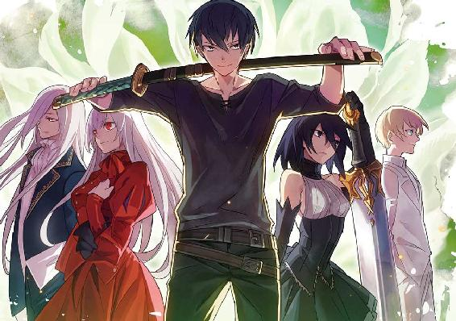
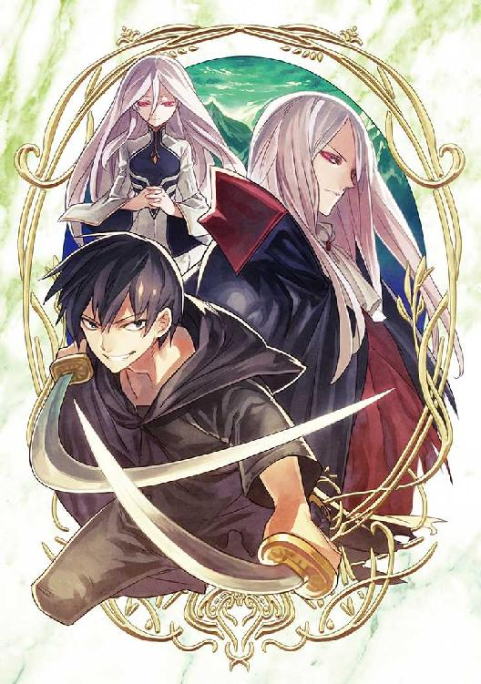
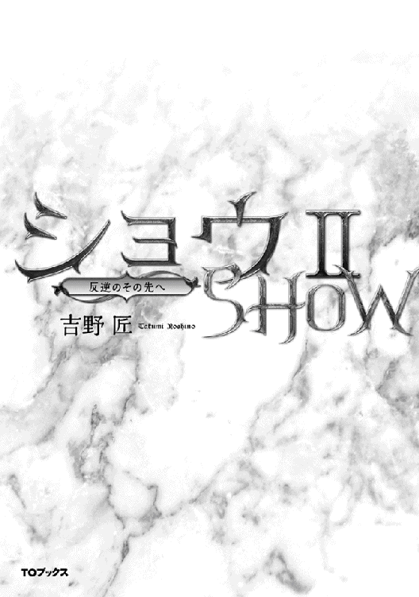
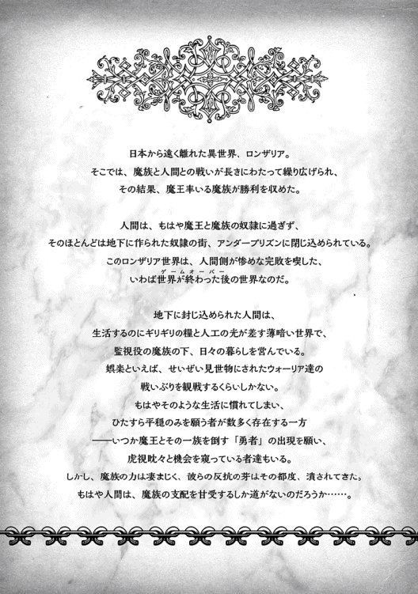
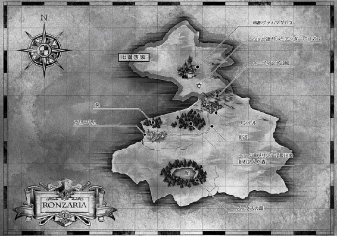
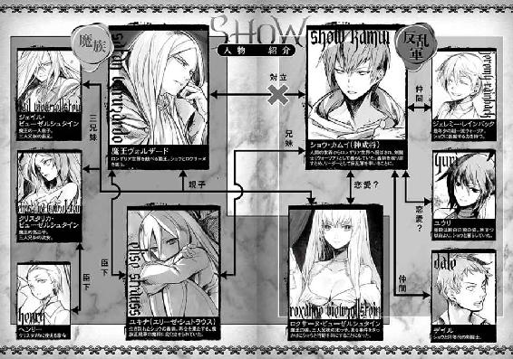
イラスト：天野 英 Hana Amano
デザイン：ヴェイア Veia
マップ制作：藤代 陽 Yoh Fujishiro
序章 魔王との対面
魔王とは、よほどに恐ろしげな顔をしていて、しかも身体も龍のようにごついのだろうと、人間達の多くは思っている。
鱗が皮膚を覆い、頭にはツノがあると本気で信じている者も、皆無ではない。
少なくとも、まだ魔王に会ったことのない人間においては。
しかし、あいにくそれらは明確な誤りである。
魔王ヴォルザードは、一見すると女性のように繊細そうな容貌であり、上がり眉ではあるがその眉も細く、むしろ男装の美女と言われても信じそうである。
長い白銀の髪を額で左右に分けており、これも一見すると女性っぽく見える。
要するに、長男のジェイルとはっきりと血の繋がりを感じる、優男っぽい容貌なのだ。 ただし、その印象は魔王その人と目を合わせるなり、劇的に変化する。
......魔王自身が落ち着いていて、いかなる感情の高ぶりも見せていない時でさえ、その薄赤い瞳と視線を合わせた者の多くは、自然と身体を震わせてしまう。
なぜだかはわからないが、自分の心の奥深く......それこそ幼児が闇を恐れるような根源的な部分で、骨が鳴り出しそうなほどの恐怖を覚えてしまうのだ。
魔将エリーゼ・シュトラウスの主君、今や全世界を統べる覇王でもある魔王ヴォルザードとは、そういう男である。
謁見の間の玉座に座す彼は、前を開けた裾の長い真っ黒な上着とズボンを着用しているが、上着には銀糸の模様があり、その下に着込んだ白いシャツもクラバットも、一分の隙もない。
ただし、裏地が真紅の黒いマントなどを羽織っているところは、見ようによってはヴァンパイアのようにも見えたりする。
ただし、本物のヴァンパイアでさえここでは一介の魔族に過ぎず、魔王ヴォルザードの前では平伏して頭を垂れる存在だった。
「おまえの報告はわかったが......娘とその反乱の首謀者たる人間は、取り逃がしたということで間違いないのだな？」
容貌からは想像もできない低い声でそう問うと、ヴォルザードは肘掛けに肘をつき、掌に顎をのせた。
謁見の間で数段高く置かれた黄金の玉座にあって、まさに見下ろされているわけだが、それだけならいつもと同じなので、エリーゼも気にしない。
気にするのは、ヴォルザードの表情がいつもと違って随分と冷たく見えることだ。
「左様でございます」
エリーゼはやむなく答えた。
見上げるほど高いこの謁見の間にあって、彼女と魔王との距離はせいぜい数メートルに過ぎないが、今この瞬間、エリーゼは以前より彼との距離が遠ざかったような気がしてならない。
「しかしお言葉ながら、あの反乱の真の首謀者はギーガン・ロシュフォードという男ですし、彼は倒しました。陛下の言われる男は、これまでのところ、特に罪を犯したわけではありません。それに彼は──」
言いかけた彼女におっ被せるように、ヴォルザードは冷ややかに述べた。
「おまえの言葉とも思えぬな、エリーゼ。報告はおまえだけではなく、運良く逃げ出した他の兵士からも来ている。それによれば、そのショウと名乗るウォーリアの男は、公然と魔族軍の兵士を殺し、しかも反乱の一翼を担っていた形跡もある。これで罪を犯してないとは、少し苦しいだろう......むしろ重罪ではないか」
「し、しかし大いなる君っ」
エリーゼは、片膝をついた姿勢のまま顔を上げた。
「先程、ご説明申し上げたように、あのショウと申す者は、私の兄かもしれません。本人がそう主張していますし、何よりこの私も彼を見ていると──」
「戯れ言だ、エリーゼ」
頭上から降ってきた厳しい言葉に、エリーゼは思わず絶句する。
「おまえはどうも、大きな勘違いをしているようだ。そもそもそのショウとやらを兄だと主張するが、本当に血の繋がった兄だと思うのか？」
「い、いえ......それは私の見かけが今はこうですし、さほど似てもいません。しかし、いずれにせよ、彼とは義理の兄妹だったように思うのです。血が繋がっていないのなら、特に不思議はないのでは」
「それを、戯れ言だと申している」
またしてもヴォルザードはエリーゼの懇願を遮った。
「おまえはどこから見ても純血の魔族だし、それを否定する者もこれまではいなかった。予が行った儀式によって確かに力は強化されているが、魔族であることは疑うべくもない。そもそもの初めから、その男の話に耳を傾けるべきではなかった──」
「しかしっ。私の心が主張するのです、大いなる君！」
ついにエリーゼは、声を励まして自ら魔王の言葉を遮った。
血の儀式を経てより九年、修練を積んで魔将として戦うようになってからはや五年──その間、一度もなかったことである。
さすがに驚いたように目を見開くヴォルザードに、エリーゼは泣き濡れた瞳を向ける。激情のために、既に真紅に染まっていた。
「私のこの心がっ」
小さな拳で戦闘スーツの胸を叩き、声高に主張する。
「あのショウは他人ではないと囁くのですっ。無理に戦おうとすると、剣を向ける相手ではないと、大声で主張するのです。この思いをどうすることもできませんっ」
彼女らしからぬ声音に、静まり返った謁見の間に低いざわめきが洩れた。
無論、広間を警護する衛兵や、二人から離れて立つ王宮付きの兵士などが洩らした声だろう。それに触発されたわけでもあるまいが、魔王ヴォルザードもついに声を荒げた。
「──もうよいっ」
玉座を立った魔王は、「衛兵っ」と呼ばわった。
「魔将エリーゼが、娘を連れ戻す任務を怠ったのは明らかだ。その罪により、しばらく地下牢にて謹慎を命じる。──この場から連れて行けっ」
「大いなる君っ」
愕然としたエリーゼが叫んだが、もはやヴォルザードはエリーゼを見もしない。すぐに左右から衛兵が近付き、遠慮がちにエリーゼの腕を取ろうとした。
「私に触るな！」
この時ばかりは、普段の冷たい叱声を叩き付け、エリーゼは立ち上がった。
「......引きずってもらわずとも、城の地下までくらい、自分で歩ける」
そう言い捨てると、そのまま踵を返す。
もはや、彼女自身も尊敬する「大いなる君」に対し、以前と同じ思いを抱けなくなっていた。
その証拠に、エリーゼはついに一度も振り返ることなく、衛兵に囲まれるようにして謁見の間を出て行ってしまった。
エリーゼ・シュトラウスが謁見の間を出た瞬間、ヴォルザードは深々と息を吐き、彼らしくもなく疲れたように玉座に座り直した。
その脇に、音もなく近付いた女性がいる。
最初からずっと広間の隅で控えていたのだが、エリーゼが消えた途端、いそいそと寄ってきたのだ。魔族には珍しく、肩より少し長い真紅の髪が目立つ女性で、勝ち気そうな容貌の魔王の第二子、クリスタリカである。
瞳の色こそ魔族の上位種そのままだったが、髪の色が違うだけでも、この謁見の間では特殊な存在だった。
魔王の実子たる三兄妹の中で、彼女のみが母親が違うせいなのだが......迂闊に彼女の前でそのことを指摘して、生き長らえた者はいないと言われている。
「お父様も大変ですこと」
妹のロクサーヌよりさらに吊り上がった瞳をきらきらと輝かせ、クリスタリカは、父に囁く。
「ロクサーヌを連れ戻すおつもりなら、あたしが行ってもいいですわよ」
先進的な魔族内でもあまり見ない、タイトなミニのスカートに、ノースリーブのぴっちりしたビスチェを着たクリスタリカは、いかにも勝ち気そうに見える。妹のロクサーヌにさほど似ておらず、間違ってもおしとやかには見えない。
実際、彼女を怒らせたり不興を買ったりすると、人知れず魔界の帝都ヴァルマグロスから行方不明になると噂されており、かねてから魔王を悩ませる存在だった。
ヴォルザードが渋面で見やると、クリスタリカは慌てて言い募った。
「いえっ。あたしだって暇ではありませんけど、お父様のご負担を少しでも減らそうと」
「おまえに命じると、予はロクサーヌの死体と対面することになりそうだな」
大真面目に言ってやったせいか、クリスタリカは一瞬、絶句した。
すぐに表情を取り繕ったが、もう今更である。
「そうは仰いますが、お父様だって、エリーゼを送り出す前に、『いざとなれば殺すのもやむなし』と命じていたではありませんか」
「確かに申した」
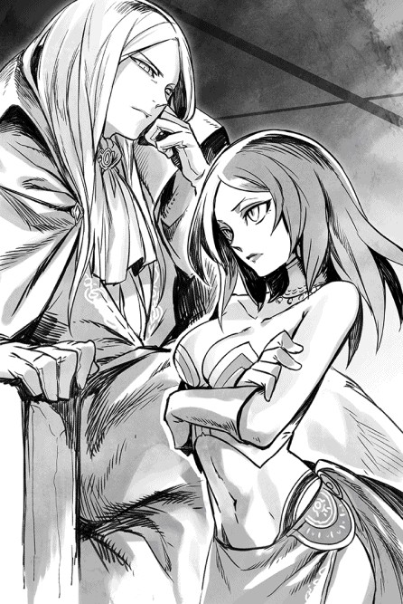
ヴォルザードはあっさり認めた。
「しかしそれは、あのエリーゼなら予の気持ちをおもんぱかり、可能な限り生きたまま連れ帰るだろうとわかっていたからだ。しかし」
とそこで一拍置き、皮肉な目で娘を見やる。
「おまえの場合はこれ幸いと、問答無用で殺す気がするぞ」
「い、嫌ですわぁ、お父様。あたしにとってもロクサーヌは可愛い妹ではありませんか。そりゃ、生きて戻った方が嬉しいですわよ」
熱心に言い募るクリスタリカを、ヴォルザードはじいっと見つめた......それこそ、クリスタリカ自身が戸惑って目を逸らすほどに。
やがて、魔王らしくもない疲れたような声で囁いた。
「......その言葉を素直に信じられたら、予はとうに後継者を決めていたであろうな」
☆
足音も高く謁見の間を出たクリスタリカは、外の石廊下に控えていた配下が慌てて従うのを見向きもせず、そのまま無言で歩き続けた。
かなり離れてからようやく息を吐き、憎々しげに言い捨てた。
「さすがにここからじゃ聞こえないでしょうから、堂々と愚痴るけど」
わざわざ前振りをしてから、斬り裂くように言う。
「ホント、あのクソ親父は頭に来るわっ」
「......と申しますと、陛下のことでございますか」
銀髪を後ろにとかしつけた家令が、控えめな声で訊く。
まだ少年のような若さではあるが、この女主人に仕える難しさは、とうに承知している。
「他に誰がいるっていうのよ」
じろりと薄赤い瞳で睨み、クリスタリカは吐き捨てた。
「とにかくあの様子だと、親父の言質を取って、ロクデナシの妹を公然と片付けるのは無理そうね」
「......では、しばらく静観ということで」
「おまえ、馬鹿なの？ 首の上に乗っかってるのは、頭じゃなくて藁の固まりかしら」
ついに足を止め、クリスタリカは侮蔑の声を浴びせた。
「何もしなきゃ、何も変わる訳がないじゃない。こういう時に自ら動かずして、どうして運命が変わるもんですか」
「それはそうですが、しかし」
「しかしじゃないの！ すぐに手を打ちなさい、ヘンリー」
だんっとわざとらしく足を踏み鳴らす。
「腕利きの間諜を大勢放って、ロクサーヌの居場所を突き止めるのよ。少なくとも、直前にいた場所はアンダープリズンの一つなんだから、難しくないはず」
「ははっ。しかし、本当にすぐに行動に出るのですか。今は陛下の目も」
「ヘンリー」
たちまち濃い真紅に変わった瞳で、クリスタリカが家令に顔を寄せる。
「おまえ、誰の臣下なのよ、えっ」
それこそ、呼気がかかるほどに。
「それとも、もしかしてあたしの命じたことが、聞こえなかったのかしら。なに、ひょっとして耳にゴミでもたまった？ なんならあたし自ら手を突っ込んで、徹底的に掃除してあげましょうか？」
......本当に実行しかねないのが、このクリスタリカだった。
「屋敷に戻り次第、すぐにご命令を実行致します」
ヘンリーはスーツの胸元に片手をやって、深々を身体を折り、狼狽した表情をかろうじて隠した。
第一章 地上へ
意図して、魔族が人間を閉じ込めた地下牢獄──つまりアンダープリズンから脱出するために動く羽目になったショウ・カムイは、しかし今や、自分もきちんとした動機を持って動いている。
──九年前、日本で普通の小学生として暮らしていたショウは、ふいに自宅に押し入った魔族の下位種に母を殺され、妹のユキナを攫われた。
攫った魔族を追って自分もこのロンザリア世界にやってきたショウだが、そこは魔族によって人間が大敗した後の世界であり、彼らのほとんどは奴隷として細々と生きていた。
しかも、やっと見つけた妹は、なぜか魔王によって新たに魔族戦士として変化させられ、人間の敵である「魔将」として、第二の人生を歩んでいたのだった。
ユキナは、兄や家族のことなど完全に忘れてしまっており、束の間の再会の後、すぐに魔王の元へ戻ってしまう。
今やたった一人残った肉親である妹の変貌ぶりにショウは驚き、悲しんだが、もちろんそれで諦める気はさらさらない。
愛する妹と再び家族として暮らす日が戻るよう、ユキナを魔王の手から取り戻す決意をしている。
最悪、一人でも魔王の住む城へ出かけてユキナを取り返すつもりだったが、今や好むと好まざるとに関わらず、ショウにはウォーリア仲間が大勢いる。
皆、元の世界で言う古代の剣闘士のような存在だが、元々の反乱首謀者であるギーガン・ロシュフォードとの対立を経て、ショウを中心にがっちりまとまっていた。
いや、むしろショウから見れば、「みんな、それでいいのか!?」と問いかけたくなるような割り切り方で、魔族との戦いを決意している。
こうなると否応なくリーダーに据えられたショウも、責任を感じずにはいられない。
ともあれ......監視棟から出たショウがまず一番にやったことは、監視棟の前に仲間を全員集め、こう宣言することだった。
「早速、みんなで地上へ出ようと思う」
『うおっしゃーーーーっ』
などと大喜びで歓声を上げたのは、ウォーリア仲間達だけだった。
途中からポツポツとショウの元へ集まったのだが、総勢五十名はいるだろう。生存中のウォーリアで、主だった者のほとんどが参入している計算になる。
ただ、元々ショウではなく、ヒーロー（救世の英雄）を自称していたギーガンの元に結束していた人間達は、戸惑ったように顔を見合わせる者が多かった。
彼らはギーガンの命令でショウ達を襲ったのだが、逆に迎撃に出たウォーリア達やユウリによってあっさりと叩きのめされ、しばらく捕虜として拘束されていたのだ。
ギーガンが魔将であるエリーゼ（ユキナ）に殺された時点でショウの指示で解放されたが、正直、今はどうしたらいいか分からないというのが、本音だろう。
一応、これまでの経緯は説明してやったが、だからといってすぐにショウにつくというのも、厳しいかもしれない。
ショウもそれを察し、後ろの方で固まる彼らに声をかけてやった。
「ギーガンの元仲間の君らは、自分の信じるところに従って行動するといい。俺達は地上へ脱出するつもりだったが、別に他人に強制する気はまったくない。一度解散して、家に戻るのもいいだろう......ただ、その際に一つ頼みたいんだが」
ショウは少し考え、言った。
「さっきも言ったように、俺達は隠し通路から地上に出る。場所は東南の隅っこにあるんだが、俺達がいるからわかるはずだ。そこで一時間だけ待つから、なるべく大勢の住人に共闘を呼びかけてくれないか？ もちろん、気が向かなきゃそれも強制しないが」
元反乱軍の住人は、ざっと見ただけでも百名はいる。
その数の多さを見込んで頼んだわけだが......反応はイマイチ鈍かった。皆でそっと顔を見合わせていたが、やがてそのうちの一人が進み出てこう述べた。
「話はわかった......とにかく、俺達は家に戻ってもいいわけだな？」
「ああ、もちろん」
ショウが頷くと、初めはおずおずと......しかし、時間が経つにつれてショウの気が変わるのを恐れるように、皆そそくさと散って行った。
別に感涙とか歓声とかを期待していたわけではないが、このテンションの低さには、ショウも少しがっかりした。先が思いやられるとは、このことだろう。
「なんだい、あいつら。あんなんで、よく反乱なんか起こそうと思ったよね」
仲間の女戦士の一人が、吐き捨てるように愚痴る。
正直、ショウも賛成したいところだった。
「彼らは、当初から心地よいセリフばかりを並べるギーガン・ロシュフォードに釣られただけで、本当の意味で覚悟があったわけじゃないんだろうね」
仲間内では珍しい、金髪の見目麗しい戦士であるジェレミーが、肩をすくめて言った。
「ヒーローを自称したギーガンが先頭に戦うのなら、まあ後からついていってもいいかなという......そんな程度の思いだったんだろう」
「ところが、その偽ヒーローのギーガンがあっさり亡くなったため、今やハシゴを外された気分になっちまったと」
浅黒い肌をしたデイルが、呆れたように後を引き取った。
女好きの陽気な男だが、さすがに今は大怪我をした後だけに、仲間の女戦士にちょっかいを出すほどの元気もないようだ。
「別に、彼らの助力は期待してないんだが」
ショウはうんざりして独白した。
「しかし、かと言って自分達だけで最後までやれるとも思わない。どちらにしても、戦力はいるよな」
「あの、ショウ」
寡黙なユウリが、遠慮がちに声をかけた。
「どうした？」
「さっきの彼らに期待せず、街中に呼びかけてみてはどうですか」
「......ユウリが増幅してくれるってことか？」
念のためにショウが尋ねると、ユウリは小さく頷く。
「増幅とは？」
早速、ジェレミーが訊いた。
「つまりだな......ユウリの魔力で、俺がここで話したことを、そのまま街中に響かせるってことだよ。声を増幅するってこと」
黙ってやりとりを聞いていたロクサーヌは、ちょっと唇を尖らせてユウリとショウを交互に見やる。
特に反対などはしなかったが、その代わり、「なんでしたら、ロクサーヌも戸別に訪問してショウへ従うようにお勧めしますわ」などとショウに主張した。
ちなみに、このメンバーの中では彼女のみが魔族であり、しかも魔族のエリートたる魔王の娘である。
数奇な運命でショウと行動を共にすることになったが、本来ならここにいるはずもない女性だった。
「後でロクサーヌにも頼むかもしれないさ」
ショウは微笑して答え、しばらく考えてから決断した。
「とりあえず、今は俺の声を届ける方法でやるか。照れくさいとかなんで俺がとか、言ってる場合じゃないよな。やっぱり、呼びかけは必要だろう」
「そりゃ必要さ！」
嫌過ぎることに、ジェレミーが即答してくれた。
「ここは一つ、魂が震えるような熱い演説を頼むよ。アンダープリズンの住人が、一瞬で覚醒して歓喜の涙を流しつつ、『身命を賭してショウ様についていきます！』とか叫んで、着の身着のままで家を走り出るような感じのを」
満面の笑みで阿呆なセリフを垂れ流すジェレミーを、ショウは信じ難い生き物を見るような目で見やる。一人だけ純白のスーツなど着込んでいるが、こいつは最初からいる場所を間違えているのではないか。
「親衛隊を引き連れたアイドルじゃあるまいし、一介の剣士に無茶言うな、馬鹿」
用語的に言語変換の魔法で通じるかどうかはわからないが、思わず言い返してしまう。
理解されたのかは不明だが、ジェレミーは顔色も変えずに言った。
「だって君は、新たなヒーローじゃないか。アイドルと変わらないさ」
「俺はなあ、そんなイカサマ英雄になった覚えはないんだよおっ」
自重するつもりだったのに、気付けばショウは大声で怒鳴っていた。
一度だけ練習をした後、本番の演説のために、ユウリに頼んだ。
彼女の「増幅」の能力は魔法とは全く別物なので、ロクサーヌも興味津々の目つきで眺めていたのだが──やり方としては、ユウリがショウの肩にそっと手を置いただけである。
「いいですよ」
と静かに言われた途端、ショウは嫌々、演説を始めた。
「アンダープリズンの同胞達よ、聞いてくれ！」
声を放った途端、木霊するようにショウの声が大きく反響して聞こえた。
無論、この調子でアンダープリズンの全域に響いているのだ。仲間が驚いて騒ぐのを無視し、ショウは一気に続けた。
「もう知っているかもしれないが、自らの野望を隠し、魔族達への反逆を焚きつけたギーガン・ロシュフォードは、魔族の正規軍によって潰された。この俺......つまり、ウォーリアのショウは、当初はこの反逆事件に巻き込まれる形で戦いに加わったが、ギーガンの仲間じゃない。むしろ、ヤツのやり方には強固に反対していたクチだ。それでも、俺は当面の敵を追い払った今、みんなに『できることなら立ち上がれ！』と声を大にして言う」
一区切りしてそっと周囲を見たが、仲間達はみんな、熱心に聞いてくれているようだった。ここから見えるアンダープリズンの家々の窓やドアは閉まったままだったが、願わくば少しでも彼らの心に届いてくれと、ショウはまた声を張り上げる。
「今になって俺がそんなことを言うのには、もちろん理由がある。俺自身が何年もこの牢獄で暮らしてきて、つくづく思ったことがあるからだ。それは、『人間は誰かに飼われる存在であってはならない』という、当たり前の事実だ。餌だけをもらって満足するペットとして生きちゃ駄目なんだよ、俺達は。もしそう強制する者がいたら、剣を取って戦うべきなんだ！」
やや熱くなりかけ、ショウはそこで息を吸い込む。
ロクサーヌをちらっと見て、落ち着いた声音でさらに述べた。
「そういう当たり前のことを気付かせてくれたのは、なんと人間でもない魔族のロクサーヌだった。彼女は、俺達を解放するために、このアンダープリズンへ来てくれたんだ。これが一つの転機となり、俺は彼女や仲間と共に、今新たな戦いを始める決意をした。少しでも共感してくれる者、あるいは自由のために戦いたいという者は、誰でも大歓迎する。一時間だけ待つから、アンダープリズンの南東隅まで来てくれ。......以上だ！」
ユウリに頷いて終了を告げた途端、ロクサーヌが拍手してくれた。
それに釣られたように、仲間も散発的に手を叩き、それがそのうち大きな拍手となった。
「おぉー、戦い振りはいつも見てたけど、帝王の演説は初めて聞くなぁ」
「というより、いつもそそくさとアリーナから出て行くから、あんな長い話をしてるの、初めて聞いたねぇ」
「ほらほら、やればできるじゃない、ねぇ？」
それぞれ、勝手なことを言うウォーリア連中である。
無論、ショウは演説のことには一ミリも触れず、渋面で仲間を見渡し、宣言した。
「いいから、早く移動すっぞ！」
率先して、さっさと秘密の脱出口まで移動した。
秘密の脱出口というと実に大仰だが、問題の場所は東南の角にある、普通の岩盤層である。そこの一角に手を当てて秘密の短縮呪文を唱えると、戸板ほどの幅の岩を身体ごと透過して、奥に続く狭い通路に出ることができる。
ロクサーヌ曰く、「いつかは魔力が切れて短縮呪文に反応しなくなるでしょうけれど、それはまだ百年は先だと思います」とのこと。
「出口までは急な坂になってるが、二人ずつ並んで上っていけば、半時間ほどで地上まで着くと思う。少なくとも、俺とユウリが試した時は、そんなもんだった」
説明を終えたショウは、そのまま岩盤層に持たれ、腕を組んだ。
「約束通り、一時間だけ待ってから出発しよう」
「んでもって、誰も来なかったりしてなー」
デイルが無精髭を撫でながら笑う。
何がおかしいのか、釣られたようにウォーリア達が全員笑った。
「あっはっは！ その時はみんなで無冠の帝王改め、『ボッチのショウ』って呼ぶことにしようぜぇええ」
「あははっ。よしなよ......誰も来なかったら、あたいが慰めてあげるし」
「おまえのご面相じゃ、あいつの上玉ハーレムには入れてもらえんわー」
「うっさいねぇ。モテないブサ男は黙ってな。そっちこそ、裏も表も同じような顔してるくせにさ！」
「んだとごらぁああ」
「喧嘩かっ。おうおう、やったらんかーい！」
たちまち周囲が騒がしくなった。
無駄に陽気なウォーリア連中である。
「やかましいぞ、おまえらあっ」
いい加減頭に来て、ショウは怒鳴った。
もちろん本気ではないが、「ボッチのショウ」にぐさっと来たのである。
「静かに待て、静かにっ」
実際は、「ボッチのショウ」と呼ばれるのは、回避できたらしい。
期待したよりは遥かに人数が少ないが、ポツポツと人が集まり出したからだ。多くは、アンダープリズンの中でも特に貧しい、貧民達だが......あるだけの食料を背中に担ぎ、よろよろと歩いてくる様子は、まさに難民そのものである。
一応、ファイトマネーが入るだけに、ウォーリア達は多少は懐が温かいのだが、アンダープリズンの住人のほとんどは、そもそも魔族の配給食糧に頼っている者が多い。
そのせいもあって、粗末な貫頭衣を着込んだやせ細った男女ばかりだった。
「あの......ショウ」
しまいには、憂い顔のロクサーヌがショウの右隣に身を寄せ、囁きかけた。
「確かに戦力は必要でしょうけど、あの人達は」
「うん、わかってる」
ショウは安心させるように言った。
「俺だって、彼らに無理に戦わせる気はないよ。ただ、さっきのギーガンの太鼓持ち連中じゃなくて、自分の意志で『自由になりたい』って思う人なら、現状がどうあれ、何とかしてやりたいじゃないか。俺は妹やロクサーヌの助力になりたいってのが戦う動機だが、本来革命軍ってのは、自由のために戦うのが筋だろ」
「そ、そうですわね......ええ、そうですわね......もちろんそうですわね」
都合、三回も同じことを言い、ロクサーヌはとろんとした瞳を向けた。
なぜか頬を染めている彼女は、両手を自分の頬に当て、嫌々をするように首を振った。
「ロクサーヌのために戦う、ですか？ うふふ......すっごく嬉しいセリフです。あの、できればもう一度言ってくれませんか。いえ、一度と言わず、十度くらい」
......微妙に自分の言ったセリフを改変されている気がしたが、もちろんショウもそこまで突っ込む気はない。
ただ、いつの間にかぴったり隣にくっつかれたのには参った。
この子は、最初の印象より積極的な子だったらしい。
いや、嬉しいことは嬉しいが、デイルのじっとりとした目付きやジェレミーの意味ありげな笑み、それに左横のユウリが、さりげなく横目で観察しているのが気になる......特に一番最後が一番堪えたりする。
「いや、あの」
などと言い訳を垂れ流そうとしたところで、ウォーリア仲間の一人が、呼んだ。
「うぉーい、帝王！ キスする十秒前みたいな時にすまんが、お客さんだぜぇ？」
「だ、誰がキスする十秒前だよ。だいたい、俺は別に」
慌てて岩盤層から離れ、ショウは言い返す。
しかし、あいにく後のセリフは喉の奥に引っ込んだ。
「うわぁ──そういうお客さんか」
戦闘スーツを纏った集団が固まってこちらへ来るのを見つけ、ショウは呻く。
ユキナと戦った時にも見かけたが......あの全身一体化した黒いスーツは、魔族正規軍の印なのだ。
「ここで待機してたのは、まずかったようだね」
他人事のような口調でジェレミーが言ってくれた。
「元々僕ら、追われる身なんだし」
「今頃言っても遅いだろ。それに、住人に呼びかけもしないで、コソコソ出ていけるもんんか。それじゃ、ホントに負け犬みたいじゃないか」
ショウが言い返すと、ジェレミーは碧眼を瞬いて笑った。
「そうか、まあそれもそうだね......でも、この場はどうする？」
「そりゃおまえ、まず彼女を隠してだな」
「えっ」
「いいからいいから」
驚き顔のロクサーヌを、ショウは慌てて仲間達の後ろに押しやった。
そうしておいて、何気なく兵士達を待つ。
今更遅いかもしれないが、ものは試しだと思ったのだ。
都合、四十名ほどの魔族戦士達は、ひたひたとこちらに近付き、ショウ達を見つけて立ち止まった。
一際体格のよい戦士が前に進み出て、先頭に立つショウを見やる。
口元以外はほぼ隠れてしまうフェイスガードと一体化したヘルムを被っているせいか、ひどく不気味に見えた。
「反乱軍リーダーの一人、ショウ・カムイか？」
「いいや、人違いだね！」
ショウは泰然として述べた。
お陰で仲間が一斉に自分を見てしまい、内心で呻く。
こういう時は腹芸だと察してくれと言いたい。
とにかく、気の利かない連中の方は見もせず、大嘘を並べてやった。
「俺はキンジロウ・ニノミヤという名前のフォリナーで、このアンダープリズンでもまれに見る態度のよい囚人だぜ？ 今だって、ウォーリア仲間と一緒に集まり、道端のゴミを拾い集めてたところだ。つまり、普段からボランティアで街の掃除してんのさ。銅像立ててもらってもいいくらいだ」
うんうん、と一人で頷く。
相手が無言のままなので、やむなく少し間を置いて続けた。
「──で、今はちょうど掃除も終わって、みんなで帰るところかな。というわけで......善良な俺達を通してくれるかい？」
目だけが覗くフェイスガード越しに、相手はじいっとショウを見つめた。
上位魔族特有の薄赤い瞳が、戸惑ったようにこちらを見据えていた──が。そのうち背後を振り返り、部下達に合図した。
「間違いない、こいつがショウ・カムイだ」
「わかってるなら、最初から訊くなよ」
ショウは定番の文句をつけたが、相手はさらに命令を下しただけである。
「仲間のウォーリア共々、斬れっ」
「気が早いな、おい！」
途端に、ウォーリア仲間と魔族兵士達の双方が緊張し、どちらもざざっと前へ出ようとする。ところが一番先に動いたのは、ショウが押し込んだ仲間達の背後から走り出てきた、ロクサーヌだった。
「静まりなさいっ」
「──っ！」
魔王の直系である末娘の姿を見て、抜剣して斬りかかろうとしていた魔族達は、慌てて立ち止まった。
「ろ、ロクサーヌ様、ご無事でしたか」
ショウに話しかけた男が、声を張り上げた。
「今すぐお救いしますっ。今少し、ご辛抱ください」
「ご辛抱って、ロクサーヌは別に囚われているわけでは──」
言いかけた彼女は、なぜかはっとしたような顔でショウを見た。
途端にショウにぶつかるようにして身をすり寄せ、しかも既に抜刀したショウの右腕ごと、自分の前へ持ってくる。いつの間にか、ショウが彼女を抱え込んだ形になっていた。
恐ろしいほどの早業であり、ショウほどの戦士があっけにとられて為すがままになってしまった。
「早まってはなりませんっ」
呆然とするショウの腕を自分の喉元辺りまで持ち上げ、ロクサーヌは決然と告げる。
というか、彼女がいきなり勝手に腕を動かすものだから、意図せずして本当に喉元を斬りそうになり、ショウは慌てて怒鳴ったほどだ。
「おい、危ないから動かすな！」
親切に警告してやったのに、肘鉄を食らってしまった。
「見ての通りです。おまえ達が軽挙妄動で動くと、ロクサーヌの身も危ないのです。慎みなさいっ」
「はっ──いや、しかし」
愛想の欠片もなかった隊長格の男が、さすがに異論を唱えた。
「今、ロクサーヌ様自らが動いて」
「お黙りっ」
身も蓋もなくロクサーヌが遮る。
「どう見えようと、事実、ロクサーヌとショウは一蓮托生なのですよ。いいから黙ってこの場は去りなさい」
「あっはっは！」
「い、いやぁ、その作戦はさ」
──俺の得意な「人違い作戦」より無理があるんじゃないか？ とショウは思ったし、実際にそう言いかけた。
周囲の仲間の顔色を見れば、多くは同じ感想なのがわかる。
......ただ一人、他人事みたいに爆笑しやがったジェレミーを除いて。
もちろん、必死なロクサーヌの芝居にもかかわらず、魔族戦士達は動かない。まあ、これで本当に退くようでは子供の使いも同然なので、当然だろう。
しかし、ロクサーヌの必死な様子を見ていると、今にも彼女自身がショウの腕を動かして自殺しそうに見えるのも事実であり、双方、何となく動けなくなってしまった。
「......我が妹ながら、涙を誘うような健気さだ」
ショウは慌てて声がした方を見た。
今の今まで、全く気配がしなかったからだ。
それは魔族達も同じと見え、奇しくもこの場の全員が、新たに登場した男に注目した。 ショウの世界で言う、燕尾服に似た漆黒のスーツを着こなし、長い白銀の髪がやや片目にかかっている。
その青年を見た途端、ロクサーヌが嬉しそうに叫んだ。
「兄上、来てくださいましたか！」
「えっ」
驚いたショウが訊こうとするより早く、ロクサーヌはもう青年の方へ走っていく。そのまま軽く抱き合い、双方から笑い声が洩れ聞こえた。
随分と気安い仲らしい。
すぐさま、二人でなにやら嬉しそうに話し込んでいた。
「なんだなんだ」
「それより、ショウ」
ユウリが、そっとショウのシャツを引っ張った。
「あれを」
「......うわ」
ユウリが指差すまでもなかった。
一触即発だったはずなのに、なぜか魔族戦士の全員がその場に倒れている。もちろん、まだショウ達が何もしていないからには......あの男がやったと見るのが正解だろう。
「彼女が彼を兄と呼んだということは──魔王の長兄、ジェイル・ビューゼルシュタインだろうね」
博識のジェレミーがこっそり教えてくれた。
ただし、さすがに世情に疎いショウも、魔王の長兄の名前くらいは知っている。ロクサーヌと関わった以上、いつかは会うかもしれないと思っていたが......まさかこんなに早く巡り会うとは。
「兄はともかく、この兵士共は殺したんじゃないだろうな」
こっちのせいになったらたまらんよな、という思いでショウが呟くと、ユウリが首を振ってくれた。
「生きてますわ。おそらく、気絶しただけです......まあ、どのみちそれもわたし達のせいになるんでしょうけど」
「うぇぇえ」
思わず渋面になったショウに、話題の長兄が声をかけた。
「ショウ・カムイ......だったかな」
いや、「俺はキンジロウ・ニノミヤだ」と反射的に言いそうになり、ショウは自重した。
「はあ、まあ」
「......ちょっといいかな？」
意味ありげな視線で見られ、ショウはやむなくジェイルの元へ歩み寄った。
仲間が心配そうに見ていたが、戦うつもりなら、そもそも自軍の兵士を眠らせたりはすまい。
ショウが来ると、ジェレミーは妹のロクサーヌさえ優しく手で押しやり、ひそひそと話しかけてきた。
「妹の話では、君はロクサーヌを助けてくれたとか」
......内容の割に、なぜか不満そうな声音だった。
「確かにちょっと逃亡の手助けはしたけど、向こうも俺を助けてくれてるし、別に貸し借りはありませんよ」
息を飲むほど秀麗な顔に、ショウは礼儀正しく、しかしぶっきらぼうに答える。
一応、向こうの方が年上だろうから敬語で話しているが、あまり仲良くしたい相手ではない......と思う。
「ふむ」
少し意外そうな顔でショウを見やり、ジェイルは頷いた。
「素直な物言いは好感が持てる。実のところ、僕は人間とはあまり付き合いもないが......しかし、君には個人的に僅かばかりの共感があってね」
「と言いますと？」
「君は元々、自分の妹のために戦いを決意したと聞いた。その一点において、僕は君に同情している。なにしろ、僕もロクサーヌのためなら命をかけて戦うだろうからね」
「は、はあ」
まさか、ユキナにおかしな洗脳をした魔王の息子にそんなことを言われるとは思わず、ショウは戸惑ってしまった。
しかし彼はショウの態度など意に介さず、ため息をついて続けた。
「とはいえ、僕はロクサーヌが自分の立場を捨てて破壊的な行動に出るのは反対だ......しかし、妹はこうなると絶対に気を変えないからね。意外と芯の強い子なんだ」
「それはわかりますが」
「......本当にわかってくれているなら、ありがたいが」
ジェイルは一瞬だけ鋭い目つきでショウを見やり、すぐに離れた場所にいるロクサーヌの方を見て、表情を和らげた。
察しの悪いショウにすらもう明らかだったが、この人は妹にとことん弱いらしい。
「そういうわけで、僕もなるべくは君達に協力しようじゃないか。これからヴィルヘルム城へ戻り、可能な限り追撃の手が君達に及ばないように尽力しよう」
ヴィルヘルム城とは、魔族達の帝都ヴァルマグロスにそびえる、魔王の居城である。
「それはまた......望外のことですが」
驚いたショウは、かろうじてそれだけを口にした。正直、魔王の長子がいきなり自分達に味方するというだけでも、有り得ないような流れだと思う。
「なに、元々あの大戦が起こる前は、人間と魔族は別にいがみ合っていたわけではない。協力するのにやぶさかではないさ」
などと、さらに意外なことを言ってくれた。
大戦前のことなどほとんど知らぬショウにとっては、ほぼ初耳の話である。
「その代わりに、だ」
やけにゆっくりとジェイルが口火を切った。
ロクサーヌに背を向け、ショウの至近で目を細める。いつの間にか、その瞳が真紅に染まっていた。
「......ロクサーヌの身の安全については、君が責任をもってもらいたい。いいかな？」
やたらとドスの利いた声に、ショウは慌てて頷く。
脅されるいわれはないが、自分も妹のためにはそのくらいは言うかもしれず、頭に来ることはなかった。
「わかりました。元々、俺もそのつもりでしたし」
「そうか！ なら、我々の間で諍いが起きることはないさ」
嬉しそうに白い歯を見せたものの、なぜかその笑みもすぐに消えた。
ジェイルはさらに顔を近づけ、小声で尋ねてきた。
「時に、もう一つ訊きたいんだが」
「な、なんですか」
──じゃなくて、耳に息をふきかけないで下さいよ、と言いたくなるのを辛抱して、ショウは応じる。
ジェイルは一層声を低くくして言った。
なぜか殺気が籠もっていた。
「よもやとは思うが、もうロクサーヌに手を出したのではないだろうね？」
☆
たっぷりと肝を冷やした後、後をまたロクサーヌに任せ、ショウは皆の元へ戻った。
まあ、彼のお陰で自分もユキナへの伝言を頼めたし、全体的に見れば有意義な会合だった......と思いたい。
よほど奇妙な表情をしていたらしく、早速、デイルが尋ねてきた。
「おいおい、ショウ。なんだよ、その冷や汗かいたような顔は？ 帝王の異名が泣くぞ。一体、なにを脅されたんだ？」
「馬鹿、そういう意味の脅しは一切ない。むしろ、俺達のために時間稼ぎの工作してくれるって言ってたほどだ」
「へぇえええ」
感心したようにデイルが唸る。
「魔王の長子がねぇ......よほどシスコンなのか」
「まさか」
否定はしたが、実はショウも多少は感じていたことである。
「しかしよ、それじゃなにを焦った顔してんだ」
しつこいデイルがまたぞろ蒸し返した。
「別に。ロクサーヌに手を出してないかって訊かれたんだよ」
「......で、あいにく、とうに花を散らした後だったと」
などと絶妙のタイミングでジェレミーが口を挟んでくれた。
『きゃあーーっ』
お陰で、周囲で聞き耳を立てていたウォーリア仲間の女性達が、真っ黄色な声を上げたほどだ。
「馬鹿吐かせっ」
憤然としてショウは叫ぶ。
「俺は手も握って──いや、手くらいは繋いだが、とにかくそれだけだっ」
「冗談だよ」
ショウというよりは、そばで聞いていたユウリの表情を見て、ジェレミーは両手を上げた。
「それじゃ真っ当な質問をするけど、その手に持ってるのは何かな」
「あの人が、何かの参考になるかもと、ロンザリア大陸の古い地図をくれた」
羊皮紙に描かれたそれを、ショウは小さく畳んでポケットに突っ込んでおく。
「地上に出たら、見てみよう。とにかく、まずは地上に出るのが先決だ」
「お待たせした」
話は済んだらしく、ジェイルとロクサーヌが戻って来た。
途端に仲間の全員が押し黙るのが印象的である。さすがにまだ、魔王の長子に親しげに話しかけるのはためらいがあるのだろう。
「先程も言ったように、僕はヴィルヘルム城へ戻って、君達に追撃の手が及ばないよう、尽力しよう。とりあえずここは引き受けるから、そろそろ出発してはどうかな」
「お言葉に甘えましょう、ショウ」
ロクサーヌがにこにこと言う。
兄のジェイルとは気が合うらしく、何の危惧も抱いてなさそうだった。
「まあ......そうするつもりだけど」
ショウは眉根を寄せ、一応はジェイルに確認しておいた。
「倒れているこの兵士達、どうするつもりです？」
「別に殺す気はないよ......どうも君は、そう心配しているようだが」
朗らかな声で言われた。
「ただ、ちょっと君達のことは忘れてもらうだけだ。君達も、その方が都合いいだろう？」
そう言われると確かに。
ショウは肩をすくめ、頷いた。
「そういうことでしたら、申し訳ありませんがお願いします。──じゃあ、そろそろ出発するか」
皆をぐるりと見渡し、合図をした。
「ショウ君！」
歩き出そうとした途端、ショウはジェイルに呼び止められてしまう。
「......なにか？」
「くれぐれも、節度を持って頼むよ」
魔族の貴族階級たる長子に、この上なく真剣な顔で言われた。
先頭をデイルとジェレミーに任せ、ショウ達は最後尾を歩いた。
新たに集まったアンダープリズンの住人は、列の真ん中である。もちろん、さすがにここでは何もないだろうが、万一の時の警護のつもりで。
結果的に、なんとなくショウとロクサーヌが二人並び、ユウリはその後ろにつく、という配置だ。普通なら真っ暗なはずだが、入り口だけではなく、魔族の残留魔法はこの通路にも及んでいるらしい。
全員が歩き出した途端、頭上に等間隔で魔法の明かりが点った。
ショウが歩きながら、また地図を引っ張り出して眺め始めると、ロクサーヌがさりげなく話しかけてくる。
「ところで、兄とはなんの話だったのです？」
「ロクサーヌには手を出すなと、なるべく節度を持って行動するようにと......そりゃもう、学校の先生が休み前に出すような注意事項を、たっぷりされたよ」
ショウは渋面で教えてやった。
「話の大部分はそれだったし」
「まあっ」
「よい兄上ではありませんか」
憤慨したロクサーヌと、後ろを歩くユウリの声が重なった。
「どうしてですかっ」
むっとしたロクサーヌが、わざわざ振り向いて言い返す。
「ロクサーヌはもう十八歳ですわ！ もう大人ですし、いくら優しい兄上でも、そこまで心配される覚えはありませんっ」
ぷりぷりして主張しているが、大人の女はあんまり自分のことを名前で呼ばないとショウは思う。
どうでもいいことだし、元々の癖みたいなので、わざわざ注意はしないが。
「まあまあ。喧嘩するほどのことでもないよ」
穏やかに仲裁したが......これはかえってまずかったらしい。ロクサーヌにはしんねりと横目で見られるわ、振り向けばユウリの醒めた視線と目が合うわで、何となく居心地が悪かった。
お陰で、以後の道程はずっと黙り込んだまま歩く羽目になった。
通夜へ向かうような足取りで歩くこと、半時間......前の方から叫び声がして、ショウは一瞬、緊張した。
しかしすぐに、狭い通路内に新鮮な空気が流れ込み、先頭のデイル達が外に出られたのだとわかった。
もちろん、よどんだ空気が払拭されたのは、既に全員が知るところとなり、さっきまで疲れ切った顔で歩いていた元住人達まで、歓声を上げながら走り出していた。
「おいおい、足下に注意しろよっ。それと、外をちゃんと警戒してからだな」
言いかけたが、既に前を歩いていた男女のほとんどは、走り去った後である。
ショウ達は顔を見合わせ、苦笑した。
「まあ......無理もないか。一番長いヤツで、八年は閉じ込められてるからなぁ」
「そうですね」
思わず、ユウリと頷き合う。
ロクサーヌのみは、張り詰めた顔で囁いた。
「これからが本番ですね」
実際、そうなのかもしれない、とショウは思う。
なにしろショウ達が地上に出るのは、魔族から見れば脱獄と同義だからだ。
ショウ達が出た場所は、山裾の一角で、岩肌が露出した部分だった。
列の最後にいたユウリが出てしばらくすると、小さく開いていた出口はたちまち元の岩肌に戻り、周囲と見分けがつかなくなってしまった。
背後は山だし、前方は味気ない老木がぽつぽつと生える荒野のような場所で、本当に見るべきものは何もない。
時刻は日が沈んだ直後らしく、見上げれば満天の星空が広がっていた。
先に外へ走り出た者のほとんどが、頭上を見上げて感嘆の声を洩らしている。仲間になったばかりの住人の中には、感涙で嗚咽している者すらいたが、まあ、無理もないと思う。
リーダー役を押しつけられていなければ、ショウだって星空をいつまでも見上げていたいところだ。
事実、アンダープリズンで見上げる圧迫感のある岩盤層の天井と違い、今見ている星空は言葉にできないほど美しく、まるで無限に連なる世界の狭間を見ているようだった。
眺めているうちに、あの輝きのどれかが、自分のいた世界のように思えてしまう錯覚がある。
ひょっとして目を瞑ってもう一度開けば、何事もなかったように元の自分の部屋で目覚め、ランドセルを担いで小学校に行くことになるかもしれない。
もちろん、泣き虫で早起きの妹がドタドタと走ってショウを起こしに来るのも、笑顔で朝食の支度をする母親も、なにもかも元通りになっている。
そしてショウは幾ばくかの感傷の後、ようやく自覚するのだ......この世界で暮らした九年は、全て長い長い夢だったと。
そう考えた途端、胸が締め付けられるような望郷の思いに、ショウは目を瞬いた。
これ以上夢想するのは辛いだけなので、わざと何でもないように独白する。
「まあ......今の俺だって立派な現実さ」
小さく首を振り、ショウは望郷の想いを苦労して追い払った。少なくとも、以前よりは前進しているのだ。今はそれで満足し、さらに先へ進むべきだろう。
そもそもここで知り合ったユウリやロクサーヌ、それに他のウォーリア仲間も、今のショウにとっては大事な存在だし、守るべき現実のはずだ。
自分にそう言い聞かせ、ショウは地図に目を戻した。
古いとはいえ、どうせ街の場所はそう変わっていないはずだ。
アンダープリズンへ通じる機械式エレベーターがある場所は、もっと西にある小さな街だったと思うが、そこも昔は人間が住んでいた場所である。
ここからでも、辛うじて黒い影のように街の跡が見え、僅かな明かりが瞬いていた。おそらく、魔族の見張りがいる印だろう。
「まさか、アンダープリズンへの入り口がある、あの街へ行く気じゃないよね」
しばらく星空を眺めて満足したのか、ジェレミーがショウの持つ地図を覗き込んだ。
「いや、ちょっと歩くことになるが、まずは山を越えよう。一応俺達、脱獄者兼逃亡者だしな」
ショウは真っ黒な影を見せてそびえ立つ、背後の山を振り返る。
「ほら、ここに街道がある。さすがに、朝になるまでには越えられるだろ？ メーヴィング山脈だっけか？ 幸いにして街道の通るここは、数百メートルクラスだし」
「......わかった。みんなに伝えて出発しよう」
ジェレミーはすぐに賛成し、早速仲間達に呼びかけた。
「ちょっとこっちに注目してくれ！」
第二章 人間は味方か？
メーヴィング山脈は、ロンザリア大陸の北部を東西に横切る山脈であり、かつてはこの山を境に北側が文化の中心たる中原......南側は魔獣などが跳梁跋扈する、未開発の地とされていた。
もちろん、ここ数十年の間に南方も開発が進み、一昔前ほど未開の地ではない。
噂では、魔族が全大陸を支配してからは、蒸気機関車も開通していると聞く。
無論、それなりの規模の街もたくさんあるし、なにより、アンダープリズンの多くは、北方より南方にあった。
ちなみに魔族が定めた人間の階級は四つあり、それぞれ上から、ブルー、ホワイト、ブラック、レッドとなっている。
ブルークラスとホワイトクラスは、魔族と人間の大戦が起こった時、最初から──あるいは極めて初期の段階で魔族側についた人間達で、彼らのみは地上に住める。
ブラッククラスとレッドクラスは奴隷階級で、それぞれアンダープリズンに放り込まれていた階級だ。両者の違いは、おおざっぱに言えば魔族に役立つ仕事に従事しているかどうかの違いであり、人間の大半は単なる奴隷であるレッドクラスに位置する。
このクラスだけで、全体の九割に当たるほどだ。
当然ながらショウ達ウォーリアもレッドクラスだが、地上に出た以上は、ここで出会う人間はブルークラスかホワイトクラスになるわけだ。
万事に用心深いショウは、まず仲間内から人数を割き、「先行して各アンダープリズンと連絡を取ってくれ」と頼んだ。
脱出する前にジェレミーから、「ギーガンが植え付けた革命の芽のお陰で、他のアンダープリズンでも暴動騒ぎが起こっているようだ」とは聞いていたが、その情報は元々、魔族軍の兵士から流れてきた情報であり、信憑性は心許ない。
そこで、まずは自分達の使いを出し、真偽を確かめようというわけだ。
情報通り、各アンダープリズンで騒ぎが起きているようなら、戦っている連中に対し、既に脱出に成功したショウ達と合流するように伝えられる。
さらに、自分達も他のアンダープリズンへ使いを出してくれるだろう。
普通なら、脱出はおろか侵入するのも難しいアンダープリズンだが、ジェイルが譲ってくれた地図には、各アンダープリズンの正確な位置と、その秘密の脱出口が全て記載されていたのだ。後で詳細に地図を調べたショウが、「こりゃ、なかなかのネタじゃないか」と唸ったほどである。
もちろん、使いに出す仲間にもこの地図を見せ、まだ見ぬ同志に教える予定の「秘密の脱出口」の場所を、各自頭に叩き込んでもらった。
そうして一部を先発隊として出した後、いよいよショウ達もメーヴィング山脈を越えることにした。
当然ながら、夜の山道は街道と言えども真っ暗闇であり、本来ならウォーリア達と言えども歩くのに苦労しただろう。
しかし、各自が自分の財産や食料などの荷物を持ち歩いていたし、その中にはちゃんとカンテラなどの装備もあったので、そうそう困ることはなかった。
ショウも、ディープブルーの鉱石を使ったカンテラを手に持ち、背中には細々した荷物と私財を入れた革袋を背負う......という装備で歩いている。
仮にカンテラが無かったとしても、いざとなれば魔法の明かりも出せるわけで、夜道にさほどの不自由はない。
おおむね、他の仲間達もそうだったが、参ったのは新たに仲間になった、アンダープリズンの元住人達だった。
ウォーリアほど体力もなく、日頃からロクに食事も摂ってない彼らは、正直、消耗が激しかった。数百メートルクラスの山と言えども──しかも登りで体力を使い切ったのか、下り道では一時間も歩くと酔っ払いのように蛇行を始め、休憩を申し出る始末である。
デイルなどは早速、「軟弱過ぎるよなぁ」と文句を付けたが、ショウ自身は彼らから頼まれれば、その都度休憩を入れた。
「あそこじゃ、俺達は食うものにも家にも不自由しなかったからな」
軟弱な元住人に呆れる仲間達に、ショウはそう諭した。
「その代わり、ソードフェスティバル（賭け試合）のせいでいつ死んでもおかしくなかったが、運良くこうして生き延びたんだ。少しくらいは大目に見てやらないと。......かつてのお客さんでもあることだし」
無論、後半は冗談だったが、それに反論した者がいる。
「待て、ショウ。わしは客じゃないぞ！ 元雇用主だっ」
「おおっ」
驚いて振り向くと、すぐ後ろに不平たらたらの顔で歩く、ザックがいた。
本人の申告通り、ショウ達が参加していたソードフェスティバルの、元雇用主であり、興行主でもある。いつもの赤い上着と乗馬ズボンではなく、今は目立たないような麻の貫頭衣を着込んでいた。
「あんたも来たのか！ 全然目立たないんで、気付かなかった」
「おまえが忙しそうにしてるから、声をかけるのを遠慮してただけだ」
むちゃくちゃ不機嫌そうに、この中年親父は言ってくれた。
樽のような体格のせいで、山道を歩くのがキツいらしい。
「言っとくがなぁ、この年になって生き方を変えるのは大変なんだぞ」
「なら、アンダープリズンに残ってればいいのにさ」
そばで聞き耳を立てていた女戦士の一人が、からかうように口を挟んだ。
「そうしたくても、ほとんどのウォーリアが出て行く今となっちゃ、もう仕事がないだろうがあっ」
ザックは真っ赤な顔で怒鳴る。
「わざと言ってるだろ、アンナ！」
「あっはっは、まぁねぇ」
アンナと呼ばれた女性戦士は、朗らかに笑った。
「あの日なのに、戦わせた恨みを晴らしてるつもり」
「言えば休ませてやったぞっ。今になって逆恨みか！」
「はいはい、揉めるなって」
ショウは慌てて助け船を出す。
「ザックも、いちいち腹を立てるなよ。体力勝負じゃ、ウォーリアに勝てっこないんだから、疲れるだけ損だぞ」
「わかっとるわい」
むっつりとザックが言い返す。
ショウが思うに、実際はアンナもからかっただけであり、本当に恨みに思っていたわけではないのだろう。
ザックは興行主としてはそうあくどい男ではなく、仲間の評判も悪くなかったからだ。他のアンダープリズンでは、それこそウォーリアを金の成る木くらいにしか思わず、少しでも不調を訴えると、鞭で拷問にかけるヤツもいると聞く。
「ショウ！」
考え込んでいると、一足先に麓の街へ走っていたデイルが戻って来るのが見えた。
彼もショウが頼んだ使いで、とりあえず当面の宿を確保すべく、麓の街へ先行してもらったのである。
駆け足で山道を往復したせいか、さすがのデイルもしばらく呼吸を整えていたが、ようやく息を整え、言った。
「一応......寝床は確保できそうだ......泊めてくれるとよ」
「だがしかし、と続きそうだな？」
ショウが促すと、デイルは渋面で頷いた。
「まぁな。......宿は用意するけど、できれば早急に出て行ってくれとさ」
「そんなっ」
黙って聞いていたロクサーヌが、憤慨したように言った。
「レッドクラスと言えども元は同じ人間なのに、こんな時に助け合いの精神がないんですかっ」
「......とりあえず、皆無ってわけでもないですけどねぇ。実際は、俺が思いっきり迫るから、渋々って感じですか」
なぜか彼女には敬語を使うデイルは、自分が申し訳なさそうに返す。
「ま、いいさ。泊めてくれるだけでもありがたいと思うことにしよう」
ショウはそう言ってデイルとロクサーヌを慰めた。
実は送り出した当初から、そう期待はしてなかったのである。
アンダープリズンに奴隷階級とされた人間が押し込められて、もう八年にもなる。その間、ブルークラスやホワイトクラスの魔族寄りの人間達は、地上でぬくぬくと暮らしていたわけだ。
今更、小汚いレッドクラスが地上へ這い出してきたと聞いても、当惑するのがオチだろう......少なくとも当面は。
彼らに植え付けられた間違った選民意識をどう変えていくかも、ショウ達の今後の働き次第なのかもしれない。
メーヴィング山脈の麓にある、リンデルという街に着いた時、おそらく零時はとうにすぎていたはずだ。
ショウ達ウォーリアはまだまだ元気が余っていたが、おおよそ五十名ほどいる新たな仲間が、もうへろへろに弱っていた。
正味、山道を数時間歩いただけなのだが、それだけでもキツかったらしい。
おまけに、街の入り口に着いたら着いたで、難しい顔の男共が複数集まって腕を組んでいるという......。
別にショウも、花火とくす玉で大歓迎というのを想像していたわけではないが、到着早々に強面の野郎が集まっているのを見ると、うんざりする。
ただし、連中の中心にいた茶色い上着とチョッキの男は、ショウが眼前に立つと、いきなり深々と一礼した。
「遠路はるばるお越し頂いたのに、お泊めするくらいしか協力できず、申し訳ない」
綺麗に整えた口髭に、押し出しのよい恰幅のよさを持つ中年だった。
訊けば、彼が町長だという。
「リッグスと申します。今、有志に温かいシチューを作らせているので、後でお泊めする庁舎まで送り届けます」
「いやいや、こちらこそ、いきなり押しかけて申し訳ない」
どちらかというと、無言のままで町長の背後に並ぶ男共の方を気にしつつ、ショウは手を振る。
「勝手に押しかけて来たのはこちらなのですから、泊めて頂けるだけでもありがたい。実は最初から追い出されることも覚悟していましたから」
「いえっ。まさか、そういうわけにはいきません」
探りを入れたショウに対し、リッグスは明確に首を振った。
「この街の住人はほぼブルークラスばかりで、確かに魔族様への敵愾心は薄いですが......だからといって同胞たる人間を素通りさせるわけにはいきませんよ。ただ、本来は街で唯一のホテルに泊まって頂きたいのですが、そこは今宵は宿泊客も多く、魔族様へ告げ口する輩がいないとも限りません」
申し訳なさそうに目を伏せ、続けた。
「やむなく、庁舎の方に皆さんが泊まって頂くお部屋を用意しました。そこでもよろしければ」
「いざとなれば野宿のつもりでしたから、屋根があるだけ嬉しいですよ」
「そう言って頂けると助かります。──では、ご案内しましょう」
また慇懃に一礼して、自ら先頭に立って案内してくれた。
ちなみに、護衛だか野次馬の住人だかはわからないが、彼についた男共は、結局最後まで何もしゃべらず、町長と一緒に歩くのみだった。
案内された庁舎とは、リンデルの街の南隅に建つ、煉瓦造りの立派な建物だった。
五階建てであり、普段は行政の中心を担う場所として、当然のごとく住民の出入りが絶えない場所らしい。
しかし、たまたま明日は街の休日に辺り、誰にも邪魔される気遣いはないという。
板張りの廊下も白い漆喰の内壁も、年代物ながら清掃が行き届いていて、落書き一つなかった。
ここの町長のリッグスは、かなり清潔を好むらしい。
しかも、今宵は町長室を含むほぼ全ての部屋が開放されていて、既に寝具まで運ばれていた。戦いに加わる気はないようだが、少なくとも非協力的とは言えないだろう。
ショウはなんとなく、「俺は一番最後に余った部屋でいい」と言って、仲間に先に部屋を選ばせたのだが......そうするとなぜか最後になって、「帝王とハーレム要員はあの部屋な」と古参のウォーリアにニカッと言われ、問題の町長部屋に押し込まれた。
さすがにショウも、「いやおまえ、俺と女性二人はまずいだろうっ」と今更のように騒いだのだが、誰も相手にしてくれなかった。
唯一、デイルが「なんなら、女性陣は俺と一緒でもいいぜぇ」と鼻息荒く申し出たものの、これは当の二人から完全に無視された。
「しかし......なんだかなぁ」
チーク製の、木目が目立つ執務デスクがどっしりと正面に置かれた部屋に入り、ショウは頭をかく。
寝具は確かにもう運び込まれていて、ちょうど三人分が来客用のソファーの上に置かれていた。この執務室には家具と言えばこの向かい合ったソファーが二つと、そして正面の執務デスクと、あとは書類を入れる木造のキャビネットくらいしかない。
なので、広さ的には十分なのだが、違和感はさすがに大きい。
特に、壁際に白黒写真らしき額縁が並び、歴代町長らしいおっさんがこちらを見下ろしているのが、非常に気になる。実に落ち着かない部屋だった。
「リッグス町長曰く、『ベッドの数が足りずに申し訳ない』だってさ」
なぜかショウ達についてきたジェレミーが、にこやかに言う。
「おまえもここで雑魚寝か？」
ショウが期待を持って尋ねると、「僕はそれほど空気の読めない男じゃないさ」と言われてしまった。
「じゃあ、なにしについてきたんだよ」
「......いや、休む前に君に尋ねておこうと思ってね」
ジェレミーは窺うようにショウを見やり、ずばり言う。
「町長をはじめ、ここの連中は信用できると思うかい？」
「信用したいとは思うさ。しかし......俺もそこまで素直じゃないな。そもそも、町長の取り巻き連中の一人は、上着の懐がヤケに膨らんでいた。あれは多分、短銃を隠してるな」
「ええっ」
ジェレミーではなく、ロクサーヌが目を見開く。
「あの髭の方は、礼儀正しくて良い人のように思いましたが......もし銃を持っていたとすれば、その取り巻きの人が護衛だからでは？」
育ちのよい魔族のエリートだけに、ロクサーヌは裏切り行為など微塵も疑っていないらしい......その代わり、町長の名前などは覚えてないようだが。
いや、ショウとて別に疑いたくはない。
「だといいと思ってるよ、俺も。しかしだ、銃もそうだけど、百名あまりいる俺達の全員をこの庁舎に案内したのも、妙だと思えば妙だ」
「それは......ここしか空いてる建物がないからでは？」
ロクサーヌが懸命に言い募る。
よほど、疑いたくないらしい。ショウも、その気持ちはわからないでもない。
「うん。だから、そうだといいなと思ってるって。何事もなく、昼前くらいまで休ませてもらえりゃ、そのまま出ていけるし」
そう言って肩をすくめると、ジェレミーも頷いた。
「それが一番だね。しかし、君がちゃんと護衛の銃に気付いてて安心した。アンダープリズンと違い、地上のブルークラスは裕福だ。銃を持つ者もその彼だけではないかもしれない。僕も注意するけど、くれぐれも油断しないようにしよう。......とりあえず僕は探りを入れてみるよ」
「悪いな。俺も今夜は、周囲を警戒しておく」
「──いえ、ショウはお休みください」
寡黙なユウリが断固とした口調で言った。
「わたしなら、一晩眠らない程度は何ほどのこともありません。幸い、これまで寝溜めしていますし」
「ね、寝溜めって」
驚いたようにロクサーヌが呟いたが、これは真実、ユウリの言う通りだった。
元々、ユウリは異世界で神扱いされていた女性であり、「眠る」という習慣がそもそもなかったのだ。ただ、ここ数年はショウのプラーナ（生命力）を共有するようになり、何となく彼に合わせて自分も夜は休んでいただけだ。その分、ずっと力を蓄えていたことになる。
いざとなれば十日や二十日は眠らずとも、全然問題にならない。
普段は断固として断るところだが、今回に限ってはショウもユウリに甘えることにした。万一の時に、疲れて動きが鈍るようでは困るからだ。
「......悪いけど、じゃあ今夜はそうしてもらえるかな」
「はい」
力強く頷いたユウリは、なぜか直後に身を寄せてきて、ショウの耳元に囁いた。
「ただし......わたしがいなくても、自制心を保ってくださいね。欲望に身を任せるつもりなら、わたしが戻ってからいつでも」
「待て待てっ」
慌ててショウは遮った。
「俺は悶々と夜を過ごす、エロガキか!?」
えっ、そんな目で俺を見てたのおまえっ、とショウは思ったのだが。
途端にロクサーヌが声を上げ、ジェレミーが声を上げて笑った。
「え、えろがきとはなんでしょう？」
「はっは！ 何を言われたか、察しがつくね」
「......と言うと、何を囁かれたんです？」
「いや、わざわざジェレミーに訊かなくていいんだよ、ロクサーヌ」
ショウは慌てて止めた。
しんねりとユウリを見やり、畳みかける。
「見ろ、話がややこしくなったじゃないか。ジェイルみたいなこと言うなよ」
「兄上がどうしましたか？ あと、悶々としたえろがきの件は──」
「その話はもういいんだ！」
ショウはきっぱりと首を振った。
このような雑魚寝の場合、お互いに意識しないのが一番......だと思う。
「でも......やはり心配ですから」
最後にぽつんとユウリが言ったのが、印象的だった。
☆
ブルークラスと言えども高価なはずの牛肉入りのシチューとワインが各部屋に配られ、ショウとロクサーヌもありがたく食べた。
ショウはワインの方は断って水差しの水で済ませたが、ロクサーヌはワインも美味しそうに飲んでいた。
しかもその飲酒量たるや、一瓶あったのに、瓶ごと空にする勢いである。
「城では、なぜか止められていたので......久しぶりだと美味しくて」
などと照れたように言い訳していたが、ショウとしては「なぜか止められていた」という部分が多少、気になったりする。
止められるからには、相応の理由があるはずだろうから。
とはいえ、ショウ自身も最初に一口だけ味見したが、特になにか薬を盛られている様子もなかったし、久しぶりならまあいいかと思っておく。
途中、食事を持ってきたおばさんに頼まれたのを思い出し、ショウは食器などを持って、一階の庁舎入り口まで下りた。そこに置かれた木箱に持ってきた食器を返し、また五階の部屋まで戻る。
言うまでもなく、五階には町長室以外にも部屋があり、そこでは割り当てられた仲間がそれぞれ入っているはずだが、もはや全員疲れて眠ってしまったのか、廊下は静まり返っている。
「ユウリの忠告通り、俺も休んでおくか」
なんとなく呟き、ショウは元の町長部屋を軽くノックしてから入った。
入った瞬間、「なにかまずいっ」と思った。
頭が素早く回らなかったせいだが、最初の衝撃が去ると、ようやくコトの重要性がわかった。
......最初、ロクサーヌがいつの間にか純白のシュミーズドレスに着替えたのかと思った。しかし、幾らなんでも半袖の薄絹製ワンピース風で、しかも下着が透けて見えるというのはどうだろう？
こっちのシュミーズドレスは、下着が透けて見えても平気なのか？
痺れた頭でちょっと考え、ようやく回答に辿り着いた。
「......もしかしなくても、それは下着姿？」
そういえば、ソファーの片方に例の赤いドレスが投げ出してある。
すると、窓の方を向いていたロクサーヌがようやく振り向き、片手にワインの瓶を持ったまま、ショウを哀しそうに見つめた。
「ドレス......着替えたいですわ......同じ服は辛いですもの」
独り言のように呟き、残っていたワインを豪快に呷る。ついに本当に瓶ごと飲み干してしまった。
「ええと、下着姿だってのはわかってるか？」
慎重に尋ねると、ロクサーヌは即答した。
「ロクサーヌは......酔ってませんよ」
嘘つけというか、そもそも誰もそんなことは訊いていない。
「いや、下着姿が」
「お馬鹿さんですわね、ショウは」
唇を尖らせて言うと、ロクサーヌは空になった瓶を放り投げた。
奇跡的に、床に落ちても割れずに済んだが、言語道断な音がして転がった。
「夜着もないのだから、下着で眠るしかないではありませんか。それとも、ショウが抱いて温めてくださるの？」
「待て。い、今のセリフ、前後の文脈が微妙に繋がってないぞ！」
そこで廊下の方で足音がして、ショウは慌ててそちらを見る。
近付いてきた人物──つまりデイルは、目を擦りながら不平を鳴らした。
「うるせーぞ、ショウ。こんな時くらいなぁ、とっとと寝ろよ」
どうも、隣りの助役の部屋には、こいつが寝ていたらしい。
「いや、今からそうするところだっ。何も気にするな！」
ドアを半ば開けたままだったショウは焦りまくり、部屋の中を背中で隠そうとしたが、これがかえってまずかったらしい。
「なんだよ、慌てふためきやがって──ちょっと待ていっ」
すかさず部屋へ入り、ささっとドアを閉めようとしたが、デイルがさっと靴を挟んで止める方が速かった。一応、ショウもデイルの視線を遮ろうとしたが、一瞬とはいえ、下着姿のロクサーヌを見られてしまったのは間違いない。
「うわっ」
ウォーリアにあるまじき、酔っ払いのごとき足運びで、デイルはよろよろと下がり、廊下の壁に背中をぶつけてしまう。
その間、なぜか人差し指で糾弾するようにショウを指差していた。
「こ、このエロガキ......まさか、本気でエロガキだったとは。虫も殺さないような顔して、もうロクサーヌちゃんに手を出しやがって」
「違うわっ。彼女は酔ってるだけだ！ 今から寝かしつけるんだよっ」
ショウは急いで説明し、ついでに我慢できなくなって指摘した。
「それから、おまえも後半の文脈が繋がってないぞ」
「うるせえっ！ もう事後だってか!?」
大の男が、実に悔しそうな声で喚いた。
本当に泣き出しそうに見えた。
「女日照りの俺をあざ笑うように、一人だけいい思いしやがって！ それでも友達かっつーんだっ」
「いや、それも壮大な勘違いでだな」
言い返しかけたが、もうデイルは廊下を走って階段の方へ消えた後だった。
この夜更けにどこへ行くつもりなのか知らないが。
「うふふ......どうかなさいましてぇ？」
いきなり柔らかい膨らみが背中に押しつけられ、ショウは柄にもなくぞくっと震えた。
語尾がむちゃくちゃ酔っていたと思う、今の声。
「い、いや。デイルとちょっと。それよりもう休む時間だ」
とろんとした目つきのロクサーヌに向き直り、その背中を押してやろうとする。もちろん、ソファーの方へ移動するためだが──。
ロクサーヌはがんとして動かず、なぜか上目遣いにショウを見つめた......相変わらず酔っぱらった目つきで。
「ショウはずるいです。なんだかユウリさんと比べて、他人行儀ですわ。魔族の、それも魔王の娘だからと言って、ロクサーヌを特殊な生き物だと思ってませんかぁ」
畳みかけるように言ってくれたが、語尾が伸びているし、上体がふらふら揺れていた。なんだか、酔っぱらった挙げ句、本音をぶちまけているようにも見えた。
「い、いやっ、別に特殊な人種だと思ったことは......ないと思うんだが」
「自信なさそうじゃないですかっ」
赤い顔のまま、膨れっ面でロクサーヌが睨む。
「ロクサーヌはぁ、別に体の構造が人間と違うとかぁ、そんな秘密はないんですよ......ただの女の子ですモン」
「し、知ってるけど」
語尾が酔ってるよ？ と指摘する代わりに、ショウは慌てて頷く。
「それならっ」
びしっと指差された。
「それならっ、普段からふつぅううの人間の女の子として扱うべきです......ロクサーヌは強くそう主張します！ いつまでもニブチンなのは駄目ですよっ」
色鮮やかな唇を尖らせ、小首を傾げた。
「わかりましたかぁ？」
ニブチンはともかく、何となく普段は言えないことをばしっと言われた気がして、この時ばかりはショウも素直に頷いた。
「そうだな......わかったよ、うん」
「よろしい」
ロクサーヌは一転して上機嫌で述べ、なぜか両手を差し伸べてきた。
「んっ！」
「......なんですか」
思わず敬語が出てしまった。
一つには、白銀の髪を全身に纏わりつかせた半裸の麗人が、五歳の幼女のように無防備な姿を晒しているので、動揺していたのである。これなら、魔族戦士の十名くらいを相手にした方が、まだ落ち着ける。
しかしショウの動揺などお構いなしに、ロクサーヌは上機嫌な表情で言った。
「わかったなら、抱っこして運んでください」
「えっ」
「いずれ、毎晩そうするんですから......今から抱っこして運ぶの」
ぼおっとした顔で何を言ってるのか。
「い、今一つ意味がわからんけど、眠ってくれるなら」
深呼吸などしてから、ショウは今度こそちゃんとドアを閉め、鍵もかけておいた。今更、手遅れかもしれないが、やらないよりマシだ。
そして、本人のご要望通り、壊れ物を扱うようにロクサーヌを抱き上げる。
生まれて初めての経験のせいか、豪勢な持ち重りがした。おまけに、眼下に形よく盛り上がった胸が微妙に透けて見えていたりして、無闇に体温が上がっていく気がする。
陶然とするようなロクサーヌの香りに包まれ、ショウはなんとかよろめきもせず、ソファーに寝かせることに成功した。
当然、向き合った二組のソファーのうち、ドアに遠い方へ寝かせてやる。
まだ夜は冷えるし、自分の分のブランケットも合わせて下着の上にかけてあげた。
「おやすみ」
そっと呟いて身を引こうとすると、ロクサーヌがいきなり両手を伸ばし、強引にショウの首を自分の方へ引き寄せた。
「お休みなさいまし」
軽く口づけされてから、やっと手を放した。
今度はショウが呆然と立ち尽くす番だったが......ロクサーヌの方は幸せそうな顔ですぐに寝息を立て始めた。
（し、心臓に悪いな......しかし......色んな意味で）
こんな動悸の激しい状態で、眠れるわけないだろうと思ったのだが、ショウ自身もやはり疲れが溜まっていたらしい。
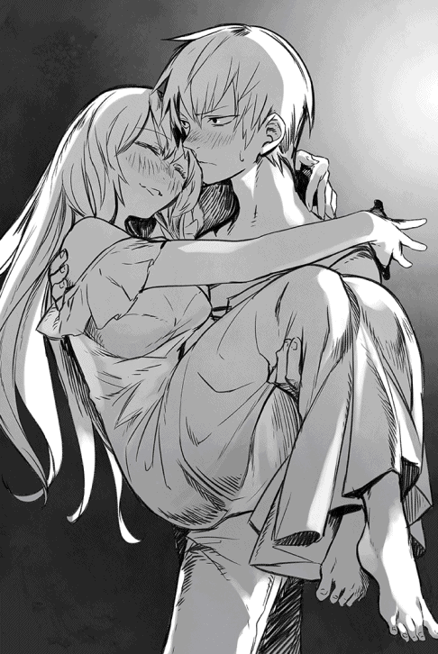
いつの間にか泥の中に沈むように眠りに引き込まれていった。
それでも結局、ぐっすり眠れたのは三時間かそこらだったはずだ。
カチリと音がしたのに反応し、ショウは闇の中で目を見開いた。元は異世界人とはいえ、ショウもこの世界でそれなりに修羅場をくぐっている。物音はおろか、人の気配には敏感な方なのだ。いざとなれば目が覚める自信があるからこそ、こうして眠っていられたとも言える。
（それに......これだけ殺気を感じりゃ、ウォーリアなら誰でも起きるわな）
うんざりしたが、それでもショウはわざと寝たふりをしたまま、時を待つ。幸い、愛刀は最初から抱え込んでいるので、いざという時にはすぐさま反撃に出られる。
やがてドアを開け、複数の足音がそっと部屋に侵入してきた。
足音を数えたところ、三人だろう。
まずいのは、どうやら一人が銃を持っているらしいことだ。微かに火薬の臭いがするのが、その証拠である。
「おい、間違ってもカンテラを点けるなよ。ベン達にも言ってあるんだろうな？」
ひそひそ声が聞こえ、ショウは考えるのをやめた。
ただ、気配と物音に反応することに、全力を注ぐことにする。
すぐに他の男の声が答えた。
「遅れてるヤツのことは知らないが、俺はそんなヘマはせんさ。ところで男は殺すとして、女の方はどうする？ 俺達の好きにしちゃ駄目なのか？」
「女は間違っても傷つけるなと言われてる」
最後の三人目、一番落ち着いた声の男が囁いた。
「気持ちはわかるが、手を出しちゃならねぇ。雇われてる限り、仁義は守らんとな」
「しかし......かなりの上玉だって話だぜ？ この深夜にわざわざ呼びつけられたんだ。少しくらい役得があってもいいだろ。どうせ相手はレッドクラスだ」
「そうじゃない」
三人目がまた身も蓋もなく断言した。
「そもそも女は、魔王の末娘らしい。......おまえ、魔王の手にかかって死にたいのか」
そのセリフを聞き、後の二人が息を呑む音がした。
「そんなヤバい仕事だったとは！」
「最初に言えよ、グレッグ。危うく、素っ裸に剥いてやっちまうトコだ」
「いいから黙れ。二人が起きたらどうする？ おまえ達は男をやれ。俺は女を押さえる」
三人目の指示に対し、「美味しいトコ取りかよ」とか「それより、ベンとリオのヤツはどうしたんだ？ まだ着かないのか」等の不平が聞こえたが、それでも二人分の足音がソファーの向こう側からこちらへ回ってくるのがわかった。
ショウは闇の中で薄目を開けてタイミングを計り、二人のお笑いコンビが自分の真上でダガーを振り上げたところで、いきなり抜刀して跳ね起きた。
「なっ」
一人が声を上げようとした時点で、刀の棟の方を向けた状態で、相手の首筋に剣撃を叩き込む。そいつが頽れるのを無視し、続いて声を上げようとしたもう一人の胴を、返す刀で薙ぐ。もちろん、同じく刃とは逆の棟の方で。
こちらは肋の数本は折れたに違いないが、とにかくそいつも悶絶して倒れた。
「止まれっ」
最後にロクサーヌの方へ屈もうとした相手が、振り向き様にフリントロック式の短銃をこちらへ向けようとした。
「そんなんじゃ、猫も殺せないぞ！」
ショウは明るく言ってやった。
「先に撃鉄起こしとかないとなっ」
最後の「なっ」のタイミングで、既に振り向きざまにコマのごとく身体を半回転させ、横殴りの剣撃を首筋に叩き込んでいる。
こいつも声も洩らさずに倒れてしまった。
手から滑り落ちた短銃は、ショウが回収して自分のジーンズのベルトにねじ込んでおいた。最初から服も脱いでないので、いざとなれば楽である。
「ロクサーヌ、ロクサーヌっ」
何度か肩を揺さぶるとやっと目が開き、薄赤い瞳がショウを見やる。
「......どうかしましたか？」
既に声音から酔いが消えていて、ショウは心底、ほっとした。
「襲撃があった」
「えっ」
驚いたように半身を起こしたロクサーヌは、自分が半裸状態なのを見て、慌てて二枚の毛布をずり上げた。
「な、なぜ、どうしてロクサーヌは下着なんですか」
声が震えていたりする。
ただ、再びショウを見た時は、なぜか窺うような表情だった。
「あの......もしや、熱い意思表示を」
「いやいやっ、ちょっと待ってくれ。俺じゃないから！」
ショウは慌てて無闇に両手を振った。
「夜着がないからって、自分で脱いだんだよっ」
早口で説明したところへ、いきなりドアが開き、ショウは危うく入ってきたヤツに斬りかかりそうになった。
「待って、僕だ！」
「あ、危ないなっ」
冷や汗とともに、ショウは刀を引く。
「もう少しで首を刎ねるトコだ」
「警告に来たんだから、早急な動きだったのは許してほしい。しかし......もう遅かったようだね？」
眠る前に見た時のスーツ姿のまま、ジェレミーが早口で言う。
「ああ、襲撃なら今あった。......どういうことだ？」
あまり説明してもらう必要もない気がしたが、ショウは一応、訊いておいた。
もちろん、ジェレミーの返事は予想通りだった。
「町長の屋敷を見張っていたら、強面の男共が何名も入って行ったんで、窓の外から立ち聞きしてたのさ。......親愛なるリッグス町長は、僕ら全員を捕縛する気らしい。話の途中で、君達を先に捕まえるために五名ほど屋敷を出たから、僕も後を追ったわけさ。でも、当然ながらそれで終わりじゃない」
ジェレミーはそこを強調した。
「おそらく数分後には、街中の男が大挙して押し寄せて来るよ......僕らを捕縛するか殺すために」
「素晴らしい！ 思った以上に、友愛に溢れる街だったな。胸が熱くなるっ」
ショウは皮肉たっぷりに両手を広げた。
「だがここだけの話、俺は内気なんだ。歓迎パーティーはぜひとも辞退したい」
笑いもせず、ジェレミーも大真面目な顔で頷く。
「奇遇だね。実は僕も人見知りするタイプなんだよ」
意見が一致したところで、まだ毛布で身体を隠していたロクサーヌが、強い口調で割り込んだ。
「緊急事態はわかりますが、とにかく服を着させてくださいっ」
おそらく「早く出ていって！」の遠回しな言い方に肩をすくめ、ショウとジェレミーは即座に廊下に出た。
丁度、男二人を両肩に担いだユウリが階段を駆け上って来たところで、廊下に出た途端に叫んだ。
「ご無事でしたか、ショウ！」
「もちろん。で、そいつらは？」
「わかりませんが、裏口から侵入しようしていたので、問答無用で気絶させました」
「そうか......五名出たって言うなら、それが残りのベンとリオとやらだろう。あ、ご苦労様、ユウリ。もう情報は仕入れたし、そいつらは用ナシだ。床に放り出していいよ」
「よかったです。体臭がキツいし、大層不潔なのです、この二人」
優雅に顔をしかめ、ユウリがピクリとも動かない二人を乱暴に放り出す。ダメージがデカいのか、両者共に、床にバウンドしても気絶から覚めなかった。
「さて、後はとっとと逃げる手だな」
ショウはいきなり口元を両手で囲い、絶叫した。
「野郎共、試合の時間だぞーーーーっ」
この合図は、劇的な効果があった。
今の今まで、これだけ大騒ぎしてても静まり返っていた各階が、いきなりウォーリア達の素っ頓狂な声で騒がしくなっていく。
『おおうっ。もうそんな時間かあっ』
『今日こそは負け星を減らすぜ！』
『お、俺の剣はどこだ!?』
『この夜更けに試合かよっ』
『きゃっ。あたしの上で寝てるボケナスは誰っ。玉を潰すよ！』
仲間の狼狽の声に、ショウはやっと部屋から出たロクサーヌも含め、四人で階段を駆け下りながら大声で呼ばわる。
「試合は嘘だっ。だけど、とっとと起きて剣を持て！ 町長が仲間を武装した連中を引き連れて襲撃に来るぞおっ」
襲撃だ襲撃だと、祭りのお囃子のように連呼しつつ各階を回り、「まだ起きてないヤツがいたら、起こしてやってくれ！ それから一階ホールに集合だっ」といちいち怒鳴っておいた。
一階ホールに着くと、ジェレミーが真っ先に訊いた。
「脱出後の目的地は、やはり予定通りに？」
「うん。まずは、旧ロンザリア帝国の戦神エクスの神殿跡に向かおうと思う。つまり、南西の旧都、ソムニウムだな」
ショウは即答した。
「先行して各アンダープリズンに派遣した仲間達にも、首尾よく囚人達を開放したら、そこへ集まるように言い含めておいた。参加するヤツがいるなら、来てくれるだろう」
「なるほど」
少し意外そうな顔で、ジェレミーは碧眼を瞬いた。
「ショウも、そろそろリーダーの自覚がついてきたようだね......ただ」
そこで、わざとらしく声を低めた。
「この分だと、僕らの敵は魔族だけじゃなくて、同胞たる人間をも相手にする必要が出てくるかもしれないな。君に、その覚悟はできてるかい？」
半日前のショウなら、「それはなかろうよ」と言い返せたはずだが、今はとても否定する気になれなかった。
なにしろ、実際にこうして同胞に襲われかけているのだ。
無言のまま考え込むうちに、ホールには次々と叩き起こされたウォーリア仲間と元アンダープリズンの住人達が集まり、不安そうな目で主にショウを見つめている。
いつの間にかリーダー扱いされているのが困りものだが、ショウはなるべく頼もしそうな表情を作って言った。
「この街の連中は、俺達を罠にかけて捕縛しようとした。......元々魔族に友好的なブルークラスだから、それも仕方ないのかもしれないが、かといって大人しく捕まってやる義理はない。こうなったからには、とっとと退去するのが賢い選択だろう」
不平不満がさぞかし出るだろうと思ったものの、少なくとも正面きって文句を言うヤツは誰もいなかった。まだ完全に目覚めてないお陰かもしれないが、大いにほっとしてショウは言いかけた。
「よし、ではすぐに街を──」
「ショウっ」
いつの間にか外に出ていたユウリが、扉を開けて大股で入ってきた。
「すぐそこまで敵が来ています」
「わかった！」
ショウは頷き、扉に向けて皆に手を振った。
「先に、元アンダープリズンの住人を逃がそう。この街のすぐ南の街道沿いに森がある。先にそこへ向かっててくれ。ウォーリア仲間は、彼らが無事に逃げるまで応戦だ！」
「おおっ」
「任せとけって！」
「ナメた罠かけた町長は、ぶっ殺したいよねっ」
おおむね士気は高かったが、当然ながらみんな憤怒の表情である。
「一応、穏便に頼むぞ」
ショウは先に警告しておいた。
「まだ何か実害があったわけじゃないしな」
☆
ひとまず、ショウ達ウォーリアが庁舎の外に出て、友愛に満ちた街の住人達を待ち構えた。既に時刻は明け方に近く、時間が経てば空も白み始めるだろうが、今のところはまだ静けさと闇が街を覆っている。
ショウの背中で、元アンダープリズンの住人が足早に街の外に出て行く。
この庁舎が街の南境に近かったことだけは、ショウ達にとっての幸いだった。
「......でもって不幸は、あの人のよさそうな町長に騙されたことか」
メインストリートの向こうから、わらわらと男共がやってくるのを見つけ、ショウは忌々しい気持ちで呟く。
意外に人数が多く、総勢で四十名程度はいるだろう。しかも、まだまだ後から駆けつけそうである。
全員、武装しているのはもちろん、その多くはレザーアーマーやブレストアーマーなどを装備している。ヤケにものものしい。
「しまった」
なぜかデイルが渋面で唸った。
小綺麗なリネンのシャツとズボンに着替えていたが、早くも剣を抜いている。
「この街って、傭兵ギルドの支部に近いんだよな......多分、あいつらの一部はプロだ」
物々しい武装集団を指差し、吐き捨てる。
「中原へ向かう途中の傭兵共が、ここのホテルにでも泊まってたんだろ。おそらく、そいつらを呼び集めやがったな」
「プロと言えば、あたしらだってプロさ。しかも毎日、元気に殺し合いしてたし」
燃えるような赤毛の、女アマゾネスみたいな戦士が、陽気に返す。
「こっちには帝王もいるしねぇ」
「いや、元々の俺は平和主義者でなぁ」
「ショウっ」
言い返しかけたショウの袖を、ジェレミーが引いた。
彼の視線を追うと、町長のリッグスが武装集団の後ろでコソコソと話し込んでいるのが見えた。
「あの野郎......いい度胸してるな。掌返したくせに、よく顔出せたものだ」
これだから社会的地位のある人間は信用ならん、とショウは日頃の持論を再確認した思いである。
とそこで、ロクサーヌが前へ出て叫んだ。
「皆さんっ、どうしてですかっ」
わざわざ引っ込んだままの町長に向け、強い口調で呼びかけた。
「同じ人間同士で、どうして醜い争いをしようとなさるのです？ それぞれの階級が違うからですかっ。それこそ、愚かさの極みですわ。その階級自体、元々は父をはじめとする魔族に押しつけられたものではありませんか。今の貴方達も、帝都にいる魔族から見れば奴隷となんら変わらないと、どうして気付かないのですっ」
懸命な説得に対し、町長は抗弁しなかった。
ただ、渋面で目を逸らしたのみである。
正論だけにさぞかし耳に痛いのだろうと、ショウは皮肉な笑みを洩らす。
「ショウ達が立ち上がった今こそ、全ての人間が真実に目覚め、戦うべきです。ロクサーヌは魔族ではありますが、これは間違いだと何度も父に申し上げました！ 見習ってくださいとは言いませんが、せめて今は、愚かな戦いをやめるべきですっ」
街の人間達は、顔を見合わせて静まり返っていた。
ただ、剣を収めずに例外なく忌々しい顔をしているところを見ると、まだまだ目覚めるところまではいかないのかもしれない。
ふて腐れた彼らの顔が小面憎くなり、ショウも便乗して怒鳴ってやった。
「そうだそうだ、恥を知れ！ ついでに口元の髭も剃れよ、うっとうしい」
怒鳴るだけではなく、ロクサーヌの前に立ち、抜刀する。青白い光が刀身を覆っていくのを見て、敵の集団から微かな動揺の声がした。
ただしざわめいたのは、傭兵以外の街の住人たる男共だけだった。
一番やっかいそうな傭兵共は、むしろ目の色を変えた者が多い。
「高く売れそうな得物を持ってるヤツがいるぞ」
「......仕事ついでに頂くか」
「なあ、全員殺していいんだろ、町長さん」
最後に、リーダー格の傭兵が町長を振り向く。
「先頭の女だけは駄目だぞ」
町長のリッグスが、別人のように陰険な表情で指示する声がした。
「彼女だけは、魔族様の使者が来たら引き渡す。もう、こっちから出した使いにそう約束したのだ」
「あ、貴方はそんな方だったんですかっ」
愕然としたロクサーヌが口元に手をやり、ユウリのため息を誘う。魔族の貴族階級が意外と純朴なことに、呆れたのかもしれない。
町長は特に堪えた様子もなく、わざわざ怒鳴って寄越した。
「貴女こそ、大人しく我々の元へ来てくださるなら、仲間の命くらいは助けますよ」
「おい、リッグスとやら！ そりゃ全然笑えないギャグだな」
自分よりよほど服装の整った町長を、ショウは侮蔑を込めて呼び捨てる。
「殊勝な顔で人を騙しておいて、今更、信用されると思うな」
ここぞとばかりにデイルまで叫ぶ。
「そもそも最初から思ってたけどよぅ、塩漬け肉を詰めた樽みたいな体格しやがって、スーツもちっとも似合わねーや！ 羨ましくなんかないっつーの」
どうも、町長の上等なスーツに憧れていたらしく、負け惜しみのようなセリフだった。
「な、なんの関係があるんだ、レッドクラスの奴隷ごときがっ」
デイルの挑発に完全に切れた町長は、いきなり命令した。
「女だけ残して、ヤツらを殺せっ」
「なるべく気絶くらいで済ませとけよっ」
「駄目です！ 人間同士で争いなどっ」
ショウとロクサーヌの声が見事に重なる。
ロクサーヌの気持ちもわかるが、あいにくもう激突は不可避だった。敵側からは傭兵らしき男共の罵声が響き、そしてウォーリア達からは雄叫びのごとき喚き声が重奏で響き渡る。
「ユウリ、ロクサーヌを頼む」
一声かけ、ショウは自分に向かってきた二人ほどの傭兵と対峙する。
「死ねぇええっ」
怒声と共に殺気が迸り、巨漢の傭兵がショウの頭上に長剣を振り下ろした。勢いとスピードから見て、もうはっきりと殺す気満々なのがわかる。
「プロのくせに、遅いっ」
叱声と同時に身を捌き、ショウはその斬撃を避け、同時に死角から敵の間合いに飛び込んだ。
「くおっ」
妙な声を上げて仰け反りかけた巨漢の腹に、膝蹴りを存分に叩き込んでやる。息が洩れるような声がして、相手が重々しく倒れてしまう。
しかし、また新手が二人、同時に斬りかかってきた。
「生意気なヤツめ！」
「その調子で、何処まで凌げるよ!?」
傭兵二人の声が叩き付けられたが、ショウは無視して叫んだ。
「デビジョンっ」
魔力付与のショウの刀が、短縮呪文に応じて一瞬で分割される。
双刀と化した二振りの刀を構え、ショウはいきなり斬撃を繰り出す。
「クロスブレード！」
眼前で腕をクロスするように構えた両手から、ほぼ同時に二振りの刀を振り切る。文字通りの二重の斬撃であり、しかも敵の剣撃が及ばない間合いの外からだった。
狙い通り、斜めに傾いだ十字形を描くように衝撃波が走り、傭兵共はそれぞれモロに遠隔攻撃を浴びてしまう。
次の瞬間、二人同時に宙を舞い、派手に吹っ飛んで地べたに叩き付けられた。
「おおっ、帝王が本気を出したぞっ」
「今度、デートしたげる！」
「俺も食らったんだよ、あの痛いヤツ」
「エロガキのくせに目立ちやがってっ（デイル）」
一部、どさくさ紛れの野次もあったが、おおむねウォーリア側は大歓声が湧き起こり、ますます士気高く刺客集団に立ち向かう。
逆に、めっきり血の気が引いた敵側は、徐々に逃げ腰になっていった。
しかし──仲間に応える暇もなく、夢中で眼前の敵を相手にしていたショウは、ふと視界の隅で町長のリッグスが自分の死角へ回ろうとするのを見た。
しかも、手には銃を持っている！
（見え見えだぞ、クソ親父。さてはこいつも銃で狙う気だなっ）
いち早く察したショウは、相手にしていた傭兵を「邪魔だっ」と蹴り飛ばして気絶させ、そちらへ向き直ろうとした。
ところが、町長の動きだけ見て早合点したらしく、ロクサーヌがショウの前に走り込んで来た。
「危ない！」
「駄目ですっ」
ロクサーヌと......そして、ユウリの叫び声が重なった。
ロクサーヌはショウの盾になるつもりで、そしてユウリはそんなロクサーヌを守ろうして、それぞれほぼ同時に動いていたのだ。
結果──町長が撃った弾は、ロクサーヌを庇ったユウリの肩に当たった。
マジックウォールを展開しようにも、とっさのことで間に合わなかったらしい。
「つっ」
鮮血が噴き出し、ユウリの顔が苦痛に歪む。
まず滅多に見ない光景であり、この瞬間、ショウは自分の周囲で時間が止まった気がしたほどだ。
「だ、大丈夫です。この程度はなんでも」
無理して微笑むユウリを目にした瞬間、ショウの胸のうちで、押し殺していたものが弾けた気がした。
こちらの世界で長く連れ添ったユウリが傷ついたことで、自分があえて目を向けずにいた感情が、雪崩のごとく心中を覆い尽くす。
それは怒りはもちろんのこと、近しい者を失う恐怖にも通じる感情だったろう。
戦いを続ければ、いつかは傷つき、倒れる者が出始める......この当たり前の事実に、ショウが本当の意味で気付いた瞬間だったとも言える。
「貴様ぁああっ」
憎悪に塗れた怒声を上げ、ショウは一陣の風のごとく、リッグスの眼前に躍り込む。役立たずの銃をしまい、腰の剣を抜こうとしていたリッグスは、そのあまりのスピードに目を丸くしていた。
「ま、待て！」
「やかましいっ。貴様はここで」
殺すっと、そう絶叫しかけていた。
実際、ショウが大上段に振りかぶった二刀は、リッグスの太った身体を存分に斬り裂こうとしていた。
しかしそこで、ユウリの悲痛な叫び声が響く。
「いけない、ショウっ」
「──！ くっ」
ギリギリで間に合った。
かろうじて抑制したお陰で、複数に分断されて転がるはずだったリッグスは、右手の刀で峰打ちを食らい、昏倒するだけで済んだ。
「ショウ」
肩で息をして立つショウの腕に、ジェレミーがそっと触れる。
「......ほら、もう終わったよ。襲撃してきた連中はみんな気絶したし、僕らの仲間はちゃんと逃げた」
のろのろと友人を見やり、ショウは小さく頷く。
言われてみれば、いつのまにか戦闘が止んでいる。みんな、そっとショウを見つめていた......心配そうに。
「あぶなかった、な」
無論、自分のことを言ったつもりだったが、ちゃんとジェレミーには伝わっていたらしい。からかいもせず、穏やかに囁きかけた。
「君は戦士だからね。場合によっては、そういう時だってあるさ」
「ゆ、ユウリさんっ」
ロクサーヌがやっと我に返り、青い顔でユウリに駆け寄る。
もちろん、ショウもユウリの元へ歩み寄った。
ただし、その際にジェレミーに囁くのは忘れなかった。
「人間を敵に回せるかって、おまえのさっきの質問だが」
「うん？」
促すジェレミーに、断固として言ってのけた。
「さっきは答えられなかったが、今なら即答できる。......仲間を死なせるくらいなら、同胞相手だって戦う」
「......そうか」
ありがたいことに、ジェレミーは端的に答えただけだった。
あるいは、ショウが今どんな気持ちでいるか、言わずとも察してくれたのかもしれなかった。
☆
どうしてこんなに大事なことを、これまで忘れていたのだろう？
そう思うことが、日を追うごとに多くなっていく。それが、今のエリーゼ──いや、ユキナの日常である。
尊敬していたはずの魔王によって、戦闘スーツのまま冷たい地下牢に放り込まれて以来、まだ数日しか経っていないが、あのショウと出会って以来、ユキナの記憶は堤防が決壊するかのように急激に戻りつつある。
まあ、普通の鍵だけではなく、魔力を無効にする呪縛魔法がかけられた、この特別製の地下牢である。じっと考え込む以外に、ユキナにできることなどない。
自分の殻に閉じこもっていたお陰で、もはやショウが自分の兄だという事実は、ユキナの中では決定的な事実として認識されていた。
そしていざ思い出してみれば、自分の真の記憶のほとんどが兄で占められていることに気付き、苦笑するほどである。
神威家に養女に出される以前、ユキナには亡父と亡母がいたはずなのだが、そっちの思い出はなに一つ残っていない。
まだあまりにも小さかったというのもあるが、神威家にもらわれて以来、ずっと兄の後ばかりついて歩いていたせいもあるだろう。
養い親である二番目の母親は、よくあきれて言ったものである。「ユキナを見ていると、懐くというよりは愛情たっぷりにいちゃいちゃしてるように見えるわ」と。
そう言われたのは小学校に上がって間もない頃だったが、自分でもひどく納得できてしまったのも思い出した。
そう、昔からユキナは兄にべったりだったのだ。
仕事で忙しい養父母に代わり、ショウがユキナの面倒をよく見てくれたためかもしれない。あるいは、木訥で控えめな優しさを持って自分に接する兄に、最初から好ましいものを感じていたためかもしれない。
とにかく、よちよち歩きの頃から兄に対して不満を持った記憶がほとんどないので、よほど兄が好きだったのは間違いない。
途中で離婚した養父のことはほぼ何も覚えてないが、養母についてはただ好きなだけではなくて、密かに不満に思うことも皆無ではなかったように思う。
責任感が強くて優しい人だとは思うけれど、やはりユキナに対する態度には、微かにぎこちないものを感じていた。子供心に、「やっぱりユキナはママの本当の子だとは思われてないわ」と悟っていたのだ。
しかし、これが兄のショウとなると、思い出すのは懐かしくて優しい記憶ばかりで、腹を立てたことなど、とんとなかったように思う。
例えば、神社の祭りに行った帰り、兄に背負ってもらって夕日に染まる道を帰宅したこと。あるいは、小学校に入った途端に虐められた自分を、血相を変えた兄が庇ってくれたことなど......兄にまつわるどの記憶も、思い出せば優しく温かい気持ちに浸れるものばかりだった。
そんなユキナだから、もちろん当時からどこへ行くにも兄と一緒だった。
遊ぶ時も兄と一緒だし、お風呂に入る時も兄と一緒、夜中、ふいに目が覚め、トイレに行く時に一緒についてきてもらうのも、養母ではなく兄のショウだった。
ショウ自身、起こされる度に嫌な顔一つせずについてきてくれたものである。
あまりに心配した養母が、しまいには無理に別々の部屋で寝かせようとしたほどだ。小学校に上がってから随分時が経っても、一向にユキナの態度が変わらないので、「このままでは自立できないのでは？」と、養母なりに気を揉んだせいである。
その、初めて部屋を別にした数日後に化け物に襲われ、こんな世界に連れてこられたのだから、人生とは皮肉なものだった。
「......なのに、大いなる君はどう？」
地下牢に備え付けのベンチで、石壁にもたれて両膝を抱え込んだまま、ユキナは呟く。
確かにユキナに戦う術を教え、果ては魔将として目をかけてはくれた。しかし、兄のことを思い出した今だから気付いたことだが、そういえばあの方は、兄のように優しく抱いてくれたこともなければ、「ユキナがお食べ」と自分の好物を分けてくれるといったこともなかった。
はっきり違いを述べるなら、兄のショウはあくまでも家族としてユキナを大切にしてくれたが、魔王はそうではないということだ。
距離を置いたその付き合い方は、あくまでも有能な部下に対するもののように思える。
魔王その人は自分の実子とさえあまり交渉を持たず、完全な放任主義に近いので、家族ですらないユキナとスキンシップが皆無なのは、むしろ当然なのかもしれないが。
しかし、向こうの世界から攫われてから、実に九年が経つ。
この間、ずっとユキナを謀っていた事実は、言い訳できるものではない。
この「大いなる君が私の記憶を消したんだわ」という事実を、既にユキナは疑わなくなっている。
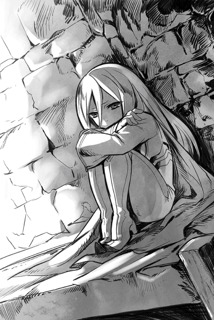
実際、ユキナの記憶は九年前に行われた儀式以降のものしかなかった──ショウと出会う前までは。
それでもおかしいと思わなかったのは、魔王自身の鮮血を使った魔法儀式を終えた後、魔王ヴォルザードがユキナの肩に手を置き、こう述べたからだ。
『エリーゼ......おまえは今日より、本当の意味で生まれ変わった。この儀式のせいで失うものもあったが、それはより強い魔族戦士として再生した反動だ。......得るものの方が遥かに重要だし、今後のためになる』
彼のセリフを、ユキナは「おそらく私は、この魔法儀式で魔族に変貌したということだろう」と解釈した。その反動で、記憶が消えてしまったのだと。
幸い、儀式の後もなぜかなんの不安もショックもなく、エリーゼは魔王に持ち上げられるまま、自分の新たな再生を喜んでいたのだ。
全てが偽りであり、魔王がユキナの感情ごと記憶を操作した証拠である。
......考え抜いた末、ユキナはそう判断した。
さもなければ、まだ八歳やそこらの女の子が、これまでの記憶が消えているのに、全く不安に思うことも怖がることもなく、「今日から一人前の魔族戦士になった！」などとありがたがるわけがない。
「この私を......ユキナを騙し、大事な人の記憶をもぎ取ったのですか、大いなる君......いや、魔王ヴォルザード！」
ユキナは自然と歯を食い縛り、奥歯が鳴った。
忠誠を誓った九年の年月と、これまでは曲がりなりにも尊敬し崇拝していた相手だけに、まだ憎むところまではいかないが、これでは時間の問題かもしれない。
少なくとも、ユキナが魔王に対して抱いていた忠誠心は、ほぼ消え去ってしまっていた。
「エリーゼ、聞こえるか？ エリーゼ・シュトラウス！」
自分を呼ぶ声がして、エリーゼは目を見開いた。
相変わらず、染みだらけの地下牢の天井が見える。ただ、ベンチから身を起こすと、いつの間にか地下牢の外に見知った男が立っていて、少し驚いた。
「ジェイル......様？」
お世辞にも自分と仲がよいとは言えなかった、魔王の長子の名を呼ぶ。
「そう。君にショウからの言伝てを頼まれた」
「......あの人の!?」
たちまち鉄格子まですっ飛んできたユキナを見て、ジェイルはちょっと目を見開く。
「おや、記憶が戻ったのかな？ なぜか、いつもの険がないようだが」
「戻りつつ......あります」
ユキナは囁くように答えた。
「お陰様で、これまでの失礼に冷や汗をかいているところです。ご不快に思うことも多かったことでしょう......生意気な態度を取ったことを、どうかお許しください」
魔王とジェイルの仲がそう良好ではないことを知るユキナだけに、魔王に対するのと同じ目で彼を見る気はない。
むしろ、これまでの価値観が逆転していて、今の彼女から見れば「この人は妹思いの憎めない人」だと思っている。
ジェイルにもその辺の感情の機微は伝わったのか、いささか意外そうな顔で顎を撫でていた。
「いや......君の立場にも同情する。むしろ、記憶を取り戻しつつある今、もはや君を目の敵にする意味もないようだ。こちらこそ、これまでの態度は忘れてくれたまえ。この瞬間、君への遺恨は完全に消えたよ」
貴公子に相応しい外見のジェイルは、まさに紳士のごとく一礼などして見せた。
地下水が壁に垂れ、青カビが所々を覆う地下牢の通路にいるせいか、まるで場違いに見えてしまう。
「それで、あの人の──兄の伝言とは？ そもそも、ジェイル様は兄とは敵対する関係だったはずでは」
「敵対しているのは父上であって、別に僕じゃないさ」
ジェイルはあっさり言い切った。
「とはいえ、友好的とも言えなかったけどね......しかし、妹思いの彼の態度を見て、今は少し彼寄りかな」
説明した後、エリーゼの表情を見て苦笑する。
「ああ、悪かった。驚きのあまり、肝心の言伝を忘れるところだったよ」
ジェイルは表情を改め、ずばり告げた。
「必ず助けに行く、それまで辛抱してくれ......とのことだ」
そこで、うんうんと感心したように頷く。
「妹を大事にする僕から見ても、なかなか模範的な言伝だね。ほんの少々、彼を見直したほどさ」
ユキナは返事をしなかった。
それどころかジェイルの方も見てなかった。
両手を胸にあて、ぼおっと兄のことを考えている最中だった。もはや特に意外なことでもないかもしれないが、今の伝言を聞いて、ユキナは大感激していたのである。
「ふむ」
ジェイルの声に慌てて我に返ると、彼は羽ペンで何やら紙に書きつけているところだった。
書き終わると、そのまま紙切れを鉄格子の隙間から差し入れ、ユキナに渡した。
「あの......？」
ユキナが尋ねようとすると、ジェイルは人差し指を口元に持って行く。
「後で見るといい......さっきも言ったが、僕も君の立場には同情しててね。それに対するお節介だと思ってほしい。こう見えて僕は、麗しい兄妹愛には甘い方なんだ」
戸惑ったユキナが瞬きをすると、ふいに女性の声がした。
「あらあら......これはこれは兄上、このような場所で、奇遇ですわね」
「むっ」
ジェイルの表情がめまぐるしく変わった。
まずぎょっとしたような驚きの顔になり、すぐに顔を歪めた嫌悪の表情になり、最後に熱の入らない薄笑いに落ち着いた。
その間、二秒もかかってなかったはずだ。
「クリスタリカ、おまえかい」
出口の階段の方を見て肩をすくめる。
「おまえこそ、地下牢などになんの用かな」
その名前を聞き、ユキナはたちどころに納得した。
同じ妹でも、ジェイルの寵愛は次女のクリスタリカには及ばない......どころか、むしろ互いに背中を狙うような仲だと聞く。
全ては、後継者争いのせいだが、この二人は最初から馬が合わなかったらしい。
「あたしはほら......新参の魔将が地下牢にぶち込まれたわけだし、この機会に嘲笑いに」
エナメルのように光沢のある真紅のビスチェを着たクリスタリカが、ジェイルの横に立つ。
事前に素早く紙切れを隠したユキナは、無言のまま、顔をしかめてクリスタリカを睨む。
彼女に限っては、記憶が戻る以前と今とで、全く印象は変わらない。ユキナにとっては、相変わらずの「嫌な女」でしかなかった。
「ふふん......なによ、記憶がどうのとか喚いてたから、少しは変わったかと思ったら、前のまんまね、おまえ。相変わらず、小憎らしいガキのようだわ」
「クリスタリカ様も、相変わらず嫌みなお方ですね」
我ながら冷え切った声が出てしまう。
なぜかジェイルは目を輝かせて笑ったが、もちろんクリスタリカは大いに気を悪くした。
わざわざ鉄格子に顔を寄せ、真紅に染まった瞳で睨む。
「元はよそ者のくせに、生意気言うんじゃないわ、青臭いガキ。どうせおまえは、もうすぐクソ親父の手でまた記憶を封じられるんだからね。今のうちに、ぴーぴー泣いておくといいわ」
「──なっ。それは真ですか、ジェイル様」
衝撃を受け、ユキナは焦ってジェイルに問う。
彼はため息をつき、微かに頷いた。
「君の様子を見てのことになるが──近日中に、また儀式を行うそうだ。父にも困ったものだよ。あくまで君を魔将としてこき使うつもりらしい」
「おまえがこだわる兄とやらの記憶が消えた後、またあたしが存分にからかってあげるわ、エリーゼ。その時、おまえがどんな顔するか、楽しみだわねぇ」
「おいおい、クリスタリカ。それは父上にバレたら、ただじゃすまない気がするな」
「兄上さえ黙っていれば、バレないわよ。......では、時間も遅いし、あたしはこれで」
言うだけ言って気が済んだのか、クリスタリカはそのまま踵を返して遠ざかっていった。
その後を追うように、ジェイルもまた牢の前から去る。
ただ、彼は去る前に、ユキナの方を見もせずに独白した。
「君の兄は南部のソムニウムへ向かうと言ってた。後は......君次第ということだ」
二人の足音が完全に消えるまで待ち、ユキナは急いでもらった紙切れをベッドから回収した。広げて、早速読む。
とはいえ、内容はごくごく短かった。アウダーグス......そう書いてあるだけである。
「これって」
少し考え、ユキナはその言葉が示す意味に気付いた。
おそらく、いやほぼ間違いなく、これは短縮呪文に違いない。
用途は、この地下牢にかかっている、呪縛魔法の解除だ。つまり、ジェイルは脱獄のための鍵を残してくれたことになる。
じっと文字を見つめるうち、ユキナの口元が少しずつ綻び、やがて輝くような微笑が顔中に広がっていった。
「戻ったのは過ちだった......ここは私の居場所ではない」
──あとは、脱出のタイミングだけだ。
第三章 ユキナの脱出
ショウが異状に気付いたのは、リンデルの街を脱出して、その南に広がる針葉樹の森へ入り込んだ数日後のことだった。
先に逃がしておいた、アンダープリズンの元住人達と無事に合流を果たした後も、ショウはあえて街道に戻らず、森を突っ切っていくことに決めている。
「時間はかかるが、地図で見る限りでは、この森を突っ切ればどうせまた街道に出る。追っ手がかかったとしても、自分達の生活を犠牲にしてまで、いつまでも追っては来ないはずだ」
「......魔族の正規軍が追って来た場合は？」
ジェレミーが疑問を提示したが、ショウはこれに対してこう答えた。
「その場合は、どこをどう逃げたって、いずれはかち合う。......なら、やっぱり今は森へ入って少しでもヤツらの目を眩ます方がいいだろ？ どうせ俺達が何処へ行くかまではわからないんだから」
これでジェレミーも肩をすくめて納得し、他に異議申し立てもなかったので、後は森の中を行軍となったわけだ。
幸い、ここの針葉樹はほとんど背の高い松で、しかも密集しているわけでもないので、歩くのにさほど不自由はない。
持参していた食料の残りは乏しいが、それでもまだしばらくは保つ。
季節は夏に近く、夜の野営もそう苦にはならなかった。さらにあと数日もすれば、森を出て街道へ戻り、次の街へ出ることもできるだろう。
ショウとしてはそう思っていた。
しかし、そうそう上手くは行かなかった。
ショウ達がそろそろ平穏に慣れて来た頃、先頭を歩くショウにユウリが追いついてきた。
彼女には最後尾を頼んでおいたのだが、何かを見つけたらしい。
「尾行かな？」
ショウがいきなり機先を制すると、ユウリは厳しい顔で頷いた。
「お気付きでしたか。複数の気配がついてきます......しかも、気配からして人間ではありません」
「ま、まさか魔族っ」
ロクサーヌが緊張した声で問う。
「......かもしれないわ」
ユウリは否定しなかった。
「しかも、そこそこ強力な相手のように思えるから、下位種じゃなくて上位種でしょうね。数は五名まで確認しました」
「どうせ狙いは俺達だろうな。ずっとついて来られるのも鬱陶しいよな」
未だ足を止めず、ショウは他人事のように囁く。
少し考え、即断した。
「ジェレミー、デイルっ」
列の中程にいた友人二人を呼び、早速、事情を説明する。
「俺とユウリで追っ手を片付ける。悪いがおまえ達はみんなと一緒に先に行ってくれ。この際、元住人を気にせず、思いっきり戦う方がやりやすい」
「なんなら僕も残ろうか？」
「俺でもいいぞ」
二人共、共闘を申し出たが、ショウは首を振った。
万一、ショウ達になにかあった場合、この二人まで一緒にやられては困る。
「敵は五名だそうだし、今回は俺達だけでいいよ」
「わかった。では、少し離れてから待つ」
デイルはまだ何か言いたそうだったが、ジェレミーはそう言ってくれた。
ショウと交代で彼らが先導し、仲間達はゆっくり離れて行く。見送っていると、みんな何かしら声をかけてきたが、ショウはその度に「すぐ追いつく、すぐ！」と笑顔で保証してやった。本当はそうそう自信たっぷりでもないのだが。
やがて、列の最後の一人が行き過ぎてから、ショウはわざと顔をしかめて横を見た。
そこには、口をへの字に結んだまま、「てこでも動きませんわっ」と言わんばかりの女性──つまりロクサーヌが立っている。
「ロクサーヌも一緒に行ってほしかったんだがなぁ」
「言うまでもなく、駄目です。わたくしたちはどこまでも一緒のはずです」
なんでそんな話になってるのか謎だが......別段、ショウは抗弁しなかった。
彼女の腕も悪くないし、そもそも狙いはどうせ自分達だろうから。無理強いしてまで追い出そうとは思わない。
ユウリはいたく不機嫌そうだったが、幸い、口に出しては何も言わなかった。どうでもいいが、このユウリも平常の殺し屋的服装ではなく、ロクサーヌが現れて以来、ずっとゴスロリっぽい可愛いドレスのままである。
「......いつもの服装に戻らないのかな？」
つい気になって尋ねると、明確に首を振られた。
「むしろ、もう少しスカートの短いドレスに着替えようかと思ってます」
なんで、と思ったが......これまた、ショウは口にはしなかった。
なぜかロクサーヌの視線が痛かったので。
「二人共、準備してくれ。......もうすぐ現れるようだ」
気配を読んだショウがそう告げると、まずはロクサーヌが呪文の詠唱を始めた。トラクションの魔法であり、たちまち以前にも見た流線型の鎧が、彼女の全身を覆っていく。
なかなか防御力も高そうで、見た目にも華美である。
ユウリはユウリで片手にごつい漆黒の大剣を生じさせ、無造作に前へ出る。こちらは鎧など最初から纏う気もない。
ただ、すぐにショウの前へ出て庇おうとするのが、彼女の悪い癖だった。
「おいおいユウリ、そう前へ──」
出るなと言いかけたその時、問題の追っ手が現れた。
落ち葉を踏みしめ、さほど急ぐでもなく、ゆっくりと松の間を縫うようにやってくる。
「......おろ？ 想像したのと毛色が違うな」
なぜかそれなりに整ったスーツ姿の一団を連中を見て、ショウは眉根を寄せた。
一応、腰に剣は吊っているが、あまり戦士が本業という風には見えない。
「ああっ」
「わっ」
「なんですか？」
いきなりロクサーヌがフェイスガードの口元に手をやったので、ショウとユウリは二人して注目した。
「か、彼らには見覚えがあります......多分、姉の家に仕えるかれいや使用人達ですわ」
「かれー？」
言語変換にとまどい、「それってなんだ、食えるのか？」とショウはとっさに思ったが、多分、これは「家令」のことだろうと自分で見当を付けた。
「ああ、使用人をまとめる立場のヤツな」
「そういうことです......あのヘンリーがそうです」
銀髪をかっちりと後ろにとかしつけた、隙のない黒スーツの少年を指差す。まあ、少年とはいえ、魔族の上位種だけに年齢はわからないが。
他の四人は屈強そうな男なのに、彼だけは美少年風で、粋な純白のクラバットまで着けている。
「君達、取引をしませんか？」
いきなり、そのカレーヘンリー（勝手に命名）がショウに話しかけてきた。
まだ剣を抜かず、にこやかに言う。
「お嬢様を置いて消えてくれるなら、攻撃しません。君の仲間にも手を出しません。僕の主人は、その方にしか興味がないので」
「......魔族なのに？」
「魔族だって、別に一枚岩じゃないということですね」
そこでなぜか、ヘンリーはため息などつく。
「まあ、仕えにくい主人に仕えてしまった僕の不幸ですが、せめてコトを運ぶに当たっては楽に行きたいものです」
「仮にロクサーヌを置いていくと、どうなる？」
「憚りながら死んで頂き、首だけ持ち帰ります。主人に見せねばならないので」
即答されて、逆にショウは驚いた。
そこまで正直に言われると、いっそ清々しい。
むしろ、衝撃を受けたようによろめくロクサーヌに気の毒になったほどだ。
「あ、姉上はそこまでロクサーヌを嫌っていたなんて」
「......気を落とすことはありませんよ、ロクサーヌ様」
ヘンリー小僧が大真面目な顔で言う。
「あのお方は、ご自分以外の誰も愛しておられない。貴女に限ったことではありません」
「つまり何か、ロクサーヌの姉ちゃんは、別に魔王の都合で動いてるわけじゃないんだな。魔王の命令なら、最初から殺せとは言わないはずだ」
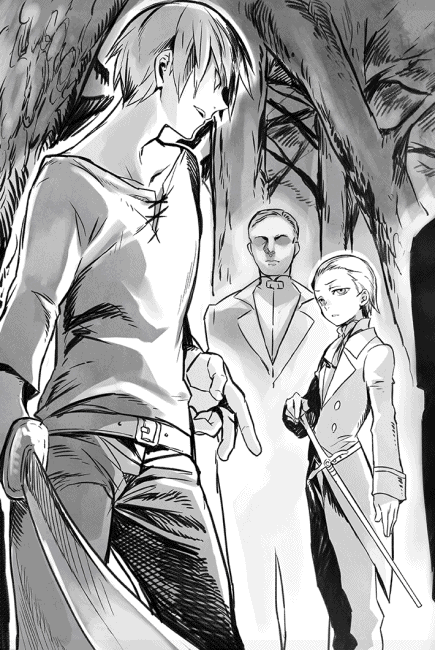
「それは、ご想像にお任せします」
慇懃この上ない態度で、ヘンリーとやらは一礼した。
若いのに、トボけた男である。
「お友達になりたくない、ナンバーワン女って感じだな」
ショウは刀を抜き、だらりと下段に構える。
こっそりと魔法発動の準備をしながら、体内の魔力を高めていく。
「おおむね正直に答えてくれたことには礼を言うが......答えはノーだ。彼女は渡さない。諦めて立ち去るか、俺の手にかかって死ぬか、どちらがいい？」
「さようですか」
困ったなぁと言いたそうな顔で、ヘンリーは秀麗な顔を曇らせる。
そのくせ、行動としては他の四人にこう命じただけだった。
「全員、殺れ」
「受けてみろ、キリングフィールド！」
ヘンリーの声と同時に、ショウは大喝する。
体内で魔力が合成され、瞬時に巨大な禁忌魔法となって解放された。
ヘンリー達の頭上に黒い影が差し、次の瞬間、爆音と共に大地を大きく陥没させた。
ショウが舌打ちしたのは、五人のうち一人しかその犠牲にならなかったことだ。
四肢がでたらめに折れ曲がり、体中の骨が砕かれたその不幸な一人を除き、後は全員、その場から跳躍して逃れた。
「──なんてことだ、僕は聞いてませんよっ」
この期に及んで、嘆くようにヘンリーが喚く。
「貴方も、誰かの中古本をガメたクチですか!?」
意味不明なことも述べた。
中古本をガメたというのは、ソウルバイブルの本物ではなく、何者かが記した写本を掠め取ったという意味だろうか。
「俺とは関係ないが、写本のことなら幾らかは出回ってるだろうよ。俺が会った革命男も、なぜか禁忌魔法の上辺だけ真似してたからなっ」
「ええ、ええっ。革命男のことは知ってますとも。写本を秘匿してたのもね」
嫌そうな顔でヘンリーが言ったが、ショウはもう気にしなかった。
どうせ写本を入手しようと、使える力には限界がある。それよりとっとと倒すべく、ショウはヘンリーに向かって走る。
もちろん、ユウリに「ロクサーヌを頼むっ」と指示を出すのも忘れない。
「しかし、よく一瞬で禁忌魔法だと判別できたものだ！」
「本気で訊いてます？ 我々が知らない魔法となれば、それくらいしかないですよ」
ショウの斬撃を軽々と受けつつ、ヘンリーはぶっきらぼうに応じる。
「しかし......参りましたね。貴方、本当に退く気はありません？」
「くどいっ」
右から左、そして下方からの逆袈裟斬りと、ショウは息をもつかせぬ連続技で剣撃を繋ぐ。しかしこいつは、涼しい顔で全部受けてのけた。
なかなかの腕前であり、さすがに魔族の上位種である。
「なら、これでどうだ。これも元々はソウルバイブルで得た極意だがなっ」
言下に、ショウはルナティックモードに入り、身体機能を極限まで高める。
途端に、これまでの動きとは比較にならないスピードでヘンリーの間合いに飛び込み、愕然とした表情の彼の頭に、存分に刀を振り下ろした。
「くっ」
血が飛び散り、ヘンリーの顔が苦痛に歪む。
それでも彼は額を怪我しただけで、かろうじて飛び退いた。そして、ショウがそのまま追撃をかけようとした途端、背を向けて脱兎のごとく逃げてしまう。
たちまちスーツの背中が遠ざかっていった。
「むっ!? 思い切りいいな」
まさか逃げるとは思わなかったショウは、たたらを踏んで止まった。
追うべきなのかもしれないが、さすがにユウリ達が気になったのだ。
「そっちは!?」
振り向くと、丁度ユウリが、最後の一人を倒したところだった。
身も蓋もなく大剣で両断された死体が、力なく大地に頽れてしまう。
「今、終わりました」
「ご苦労様」
ユウリの活躍はいつものごとくで問題なかったが、ショウとしては鎧姿のまま突っ立ったロクサーヌに心を痛めた。
一応、ショウの視線に気付いて再び短縮呪文を唱え、元のドレス姿に戻ったものの、心ここにあらず、といった感じである。
自分の姉が本気で命を狙ってきたことに、大いにショックを受けているらしい。
「......訊くまいと思ったけど、やっぱり訊いておくよ」
ショウはあえて尋ねた。
「次女は確か、クリスタリカとかいったよな？ 彼女がそこまでして命を狙うってことは、やはり後継者争いか」
長くその座に君臨する魔王ヴォルザードが、退位のタイミングを計っているという噂は、ショウもアンダープリズンにいた頃から聞いている。
「その通りですわ」
沈んだ声でロクサーヌは頷く。
「姉上は兄妹の中で、唯一、母親が違うのです。側室の女性が母親ですが......そのため、魔界の後継者としては序列三番目ということになっています」
「一番は長子のジェイル？」
「そうです。ロクサーヌが暫定二番ですわ」
「暫定!?」
「ええ。どうも父は、ロクサーヌと兄上のどちらを後継者にするか、迷っているようですね。ジェイル兄さんと私は、別にどちらがなってもいいのですけど」
どこか言いにくそうに続けた。
「なるほど」
唸るように返し、ショウは枝振りのよい松を見上げる。
下手するとこのお嬢さんが将来の魔王になるかもしれない、というのも驚くが、実はショウが一番驚いていたのは、「魔王ともなると、側室までいるのか」という点である。
とはいえ、ショウがいた元の世界でも武将が側室を持つような時代があったわけだから、特に不思議はないのかもしれない。
「こうしたらどうだ？」
しばらく考え、ショウは提案した。
「どうせ姉ちゃんは親父さんに黙って暗殺活動してるに決まってる。だから適当な使者を魔王ヴォルザードに送り込み、命を狙われたことをこっそり教えてやるんだ。これで、今後は悩む心配ないのでは？」
「駄目です」
一秒も悩まず、ロクサーヌは即答する。
「父上は優しい方ではありますが、怒らせると誰も手がつけられません。もしこのことを知れば、おそらく姉上は殺されます」
「......そうか」
ショウはユウリとそっと顔を見合わせた。
なんというややこしい関係だろうか。ジェイルとロクサーヌは、それぞれ黙っていても魔王の椅子に手が届いてしまうかもしれない。
しかし次女のクリスタリカは、この二人がいるうちは、魔王の座など望むべくもないようなのだ。皮肉なのは、ロクサーヌもジェイルも、どうもさほど後継者の座に興味などないように見える、ということか。
おまけにロクサーヌは、むしろ自分の命を狙う姉の心配までしている。
一番魔王の座を欲するクリスタリカが、兄妹の中で最も魔王に遠いポジションにいるのだ。皮肉としか言いようがない。
「俺としては、ロクサーヌのためにも野望の姉ちゃんをなんとかしたいんだが......なかなか簡単にはいかないようだな」
「......ありがとうございます。そのお気持ちだけでロクサーヌは嬉しいですわ」
感激したロクサーヌが抱き付こうとしたが、あいにくユウリがそっと寄り添う方が早かった。
「な、なんですか!?」
むっとしたロクサーヌが腰に手を当てる。
「別に......たまたまこうしたくなっただけ」
わざとらしくショウの腕にすがったユウリが、しれっとそんなことを言う。
というか、ショウの記憶にある限り、以前の彼女はこんな風に腕を絡ませることなど、とんとなかったように思うのだが。
「うーーっ」
「ふん」
互いに睨み合う女性二人を見て、ショウは途方に暮れた。
嬉しいというより、足下に薪を積まれ、発火剤付きで点火されたような気分だった。
☆
森を出たショウ達が、ロンザリア大陸南西の旧都ソムニウムへ到着したのは、襲撃の日から十日ほど後のことだった。
その間、ショウはなるべく小さな街を選んで通過するようにして、細々とした日用品や食料、それに衣類などを購入した。
さっと到着してさっと離れる......これが基本であり、眠るのも野宿である。
途中、雨に降られることはなく、むしろ汗ばむ日も多い時期なので、さほど文句もでなかった。ヘンリーの襲撃以降は特に何事もなかったので、いつの間にか全員が遠足気分になっていたのかもしれない。
幸い、命を張ったウォーリア家業を長年続けたお陰で、皆、それなりに懐は温かい。しかもアンダープリズンでは金があっても物流自体が滞っているので、仲間も買い物できる機会は逃さなかった。
もちろん、ウォーリアではない元住人達は素寒貧だが、無駄に気前がいいウォーリア達は、喜んで奢ってやったりした。
この散財ぶりを見て、元興行主のザックだけは「最後は金だけが頼りなんだぞっ。こんなトコでジャンジャン使ってどうする!?」と苦言を呈したが、あいにく耳を貸す者は少なかった。
ショウ自身も「俺の故国には『金は天下の回り物』って格言があってな」とさらりと言ったほどだ。
......これに対してはザックが「そんなことを言ってるから、おまえはいつまでも貧乏臭さが抜けないんだ！」と速攻で言い返してくれたが。
ショウがむっとしたのは言うまでもない。
とはいえ、馬を含む荷馬車や当面の食料など、どうしても必要な買い物があったのも事実だ。特に二台ほど買った荷馬車は、足腰の弱い元住人達に大層喜ばれた。
交代で馬車や馬に乗ることにより、旅の行程が随分と捗ったのである。
この南部は魔界の支配よりブルークラスの自主管理がメインであり、お陰でまだ深刻な事態には及んでいない。
いずれは、大挙して魔王の軍勢が討伐にくるのだろうが、今の時点では強面のウォーリア達を妨害する命知らずのブルークラスなどいないようで、思ったよりも早く目的地へ着いた。
──海辺の街ソムニウムは、戦神エクスを祭る神殿があった場所だが......どうやら魔族の世になってから、街ごと遺棄されてしまったらしい。
半壊した状態で、かつての白亜の神殿だけは残っていたが、神官や信徒などが住んでいたはずの街は住人が軒並み立ち退いたか、アンダープリズンへ押し込まれたようだ。
かつての聖なる街は、今やゴーストタウンのように静まり返っている。
もっとも、最初からそう聞いていたので、ショウもここを会合場所に指定したのだが。
「まだ俺達が一番乗りか」
ショウは廃屋が並ぶ街の入り口で、呟く。
ソムニウムは街道から少し外れた荒野にある街だが、すぐ北側には昼間でもほとんど日が差さないようなクロマツの森が広がっていて、ひどく不気味な印象を受ける。
そばにある森のお陰で、がらんとした街までが、妙に雰囲気満点に見えるのである。早い話、ゴーストタウンそのものだった。
丁度、入り口から街の外れまでを一直線に突っ切るメインストリートがあり、砂塵に塗れたような廃屋は、その道を挟んで両側に建っている。
平屋と二階建てや三階建てが混在しており、ほぼ全てが木造家屋だが、まだ遺棄されて間もないお陰か、見た感じはさほど廃屋っぽくない。
ただ人がいないだけである。
「しばらくここで待機して、使いが戻るのを待つ手だな」
「いえ、ショウ」
ユウリがふいに言った。
「わたしにはわかります。気配を殺した戦士が大勢潜んでますよ」
「なにっ」
慌てて元メインストリートへ目を戻すと、まさにユウリの言った通りだった。
まさか彼女の声が聞こえたわけでもあるまいが、一人また一人と、たくましい体格をした男女が空き家から姿を見せ、こちらへやってくる。
スーツを着ている者はごく少なく、だいたいがシャツとズボンだけの簡素な姿だった。ただし、その全員が武装し、目つきはあくまでも鋭い──というか悪い。
そんな集団に、ショウは一つだけ心当たりがあった。
「ご同業か」
「だな」
デイルが嬉しそうに破顔する。
「ウォーリアの空気は独特だ。あいつら、他のアンダープリズンのウォーリアだぜ。賭けてもいい」
「......一応、多少は普通の住人もいるみたいだよ」
とこれは、後方から先頭に出てきたジェレミーの言葉である。
「おっかなびっくりでウォーリアの後ろからついてくる一団、彼らがそうじゃないかな」
「当たりだろう」
目を細めてそちらを見たショウは、頷いた。
しかし、今はウォーリア達である。ショウ達と同じく男もいれば女もいるが、もう見るからにふてぶてしい雰囲気を漂わせているところまで似ている。
言わば、「俺だけは何があっても死なねぇ」という、無駄な自信が溢れているのだ。
日頃から殺し合いをしているだけに、そうでも思わないとやってられない。
そのうちの一人、角張った顎を持つ巨体の男が、ショウ達の少し前で立ち止まった。髭も髪も濃く、胸の筋肉がたくましい。
「ショウ・カムイってヤツから使いをもらって、アンダープリズンを脱出してきた一人だ。ウォーリアのダルトンな。......あんたらの中にショウはいるかい？」
例によって偽名を名乗りたい誘惑に駆られたが、かろうじて我慢してショウは前に出た。というか、その前にジェレミーに背中を押された。
「彼がそうですよ、ダルトン」
「こいつが!?」
ショウが何も言わないうちから、ダルトンは素っ頓狂な声を上げてショウをじろじろ見た。のしのし近付くと、頭のてっぺんから足の爪先まで、それこそ呼気がかかるほどの距離で見てくれた。
これでショウの身体が緑色だったら、西瓜みたいに指で弾いてみたに違いない。
「おいおい、無冠の帝王って呼ばれるほどのウォーリアだって聞いたぜぇ？」
やっと点検が終わったかと思うと、頭一つ高い位置から、ダルトンが鼻を鳴らした。
「ウォーリアっつーより、そこらの苦学生にしか見えん。これのどこが、無冠の帝王だよ、あっ？ 中原じゃこの程度でウォーリアのトップに立てるのか？」
「やー、苦学生はなかなか当たってるかもな。将来はそうなってたかもだ」
ショウは思わず苦笑したが、仲間のウォーリア達はむしろ、全員が笑みを消して殺気を迸らせた。
「なんだとおおっ」
気の短いデイルが、早速一歩前へ出る。
「貴様こそ、図体がデカいだけのクソ袋だろうがっ」
「ああんっ？ てめえ、喧嘩売る気らしいなあっ」
ダルトンがまた、簡単に暴発した。
むしろ嬉しそうに喚いたので、元から喧嘩するつもりだったのかもしれないが。
「聞き捨てならねぇぞ、おい。ここできっちり、誰が強いか決めようじゃねーか。魔族野郎と戦うにしても、そこら辺をはっきりさせんとなぁああ」
そこでニヤッと笑う。
「どうだ、武器はナシで、拳で決めようぜ、拳でよぅ」
「おいおい、予想通りの展開かよ」
双方の陣営が睨み合う中、ショウだけは苦笑して両者を眺めている。
「こうなるとは思ってたけど、まさか着いて一分でこの有様とは思わなかった。これもウォーリアの宿命かね」
しかし、時には力を見せることも必要なのかもしれない。
ショウが乱闘騒ぎを覚悟したその時、ユウリが背後からそっと肩に手を置いた。
「ショウ、ここはわたしに任せてください」
「私達、の間違いでしょう」
怒りのあまりか、既に虹彩を真紅に染めたロクサーヌが言う。
ショウが着替えとして買ってあげた新しいコルセットドレスを着ていたが、胸元も露わなそのドレスのまま、ウォーリアと一戦交える気らしい。
止めようとしたショウが口を開けた時には、既にユウリが巨漢のダルトンの前に躍り込んでいる。これまた、ショウが買ってあげた薄絹のドレスのまま。
「な、なんだてめぇ──ごふっ」
セリフ半ばにして、ダルトンは軽々と宙を舞った。
ちなみに後半の「ごふっ」は、一種の悲鳴である。
ユウリが本来の筋力を解放して、容赦なく彼のどてっ腹に鉄拳を叩き込んだせいだ。
身体をくの字に折り、実にダルトンは数メートルほど吹っ飛び、遥か後方でどしゃっと地面に落ちた。
......大の字に倒れたまま、不気味に痙攣していたりする。
「すっげぇええ」
デイルがぽかんとユウリを見るのが印象的だった。
「ただ、喧嘩を買っただけです、ダルトン。貴方のルール通り、拳のみで」
小さな拳を掲げ、ユウリが今頃しれっと述べた。汗一つかいてないのが、さすがである。ただし、相手のダルトンにはもう、ユウリの声など届いていなかったが。
「あいつ......俺が止める前に動きやがった」
ショウは呆然と独白した。
「ぬ、抜け駆けですかっ」
「いぃいいいやっほぉおおおお！」
慌ててロクサーヌも走り出し、嬉しそうに喚くデイルが続いた......もちろん、その後から次々と仲間が参戦する。
こうなると、誰にも止められそうになかった。
☆
魔王ヴォルザードによって、ヴィルヘルム城の地下牢に監禁されたままのユキナは、その夜、ついに脱獄を決意した。
ここにぶち込まれてから十日ほど経過しているが、ユキナを警戒してか、それとも日頃からこうなのか、あの日以来、地下牢を巡回する警備兵の数もやたら多く、とてもではないが脱獄する隙を見いだせなかったのだ。
警備兵ごときはユキナの実力を持ってすればどうとでもなるが、その後がまずい。
ヴィルヘルム城内には魔王その人も居るわけで、何か騒ぎがあれば、すぐにユキナの仕業だと看破するに決まっている。
いかに魔将の一人であろうと、魔王その人を相手に勝てるとは、さすがのユキナも思っていない。
やむなく、焦燥感に駆られながらもじっと時を待つしかなかった。
ようやく今日になって脱獄実行を決意したのは、魔王その人が昨日から城を留守にしているらしい──との情報を、牢番から入手したからである。
とはいえ、その牢番とユキナの仲がよいという意味ではないし、雑談で得た情報というわけでもない。
いつもの通り、件の牢番が夕食のスープとパンを持ってきた時、スープ皿の下にあったメモ書きに、そう書いてあったのだ。
もちろん、こんなお節介を焼いてくれるのは、ジェイルの他にいまい。
書かれた字は前よりかなり乱れていたが、おそらく彼の立場を持ってしても、このメモ書きを届けるのに苦労したということだろう。例の呪縛魔法を解除する短縮呪文も、念を入れるつもりか、もう一度書いてくれてあった。
深夜の最後の巡回が終わり、警備兵が階上に去る足音が聞こえなくなった瞬間、汚れたシーツが敷かれたベッドから起き上がり、石床に立つ。
まずは、自分を鼓舞するように呟いてみた。
「では......行きましょう」
同時に、何となく狭いベッドと鉄製ベンチしかない牢屋内を見渡したが、もちろん寂寥感など、これっぽっちも感じなかった。むしろ、もうあの硬いベンチに長時間座り、お尻を痛めることもなくなるわけで、万々歳である。
後は、大陸南部へ向かったという兄を追って、この忌々しい城を抜け出すだけだ。
ユキナは鉄格子の鍵部分に手を当て、呪縛魔法の解除コマンドを囁いた。
「アウダーグス！」
途端に、重々しい音がしてごついかんぬきが外れ、鉄製の錠前が下に落ちた。時を同じくして、牢屋内が一度だけ明滅し、元に戻る。
早速、集中してみると、以前と同じように体内に魔力が満ちてくる気配があり、ユキナは歓喜した。魔法さえ使えるなら武器もトラクションで入手できるし、以後の道程も何かと便利だろう。
「いい感じだわ」
ユキナはうきうきした気分で鉄格子を開け、外の通路に一歩を踏み出した。
あの人に再び会えるのだと思うと、どういうわけか心が弾んだ。
ところがである......地下牢を出てから階上へ上がり、また鍵を壊して城内の一階に出たまではよかったのだが。
いや、ギリギリ譲歩して、深夜の城内を忍び足で進んでいる時もまだ明るい気分でいられた。警備兵の多い正面ホールは避けて人気のない歩廊を通り、王宮奥の裏口に至るまでも、まだまだ幸せな気分でいられたのだ。
途中、不思議なことに一人の警備兵も見かけなかったが、これはよい兆候だと、自分に思い込ませることもできた──まだその時点では。
しかし、裏口を警備するはずの兵士二人が、石床で倒れて死んでいたとなると、これはもう「幸運が続いている！」と喜んでいる場合ではなくなる。
どうして亡くなったのか知らないが、二人の魔族兵士の顔は恐怖で歪み、死神にでも出会ったかのように、叫び声を上げる形に口が開いたままだった。
不審を覚えたユキナが両開きの木製ドアをそっと開き、外を見たが......益々不可解なことに、外を警備するはずの兵士も、同じく亡くなっていた。
中の同僚と同じく、恐怖に歪んだ顔付きで。
「これは......どういうこと？」
どうしてまた、そして何故に、王宮の裏口を固める警備兵が全員、死んでいるのか。まさか......この調子でヴィルヘルム城内の全員が死に絶えているのでは？
恐ろしい考えに身を震わせた時、背後で声がした。
「お父様の温情措置を踏みにじって脱獄しちゃうなんて、とんでもないことをしでかしたわねぇ、エリーゼ」
ユキナがぞっとして振り向くと、いつものビスチェとタイトスカート姿のクリスタリカが、にんまりとほくそ笑んでいた。
「警備兵まで殺しちゃって、あらあら」
うそぶきつつも、用意周到なことに、手には剣まで下げている。
「いけないわねぇ、そんなことをしでかしては。......あたしは魔族の王族に名を連ねる者として、罰してあげないといけないわね」
「貴女は......そうか、謀ったのか！」
ユキナはたちどころに看破した。今更遅いが、からくりが読めてしまったのだ。
考えてみれば、一度伝えた呪縛魔法の短縮呪文を、二度も伝えてくるのはおかしい。手書きの文字だって、少しジェイルの筆跡とは違った。
自分でも少々妙なところを感じていたのに......脱獄したいという気持ちが先にあって、疑うことを忘れていた！
誰かがユキナをわざと脱獄させようとでもしない限り、これほど易々と脱獄できたはずがない。
「今宵、わざと私が脱獄するようにっ」
「そう。クソ親父が今晩留守なことだけは本当だしね。それに、前におまえと兄が仲良く話してるのも見たし、適当なメモでも届ければ、勝手に勘違いして動いてくれるだろうって思ったわけ。実際、見事にハマってくれたわねぇ」
「しかし、なぜですっ」
ユキナは叫ぶ。
「どうして私を、このような罠に嵌めてまで、始末しようとなさるのですっ。私には、魔王陛下の後を継ぐ継承権もないのに」
「さあ、それはどうかしら？」
笑みを消さないまま、クリスタリカは不可解なセリフを吐く。
「まあでも、実に上手くコトが運んだわ。お陰で、あたしも堂々とおまえを片付けることができる。これだけ状況証拠が揃えば、お父様も文句を言わないでしょう......もちろん、念には念を入れ、おまえを殺したのは家中の他の者の仕業ってことにするけれど」
そこでやっと笑みを消し、ユキナを見つめる......恐ろしく冷え切った瞳で。
「それとも、無駄な抵抗をしてみるかしら？」
「罠にかかるのも、貴女の相手をするのも嫌ですっ」
ユキナは嫌悪感と共に吐き捨てると、半ば開いたままだったドアに体当たりし、転がるように外に飛び出した。
このまま王宮の裏庭を駆け抜け、せめて城壁まで辿り着けば、まだ逃げられる可能性があるはず！
しかし、次の瞬間にユキナは思い知る。
......この唯一の脱出口も、クリスタリカの罠だったことに。
「かかったわね！」
彼女の毒に満ちた声が、闇の中で響いた。
裏庭に一歩立った途端、ユキナの足下で不気味な赤い魔法陣が生じ、大きく光ったのだ。
「うっ」
その刹那、背後の王宮も眼前の花が咲き乱れる裏庭も、何もかもがユキナの視界の中でぐんにゃりと形を変える。
確かな存在感のがあった足下の大地も、まるでドロドロのスープに変わったかのように、灼熱の「なにか」に変化してしまう。
というか、これは溶岩にしか見えない。気付けば、一面が溶岩の海だった。
さすがに戦闘スーツでもカバーしきれないほどの温度で、ユキナは立てなくなって膝をついてしまう。
お陰で、さらに火傷の範囲が広がり、自分の肉が焦げる臭いと煙を感じた。
絶叫したくなるような火傷の熱さと、肉体を炙られる感覚が脳を灼く。
「げ、幻覚よ、幻覚に決まってる──つうっ」
わかっていても骨までとろける熱には耐えきれず、また悲鳴が迸る。
焦ったユキナは、トラクションで愛用の刀を呼び出し、抜こうとしたが──その使い慣れた刀までもが手の中でぐにゃりと変形し、白い蛇となってユキナの腕に纏わり付いた。すかさずギリギリと細腕を締め付けられ、乾いた枝を折るような音がして、容易く右腕が骨折した。
それでも容赦なくまだ腕を締め上げ、白蛇は腕の骨をバキバキと砕いていく。
「ああああっ」
腕を押さえて呻くユキナの前に、クリスタリカが悠然と歩み寄る。
溶岩の中でも平気で歩けるところを見ると、やはりこれは幻覚なのだ。わかってはいても、どうしてもその幻術を破ることができない。
「うふふふ......泣いてるのね、エリーゼ。それは悔し涙かしら、それとも苦痛？ あるいは恐怖の涙？」
燃えたぎるような赤毛と真紅に染まった瞳を、ユキナはこれほど恐ろしいと思ったことはない。
それに肉体が少しずつとろける苦痛も既に限界に来ていて、今にも気が狂いそうだった。
「あと一押しって感じね。禁忌魔法たるこの『ナイトメア』の威力がわかったかしら、お馬鹿さん。戦馬鹿を倒すのに、なにも同じように汗かいて戦う必要なんかないのよ......世の中には、こういう戦い方もあるわけ」
自慢するように豊かな胸を張る。
しかし、もはやユキナは後ろに倒れないようにしているだけで、精一杯だった。最後の矜持で泣いて許しを請うことだけは免れているが、この地獄のような苦痛がまだ続くなら、それもいつまで保つかわからない。
「それにしても、ソウルバイブルの禁忌魔法は役に立つわぁ。カスに等しい偽ヒーローが持ってた中古の写本なのに、思った以上に使えること。ヘンリーに命じて、親父が廃棄する前に横取りできてラッキーだったわね」
クリスタリカがだらだらと話していたが、ユキナの耳にはもうほとんど聞こえていなかった。肉体がとろけていく苦痛も継続中だし、腕に巻き付いていた蛇が今度は胴に移動してギリギリと締め上げ始めたので、苦痛のあまり狂いかけていたのだ。
簡単に肋が折れてしまい、胃の中のものを全て吐いてしまう。
「げほっ」
「きったないわね、この小便女は。まあいいでしょう......このくらいで終わりにしてあげる。ほら、あたしをご覧、小娘」
髪を摑まれて無理に顔を上向かせられ、ユキナは否応なく見た。
クリスタリカの笑み崩れた顔がいきなりぐんと巨大化し、しかも顎が上下に裂けて大きく口が開くのを。
──わ、わたしの頭を......丸ごと噛み砕こうとしているんだわ。
そう思った途端、びっしりと牙が並んだ彼女の口が近付き、ユキナの口から絶叫が迸った。
遠くで懐かしい声が聞こえた気がしたが、もはやユキナの耳には届いてない。
心が恐怖に押し包まれ、彼女の意識は闇の中を落ちていった。
「これで一つ、障害が減ってくれたかしらね」
倒れたエリーゼに、クリスタリカが近付いていく。
この殺戮のために、わざわざ当番兵を魔法で眠らせたり......あるいはエリーゼに罪を着せるために忠実な衛兵を殺したりしたが、リスクを犯した値打ちはあった。
「じゃあね、お馬鹿さん」
倒れたエリーゼから自分が書いたメモ書きを回収した後、クリスタリカは剣を抜いて無造作にエリーゼの首を刎ねようとした。
しかし──次の瞬間、予期せぬ衝撃波に襲われ、その場から跳ね飛ばされた。
「──！ つっ」
コロコロと何度か転がった挙げ句、瞬時に魔法の防壁を張って半身を起こす。
視線の先に、燕尾服にも似たスーツ姿のジェイルがいるのを見て、唇を歪めた。
「あらあら、兄上じゃありませんか。こんな夜更けにお散歩とは珍しいわね」
「我が妹とはいえ、ロクサーヌとは随分な違いだな、クリスタリカ。いつもながら、末恐ろしい娘だ」
顔をしかめて首を振ってくれた。
「聞き捨てなりませんわね、兄上。あたしはただ、脱獄した裏切り者を片付けようとしていただけですわよ。やましい点なんかこれっぽちもないですわ」
目をぎらぎらと輝かせ、クリスタリカは傲然と顎を上げる。
「兄上こそ、ご自分が何をしたかわかってるのかしら？ お父様の裁定を守らずに脱獄したその子を、かばい立てする気ですか」
「......くっ」
ジェイルは眉根を寄せ、唇を引き結ぶ。
おそらく兄は、今宵の筋書きを仕組んだのがクリスタリカだと看破しているだろう。しかし、あいにくだが確たる証拠はない。
エリーゼに渡したメモ書きが唯一の証拠になるかもしれないが、それはもう回収済みである。エリーゼが脱獄した証拠はあっても、クリスタリカが裏で手を回した証拠はないのだ。
「......父上とて、そう簡単におまえの虚言を真に受けはするまい」
案の定、ジェイルは苦し紛れのセリフを吐き出した。
「ふん。いかに父でも、裏切りの証拠しか残ってないんじゃ、信じるしかないでしょうよ。もうその子は心が壊れてるでしょうから、自己弁護もできないですしね」
「な、なにっ」
ジェイルが目を剥くのを無視して、クリスタリカは続ける。
「忘れてるようですけど、魔王たる大いなる君の命令に背くことは、それだけで死に値する罪となるわ。わかったら、そこをどいてくださいませんか、兄上」
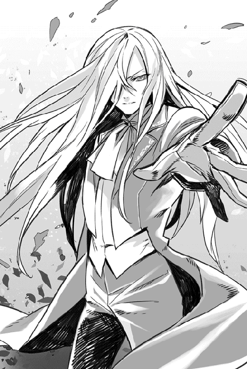
わざと慇懃この上ない態度でお伺いを立てる。
無論、ある期待を持ってのことだが......ジェイルは簡単にこの挑発に乗ってくれた。
「ふん、これだから小賢しい女は嫌いだ」
盛大に顔をしかめると、ジェイルはその場でエリーゼを抱き上げた。
そのまま、ゆっくりと後退しようとする。それを見て、クリスタリカは歓喜に震えた。この長兄は、期待した以上に甘ちゃんだったようだ。
こんなヤツが後継者候補とは、片腹痛いっ。
「おまえも裏切るわけね、ジェイル・ビューゼルシュタイン！」
喜色満面で叫ぶ。
「なんとでも好きに言うがいいさ。おまえの茶番に付き合う気はない」
ジェイルは冷え切った声で言い返す。
「父上への言い訳は後のこととして、今は彼女を安全な場所に移させてもらう。この城にいるのは、餓狼に餌を与えるようなものだ」
「誰が逃がすものですか！」
その瞬間、クリスタリカはかつての兄へ向かって走った。
上手くすれば、これで邪魔者が二人も消えるのだ。
第四章 集結
魔王ヴォルザードが軍の視察を終え、帝都ヴァルマグロスへ戻ったのは、実にエリーゼが地下牢を脱出した、その翌日のことである。
既に全ては終わった後であり、おまけに自分の息子たるジェイルが脱獄の手助けをしたと聞き、魔王の機嫌はすこぶる悪くなった。
「それは真か、クリスタリカ？」
謁見の間ではなく、わざわざ自分の私室に娘を呼び、ヴォルザードは直々に詰問した。
それこそ、執務机の向こうから睨み付けるようにして尋ねたのだが......視線の先で立つクリスタリカは平然としたものだった。
「真でございます、お父様。脱獄途中のエリーゼ・シュトラウスを見つけ、あたしが阻止しようとしましたが......あいにく、兄上に阻まれました。兄上はエリーゼを伴って、ヴァルマグロスから逃げ去ってしまいましたわ」
「その怪我は、その時のモノだと申すか？ つまり、おまえはジェイルと戦ったのだな」
余裕に満ちたクリスタリカの表情がさすがにすっぱいものに変わった。
額にまだ微かに残る切り傷に一瞬だけ右手を当てた後、クリスタリカは何食わぬ表情に戻って肩をすくめた。
「兄妹と言えども、さすがに見過ごせませんでしたから。結局は兄上に逃げられてしまい、無念でしたけど」
「ジェイルが本気ではなかったことを、むしろおまえは喜ぶべきかもしれんぞ......ああ見えても、予の長男であることに変わりはない」
魔王としては、さりげなく警告と忠告を同時にしたつもりである。
ただクリスタリカは全く堪えた様子もなく、すぐに何か言い募ろうとした。それを無視して、魔王はわざとらしく独白する。
「それにしても、地下牢から抜け出すには、牢にかけられた魔力封じの呪縛魔法を解除する必要がある。それを教えた者は誰か？」
この質問に、クリスタリカはほんのわずかに表情を動かしたように見えた。
もちろん、あくまで魔王の主観に過ぎないが、微かな動揺を見たような気がしたのである。もっとも、彼女はすぐに韜晦するように微笑み、落ち着いて答えた。
「それは、もちろん兄上が教えたのではないでしょうか。他に教える者がいるとも思えませんし」
「どうかな......いずれにせよ、真実は予の手で明らかにすることになろう。ただ、今やらねばならぬことははっきりしている。まずは予の不肖の息子とエリーゼの行方を突き止めることだ」
魔王が目を細めて言い切ると、クリスタリカは執務机に両手を置き、ぐっと身を乗り出してきた。それこそ、父である魔王にくっつくほどに。
「お父様、それならあたしに任せてくださいませんか」
そこでなぜか不快なことを思い出したように刹那だけ表情を歪めた後、クリスタリカは明るくねだった。
「配下を使って、必ずや居所を突き止めてご覧に入れます」
ビスチェで強調された胸がすぐ眼前にあり、彼女が魔王以外の男に対してねだったのなら、大いに効果があったかもしれない。
しかし無論、娘の思惑をかなり正確に把握している魔王としては、頷くつもりは毛頭なかった。
「前にも言ったはずだ、クリスタリカ。おまえには頼まない」
この上なくはっきりと魔王は言い渡した。
「もしおまえに命じれば、万一上手くコトが運んでも、予は息子達の死体を見ることになるだろうからな」
「息子達って......エリーゼは配下に過ぎないのでは？」
さりげないクリスタリカの問いかけを、魔王は露骨に無視した。
未だに執務机から動かず、じろりと手の掛かる娘を睨めつける。
「重ねて申しおく。おまえは何もするな、娘よ。これは魔王としての命令だ。彼らの行き先なら、予にも見当くらいはつく。......おまえの力を借りずとも、連れ戻すことになるであろう」
話が終わった印に、魔王は微かに右手を振る。
最後まで不満そうな表情を崩さなかったが、それでもクリスタリカは魔王の意思表示に従い、私室から出て行った。......後は大人しくしてくれればと思うが、なかなかそうはいかないかもしれない。
「どこまで手を焼かせるのだ......あの息子や娘達は」
ため息をつき、魔王は立ち上がる。
頭が痛いことだが、これでロクサーヌに加えてジェイルやエリーゼまでもがヴァルマグロスを飛び出してしまったことになる。
しかも、行き先はおそらく、人間のところだろう。
不愉快極まりないが、とにかく今は確実に連れ帰りそうな者を派遣するしかあるまい。もちろん、この際は魔王がマークしていた、「あの男」の対処も考えざるを得ない。
「誰かおらぬか！」
魔王ヴォルザードは早速、外に控える衛兵を呼ぶため、声を張り上げた。
☆
神殿跡があるゴーストタウン、ソムニウムでの初日は、ショウの意図しない乱闘で幕を開けたが──結局、あの乱戦はそれなりに意味があったのかもしれない。
元々、からりとした性格の者が多いウォーリア達だけに、散々殴り合いをした後は互いに酒など酌み交わす仲となり、ショウの予想以上に和気藹々としたムードになったからだ。
特に、ユウリにのされた巨漢のダルトンが、目が覚めるなりショウに好意的になったのは驚いた。
......彼曰く、「あんなすげー女を連れている男が、ショボい野郎のはずはねぇ」とのことだが、今一つ首を傾げる意見である。
ただ、翌日にもまた別の地方にあったアンダープリズンから脱出組がやってきて、前日と同じような展開になったのは、ショウとしても参った。
どうもウォーリアという人種は、「俺より弱いヤツに率いられるのはご免被る」という意見の持ち主が多いらしい。
まあ、その気持ちもわからなくはないが。
とりあえず、この遺棄された街には、かつての住居跡が打ち捨てられたままになっていて、寝泊まりする場所には困らない。
驚いたことに、ちらほら集まる者の中には、元々周辺のブルークラスの街に住んでいた者も少なからずいた。
彼らに言わせれば、「それなりに快適な生活だけど、飼い犬みたいな人生はご免だ」ということらしく、その気持ちもショウはよくわかる。
これを皮切りにして、大陸全土から仲間が集まるようになれば、かなり先の戦いが楽になるはずだった。
あいにくディープブルーの供給がないので、明かりなどは皆無だが、自分達で食料を持ち込み、しばらくアンダープリズンからの脱出組や、一念発起したブルークラスの元市民を待つのが得策だろう。
ショウは、そう決断した。
「だからって、毎日毎日乱闘騒ぎってのは、いい加減うんざりだよな」
半ば崩れた神殿跡に足を踏み入れつつ、ショウは愚痴る。
元は、白亜の神殿だったはずだが、徹底的に破壊された今は、半ば野ざらしの廃墟に過ぎない。
屋根を支えていた巨大な円柱も何本も倒れているし、石床にもひどい亀裂が幾筋も走っている。明らかに、誰かが破壊したような跡だった。
その、瓦礫交じりの広大な敷地を、ショウは何かを探すように床を見つめて歩いて行く。お供は、いつものようにユウリと......めざとくショウが神殿に向かう途中を見つけた、ロクサーヌである。
夜も更けたこの時間に、まだ起きていたらしい。
「ユウリさんがショウと同じ家屋で寝泊まりするなら、ロクサーヌも当然、ここに住む権利があります！」
......などという、彼女の有無を言わせぬ主張の結果、今や三人が同じ屋根の下に住んでいる。
ショウ自身、内心で怯むものがあるが......しかし三人で同居している方が、かえって間違いが起きないかもしれない。
「それにしても......これだけ派手に人を集めていると、そのうち魔族が攻めて来るかもしれませんね」
ユウリがポツンと述べた。
半分ほど屋根が崩落して、夜空がそのまま見える神殿内を見渡していたショウは、ため息をついてその危惧を認めた。
「確かに。しかし、かつてのギーガンの暗躍のお陰で、今や大陸中のアンダープリズンで、似たような暴動騒ぎが起こってるはずだ。ヤツら、それをいちいち鎮圧に動いてるらしいからな。さすがにすぐには来ない......と信じたいが」
そこで嫌なことを思い出し、ショウは顔をしかめた。
そう言えば、リンデルの街であのクソッタレの町長は、『彼女（ロクサーヌ）だけは、魔族様の使者が来たら引き渡す。もう、こっちから出した使いにそう約束したのだ』とか吐かしていた。となると、あの時点で既に町長が、魔族達にショウ達のことをバラす使いを出したというわけだ。
そうでなくても、どうせショウがロクサーヌと一緒にいることは、とうに魔王の耳に入ってると見た方がよい。ジェイルが工作すると約束してくれたものの、それを全面的にアテにするのもまずいだろう。
「まあ、交代で見張りも立ててるし、用心はしてるつもりだが」
ショウがぶっきらぼうに言うと、興味深そうに周囲を観察していたロクサーヌが、ふいに尋ねた。
「ところで、この神殿跡になんのご用です？」
しばし迷った末、ショウはあえて迂遠な言い方をした。
「俺は元々、ソウルバイブルを養父から譲り受けたんだが......この話はしたかな？」
「いえ、初めて聞きます」
神殿内が相変わらず空っぽなことを確かめた上で、ショウは小声で教えてやった。
「ここだけの話、俺の養父が最初にソウルバイブルを手に入れたのは、ここなんだ」
「え、えっ!?」
予想以上にロクサーヌは驚いたらしい。
口元に手をやっていた。
「正確には、この神殿の中じゃないけどな。しかし、戦神エクスを祭る神殿がこの場所に建てられたのも、本来の理由はソウルバイブルを隠すためだったと聞く」
ショウは、注意深く神殿の床を観察して歩きながら、世間話のように言う。
「ええと、最初から順を追って教えてくださいませんか？」
ロクサーヌに促され、やむなく続けた。
「ソウルバイブルに記されている魔法は、なぜか禁忌魔法と呼ばれることが多い。こう呼ばれる本当の理由を知っているかな？」
ユウリには話したことがあるので、ロクサーヌのみに問う。
驚いたことに、ロクサーヌは首を振った。
「へぇ。ロクサーヌでも知らないとなると、禁忌が徹底してるのは事実みたいだな」
「どういうことでしょう？」
「実は、最初にソウルバイブルの魔法に関わることを禁じたのは、魔王ヴォルザードその人なのさ」
「ち、父上が!?」
「その通り。ソウルバイブルの噂自体は数百年前からあったけど、それを実際に『禁忌魔法』としたのは、魔王その人が最初で、またそんな昔のことじゃない」
「本当ですか？」
本気で初耳だったらしく、ロクサーヌはまた足を止めた。
「知りませんでした、そんなこと！ だって、ソウルバイブルの話自体、魔族の中では禁忌になっていて──あっ」
途中で気付いたのか、小さく声を上げる。
「今、ロクサーヌが思った通りだ。そう、魔王はソウルバイブルの件を話題に触れることすら禁じている。痕跡ごと消したいらしい。だから、年若い君が知らなくても、ある意味では当たり前かもな。魔族にとって、この魔法は本当に触れちゃいけないものなんだ」
「でも、どうして？」
この当然の質問に、ショウは真顔で答えた。
「養父が当時聞いた根強い噂だと、魔王曰く『あまりにも危険だから』だそうだ」
目を見開くロクサーヌを見て、ショウは床に倒れた白い円柱を指差す。
「探しものは後にして、少し休もう」
ショウを真ん中に三人が座ってから、やっと口火を切った。
「俺が知ってる話は、所詮は養父からの又聞きだから、年代などはかなりいい加減だと思ってくれ。養父自身が忘れようとしてた話だし」
まず最初に断りを入れ、ショウはなるべく簡潔に説明した。
「巷に伝わる噂の一部だと、コトの発端はおよそ三十年前になる。当時、魔王ヴォルザードは、遥か昔から放置されたままのグールの遺跡に関心を持ち、自分の領内の遺跡を調べて回っていた。いや、領内ばかりじゃなく、当時は街も存在してなかった辺境のここソムニウムにも、魔王は調査の手を伸ばしていたんだ。──ところで、遺跡調査についちゃ、配下達が今もやっているそうだが？」
ロクサーヌは異論なく頷いた。
「今や、全大陸を対象に、各地の遺跡を調べさせています」
「......らしいね。ただ、三十年前には辺境とはいえ、まだここはロンザリア領内だったし、
魔王がどうして無茶な潜入と調査をやろうとしたのかは、わからない。その当時、魔族と人間は大陸上に境界線を引き、割と上手くやっていたそうだが、それにしても他国への侵入と調査となると、かなり思い切った決断だったはずなんだがな」
ショウはまた窺うようにロクサーヌを見たが、今度ばかりは彼女にも理由の見当がつかないのか、黙って首を振った。
「やっぱり、理由は謎か。まあいいけど、今も昔も魔王がグールの遺跡に多大な関心を持っているのは事実だろうな。......で、三十年前の調査時、魔王はこの地にあったグール遺跡で、ソウルバイブルを見つけたってわけ」
「父が最初の発見者だったなんて、全然知りませんでした」
本気で意外そうにロクサーヌは眉をひそめる。
「今じゃ、そうと知る者も少ないらしいけどね」
ショウはさらりと返す。
「ところで、本当に妙なのはここからなのさ。魔王はこの地でソウルバイブルを発見するなり調査を中止して、以後は配下達にも遺跡への出入り自体を禁じた。その理由が、さっき言った通り『あまりにも危険すぎるから』さ。多分、ジェイルなら知ってるだろうから、聞いてみるといい」
「......怖い物知らずの覇者である父上が、そんな布告を出すなんて」
ロクサーヌが掠れた声で呟く。
「わたしは以前、ショウからその話を伺ってますが、当時も今も疑問に思ってることがあります」
ユウリが遠慮がちに口を挟む。
「ソウルバイブルが危険だというのなら──いえ、実際に危険ですけど──とにかく、もしそうなら、どうして魔王はそれを発見した時、破棄するなり持ち出すなりしなかったのでしょうか」
「さぁな。その辺の理由は俺にもわからない。ただ個人的に俺は、ひょっとして当時の魔王は、本当の意味でソウルバイブルを我がモノにすることができてなかったんじゃないか？ と疑っている。あれは写本はもちろん、仮に本物を眼前にしたとしても、それだけじゃ本当の意味で手に入れたことにならないんだ。第一、巷間に伝わる伝承とは違い、ソウルバイブルの本物は、本の形をしていない。たまに見つかる写本は、全て本物の上辺だけをなぞった代物に過ぎないのさ」
いかにも質問したそうな女性陣の機先を制し、ショウは話を再開した。
「どちらにしても、当時から世界最強を謳われていた魔王がそんなセリフを吐くのは、よほどのことだ。しかし、運命ってのは皮肉なもんだ。このソウルバイブル発見の事実、魔族側は巧妙に隠したはずなのに、なぜか人間側に洩れちまった。噂はたちまち広まり、聞いた人間は例外なく『魔王が震え上がるほど強力な魔法なら、ぜひ手に入れたい』と思ったわけさ。そして、これは王と言えども例外ではなかった。さっきも話した通り、当時まだここは旧ロンザリア帝国領だったし、その時に在位していたクラウス王は、すぐに遺跡探索を決め、騎士と専門の遺跡調査員を派遣した。これが、およそ二十年前。最初に魔王が発見してから、十年後のことだ」
「それで、どうなりました」
ロクサーヌがぐっと身を乗り出す。
ショウは......別に意図したわけではないが、益々声を低めた。
「その時に送り込んだ総勢二十人からの連絡が途絶え、不審に思ったクラウス王が新たに人を派遣すると......なんと、先に送った連中は、全員が遺跡の地下で死んでいた。それも、恐怖に顔を歪めて、一人残らず失禁した無様な有様で」
「ひっ」
ロクサーヌがびくっと震え、ショウに身を寄せた。
意外と、こういう話は苦手らしい。ユウリが眉をひそめたが、さすがに咎めはしなかった。
「か、仮にも騎士なのに、抵抗もせずに？」
「抵抗したかどうかまではわからないな。そこまで話が伝わってないから。とにかく、全滅してたのは確からしい。......以後、諦めきれないクラウス王は何度か調査の手を伸ばしたが、毎回、似たような凄惨な結果に終わったらしい」
ショウは肩をすくめて両手を広げる。
「結局、騎士を送り込んだ同じ年の年末、王様も魔王と同じ決断をした。グールの遺跡にはもはや触れないことにして、遺跡ごと封印してしまう。しかも、処置はそれだけじゃない。間違っても誰か他の人間が足を踏み入れないように、かつてのグール遺跡の真上に戦神の神殿をぶっ建てたってわけさ。それが、今俺達がいるこの戦神エクスの神殿であり、信徒の街ソムニウムの始まりだ。知る者こそ少ないが、この街は元々、ソウルバイブルを封印するためにできた街なんだ」
「......ソウルバイブルの禁忌魔法が、再び闇に葬られた瞬間ですね」
ユウリが感慨深そうに後を引き取る。
「そ、そそっ」
震え声で言いかけ、ロクサーヌは生唾を呑み込む。
「そんな凄い書物が、どうしてショウの養父様の手に渡ったのですか？」
「だから書物じゃないって、あれは。まあそれは置いて......これは俺の養父自身、最後まで首を傾げていた出来事なんだけど」
気が進まないまま、ショウは囁く。
ここまで話したのだし、今更「それは秘密だ」とも言えない。いかに不可解だろうと、教えてやらねばロクサーヌも納得しないだろう。
「養父がここを訪れたのは、このエクス神殿が建ったばかりの頃で、およそ十五年前だと聞く。当時はまだ魔族との大戦に突入する前で、養父もウォーリアなんて仕事には就いてなかった。その頃は主に隊商の雇われ護衛で食っていて、この街には仕事の都合で立ち寄ったのさ。そこでどういう経緯があったのか知らんが、街の古老からソウルバイブルの禁忌魔法について小耳に挟んでしまったんだな。好奇心が強かった養父は、夜中に宿を抜け出してこの神殿に来てみた。もちろん、ソウルバイブルを見つけてどうこうしようなんて野望はさらさらなく、単純に観光気分だったみたいだ。話のタネに、魔王が訪れた遺跡を見てみようと。あいにく時間も時間だし、仮に昼間に来たところで、信者でもない養父が神殿に入れるわけがない。おまけにグールの遺跡は神殿の地下にあるわけで、神殿内に入ったところで、見ることすら叶わないからな......それでもまあ、いい気分で酔っぱらってた養父は、とにかく来てみた」
そこまで話した時、ショウはまだ生存中だった養父のことを思い出した。
脳裏に、在りし日の彼の姿がありありと浮かぶ。
地上で初めて養父母に会った時からそうだったが、養父は最初から最後まで、ショウとの距離感を計りかねている様子だった。
ひどくぶっきらぼうな話し方だったし、遊んでくれていた時ですら、どこかショウに気を遣っていたように思える。
ただし、冷酷だとか無関心だとかいうのとは、少し違う。
そもそも、ショウを「うちで引き取ろう」と強く主張したのは養父が先だったし、「ここで生きていくなら、剣技を覚えた方がいいぞ」と提案してくれたのも、養父だった。
あの人は常に、ショウの将来を心配してくれていたような気がするのだ。
思い出は数多くあるが、ショウの記憶に強く残っているのは、まだ家族が地上の村で暮らしていた頃の話である。
引き取られたばかりのショウが、よそ者ということでいわれなき迫害を受け、危うく近所の男に袋叩きにされそうになったことがある。
「謝れっ」と言われた時に、素直に頭を下げなかったのが、直接の原因だろう。
謝罪を要求された理由は、もはや覚えていない。きっかけすら忘れるほどのどうでもいいことだったのは確かだ。
とにかく、その時のショウは自分が悪いと思わなかったので、もちろん謝らずに睨み返した。拳を固め、ぐっと唇を引き結んで。
当時はまだ妹の運命も知らず、毎日を焦燥感と共に過ごしていたので、気分がささくれだっていたのかもしれない。面倒を避けるのなら頭を下げた方がよかったはずだが、そんなことは夢にも思わなかった。
「なんだその目はっ。フォリナー野郎が！」
激怒して喚いた相手がでっかい拳を振り上げた時、異変は起こった。
いつの間にか男のそばに駆け寄ってきていた養父が、容赦なく相手を突き飛ばし、盛大に転ばせたのだ。
怒りに震えるそいつを無視して、養父はショウにただ一言だけ訊いた。「原因はなんだ？」と。ショウがどもりながら答えると、養父はまだ座り込んだままの男を見やり、はっきりと申し渡した。
「殴られるような理由じゃないな。......わしの言い分が不満で、どうしても殴りたいっていうなら、まずわしが相手になろうじゃないか」
やっと跳ね起きた男は──この時のセリフは本当にはっきり覚えているが──今度は養父を睨み、「フォリナーのガキを庇うのかよっ」と喚き散らした。
「フォリナーのガキじゃない。二度とそう呼ぶな」
養父は真っ直ぐに相手を睨み返し、そう返した。
「こいつはな、わしの息子だ」
......今でも、こう宣言した時の養父の顔を、ショウは鮮明に覚えている。
頭に置かれた掌の温かさに、震えるような安心感を覚えた。
ああ、この人は信じられる人だと......そう確信した瞬間だった。
ショウがふいに黙り込んだせいか、左右からロクサーヌ達が心配そうに見つめていた。ショウは「ちょっと養父のことを思い出しただけさ」と笑って首を振る。
「ええと、エクス神殿についての養父の思い出話だったな？」
改めて、ショウは記憶を辿った。
......それほど頼もしい養父だが、その彼にとってさえ、ソウルバイブルはかなり不気味な存在だったらしい。
この不気味な思い出話を聞いた時は、もうショウも養父に引き取られていて、しかも養母も含めた家族全員がアンダープリズンに放り込まれた後だった。
つまり、ショウがこの話を聞いたのは、敗戦直後くらいである。
──大戦が終わり、家族全員がアンダープリズンに放り込まれた後、窓辺に座って陶器のグラスで酒を呷っていた養父を、ショウは昨日のことのように思い出す。
壮健で生涯を腕っ節だけで渡ってきた養父のはずなのに、その夜の彼は明らかに何かに怯えていた。
「──案の定、わしはエクス神殿の前で衛兵に追い払われたさ。まあ、それはいい。どうせ最初から入れるとは思ってなかったから。ただな、問題はその後なんだ」
語っていた時の養父は、明らかにこの辺りで視線が落ち着かなくなっていた。
あたかも、彼が出会った男が、まだその辺にいるかのように。
「門前払い食らって、夜の街路を歩いてたらな......わしの前に、いきなり黒いローブを纏った男が立ち塞がったのよ。あの唐突さと言ったらなかった。まるで建物の影から湧き出したような気さえしたもんだ。無論、だからってそれだけならなんてことないんだが......そいつは、なぜか銀色の仮面なんぞしてた。お陰で全然、顔が拝めなかったな」
しかもその仮面男は、不可解なことに養父を知っているように見えたらしい。
名乗った覚えもないのに、いきなり養父の名前を口にし、「おまえにこれを授けよう」と言って、奇妙な黒い物体を渡した。
大きさは本と大差ないが、しかしモノは本ではない。漆黒の石板というのが一番近いだろう。つまり、どう見てもそれは本などではなかった。表面にも、一文字も書いてなかったし、真っ黒なだけでいかなる特徴もなかったのだ。
好奇心の強い養父と言えども、さすがにこれは突っ返そうとした。男の魂胆が知れなかったし、嫌な予感がしたからだ。
しかし、断固として男に背を向けた養父に、仮面の男はぼそりと告げた。
「いいのか？ ここで受け取らないと、六年後におまえが授かることになる息子は、遠い未来で死ぬことになるぞ」
このセリフを、養父は「あいつ（養母））が将来産む子供のことか？」と、とっさに思った。しかし、当時の彼は既に養母と一緒になってはいたが、まだ子供が生まれる気配など微塵もなかった。
......それでも、あまりにも男の口調が真剣なので、その勢いに押されるようにして、その石板を受け取ったのだという。
「どういう代物なんだ、これは？」
と尋ねた養父に、仮面の男はこともなげに言ってのけた。
「ソウルバイブルだ」
「なにっ。禁忌魔法が記されたという、あれか!?」
「そうだ。ただし、くれぐれも言っておくが、息子のために残すだけにして、おまえはそれを我がモノにしようとするな。おまえの器量では、おそらく使いこなせずに死ぬだけに終わるだろう」
こってり脅された養父は、慌てて石板を見直したが、やはり表面はつるつるした謎の石、あるいは金属であり、字などどこにもない。これを本と呼ぶのは無理がある。
どれほどじっくり調べても、傷一つない石板にしか見えなかった。
おかしな点と言えば、見かけの割に全く重量を感じないところくらいか。
「これがどういう──」
改めて問おうとした養父は、顔を上げた瞬間、声を上げそうになった。
......ついさっきまで前に立っていた仮面の男は、既に跡形もなく消えていたからだ。ここの街路は一本道で、次の曲がり角までは数百メートルはあったというのに。
「や、やめてくださいな」
自分の身体に両腕を回し、ロクサーヌが青白い顔でこぼす。
「なんだか、凄く怖くなってきました！」
魔王の娘という身分の割に、こういう話がとことん苦手らしい。
いや、別にショウも得意というわけではないが。
「安心してくれ。どうせ話はもう終わる」
ショウは苦笑し、さっさと思い出話を切り上げた。
「仮面男と遭遇してから、正確に六年後──まさに予言された時だ。ロンザリア世界に跳ばされてきた俺が養父と巡り会い、彼の家に引き取られることになった。......かくして養父はかつての仮面男の話を思い出し、俺を家に迎え入れた翌年になって、隠匿してたソウルバイブルを託したわけだ。『わしには無用の長物だったが、あの男の話を信じるなら、将来おまえには必要となるかもしれない』と言って」
「そこまでは、わたしも以前お聞きしましたが」
ユウリがためらいがちに言った。
「結局、ショウはその黒い石板にしか見えないソウルバイブルから、どのようにして禁忌魔法を得たのです？」
「石板なのか金属板なのかは、謎だけどな」
弁当箱ほどの大きさをしたツヤのある黒い板を思い出し、ショウ自身も首を傾げる。
「とりあえず言えるのは、あの石板はどうやら情報の固まりだったらしい。しかも、情報を入手しようとするには、資格がいるらしいんだな。養父が何年も所持していたのにまるっきり無害だったのは、仮面男の忠告を聞いて、最初からソウルバイブルに興味を持たなかったからなんだ。もしも養父が『俺のものにしたい！』と思っていたら、その時点で死んでいたかもしれない」
「資格とは、どのような？」
ロクサーヌがすかさず尋ねたが、ショウはゆっくりと首を振った。
「それが、どうもその辺りの記憶が曖昧なのさ。ただそんな気がするだけで」
ソウルバイブルを得る時、確かに誰かに何かを訊かれた気がする。
謎の誰かと問答したような記憶が微かに残っているのだ。......ショウとしては、なんとなくその相手はソウルバイブルの本体だった気がするのだが、あまりに馬鹿らしくてそこまでは告白しなかった。
普通、「モノリスっぽい石板が自分に語りかけてきた」なんて話は、なかなか信じられるものではない。
「気まぐれで神殿跡に来てみたけど、やっぱりそうそう上手い具合に地下への入り口なんて見つからないよな」
わざとらしく話を変え、ショウは座り込んでいた円柱から立ち上がる。
とその時、神殿の片隅で何かが崩落する音がした。
「......なんだ？」
ショウ達は顔を見合わせ、なんとなく音がした方向まで歩いて行った。倒れて真っ二つに折れた戦神エクス像などを大きく迂回して、音の出所まで歩く。
そこは、まだ神殿の屋根が残る南西の一角で......不思議なことに床の一部にぽっかりと穴が開いていた。気を利かせたユウリが自分の能力を使って明るい光球を出し、下を照らす。すると、すぐ下は猫の額ほどの狭い別の石床（あるいは踊り場？）があり、そこから先は、石段が延々と地下に続いているのが見えた。
「これって......まさか」
顔をしかめたショウの後を、ロクサーヌが引き取った。
「グールの地下遺跡に続く階段......とか？」
またしても、三人で顔を見合わせてしまう。
「俺達がここへ来た時には、こんな穴はなかったよな？」
「絶対にありませんでした」
ショウの問いに、ユウリが即答した。
「下に、崩れた床の瓦礫がちらばってます。さっきの音は、この床が崩れて落ちた音だったのでしょう」
ショウは渋面でしばらく考え、嫌々口にした。
「するとなにか......俺がソウルバイブルの話をした途端、『偶然にも』グール遺跡への地下階段が露出したってか？ 待ってましたとばかりに？」
「や、やめてください」
ロクサーヌがショウの腕にすがりつく。
「そんな偶然、有り得るんですか？」
「もちろん、偶然じゃないはず」
きっぱりとユウリが言い切る。
「そんな都合のよい偶然があるはずないです......明らかにショウのセリフに反応したか、あるいはショウ自身を観察していて、誘導すべく破壊したのだと思いますが」
警戒心旺盛な声音で述べ、ユウリは周囲をじっくりと眺める。
しかし、彼女の力を持ってしても、不審者は見つけられないようだった。
「周囲には、街の入り口で見張り中のウォーリアの気配しかありません。不審者の気配は皆無です......妙ですね」
無言のまましばらくすると、ユウリとロクサーヌはショウをそっと窺った。
結果的に、ショウが決めるしかないようだった。
「いいよ、入ってみようじゃないか」
「ほ、本気ですか!?」
「......不安なら、ロクサーヌだけでも戻った方がいいのでは？」
すかさず提案したユウリを、彼女は膨れっ面で睨む。
「どうしてですかっ。仮にも魔王の娘ですよ、ロクサーヌは。過去の遺跡がどうしたというのです」
「まあまあ」
ショウは慌てて二人を宥める。
「仲間割れはよそう。仮に敵がいたとして、その敵の思うツボじゃないか」
窘めた後、ショウは大きく息を吸い込んだ。
「さて、鬼が出るか蛇が出るか」
意味がわからず、きょとんと首を傾げる二人に笑いかけ、ショウは率先して下へ飛び降り、狭い踊り場から階段を下りて行った。
☆
神殿の床下すぐに階段が露出したということは、エクス神殿をぶっ建てた旧ロンザリア帝国のクラウス王は、驚くほど性急に、地下遺跡を隠す必要に迫られたとしか思えない。
普通は、神殿の基礎工事の段階で、入り口など跡形もなくなっているはずだからだ。
「それとも、きっちり封じておいたのに、また誰かがこっそり掘り返したとか？」
ショウが階段を下りながら独白すると、すぐ後ろにいるロクサーヌが言った。
「あっ。今、壁の色が変わりました。多分、ここから上は、人間が後から作った通路じゃないでしょうか？」
「ああ、なるほど」
ショウはやっと得心した。
「一応、いざという時は下へ行けるように、完全に埋めないで入り口をつけたわけな」
「でも......その割に、神殿の石床は完全に塞がれてましたね。それとも、ロクサーヌ達が知らない開け方でもあったのでしょうか」
「その辺は謎だよな」
相槌を打ち、ショウは首を振る。
「しかしいずれにせよ、その入り口ごと崩れてしまったら、もうわからん」
「それは......そうですよね」
またロクサーヌが呟く。不安なのか、ショウのすぐ後ろにぴったりくっつくようにして下りていた。
首筋に呼気がかかるので、わかるのだ。
それでもショウは黙り込んだまま、そのまましばらく辛気くさい階段を下りて行く。最後尾を守るユウリが頭上に出してている光球のお陰で、足下はちゃんと見えるが、その代わりどこまで続いているのかは全くわからない。
不親切なことに、この遺跡は魔法の如何を問わず、明かりの類は全く装備されてないらしい。しかも、階段は決して真っ直ぐ下りているわけではなく、どうも大きく螺旋状に下へ下へと続いてるらしい。
それはいいが、黙り込んだ三人がおよそ十分は下りたのに、それでも前方には深淵が広がっているだけである。
このロンザリア世界に生きる魔族と人間の双方の常識からして、信じ難いほど深い地下へと伸びているようだ。
「つーか、俺のいた世界にだって、ここまで深い地下はあんまりない気がするな」
ショウは早足で階段を下りながら、不信感を募らせた。
微かな風が後方から吹き付けるが、前方にはよどんだ空気しか感じない。下が閉鎖された地下空間だとすると、空気の循環をどうしていたのか気になるところだ。
考え込んでいるうちに、体感時間でさらに十分ほど過ぎた──と思う。
時計がないからわからないが、長時間に及んでいるのは間違いない。その証拠に、またロクサーヌが言った。
「幾らなんでも、おかしくないですか？ これだけ掘るような技術は今の世界には存在しないはずです。第一、どういう理由でこんな地下に？」
「わからないけど、噂が本当なら、グールはこの世界の種族じゃない。ロクサーヌはそれを忘れてるよ」
うっという呻き声がして、ロクサーヌが黙り込む。
改めて、自分達がとんでもない場所に来ている事実に気付いたらしい。
「しかし、この調子で下っていくと、帰りが大変だよな。もう少し下りて、まだ素っ気ない階段のままだったら──むっ」
「ど、どうしました!?」
「何か見えますか？」
女性二人が次々に問いかける。
ショウは、我ながら自信なさそうな声音で呟いた。
「いや......終点に着いたらしいんだが」
さらに二分ほど下りて、待望の終着点に辿り着いた。
......それはいいが、そこは広々とした地下空間になってはいたが、まったく何の変哲もない空っぽの空間で、天井はそれなりに高いものの、まるで愛想というものがなかった。
「ちょっと広い踊り場って感じで、特に──」
「ショウっ」
ショウの肩に手を触れ、ユウリが前方を指差す。
最初に目を向けた時、周囲と同じ壁に見えたが......そこだけが他と違う色だった。あきらかに煉瓦を積んで塞いであるらしい。
「この奥が本命か？」
「おそらく」
ユウリが頷く。
「伝承は真実だったということでしょう。ソウルバイブルの探索に犠牲を出しすぎたクラウス王の命令で、最後は塞がれてしまったのでしょうね」
「でも......ソウルバイブルは結局はショウの手に渡ってるわけで、無意味でしたね」
ショウを横目で見つつ、ロクサーヌが言う。
「銀仮面の男が鍵なんだろうけど、養父も顔を見てない......これまた謎のままか」
ショウは首を振って、目の前の塞がれた壁を見た。
どうも気に入らない。このまま手ぶらで帰るわけにはいかない気がした。
「この壁をぶっ壊したら、上にまで音が響くかな？」
「ええっ」
驚き顔のロクサーヌに代わり、ユウリが答えた。
「これだけ深い地下なら、大丈夫でしょう。それに、向こう側にはなんの気配も感じませんし。──壊しますか？」
最後は質問だった。
「悪いけど、頼むよ」
ショウがおどけて手を合わせると、ユウリはいつものように微笑して頷いてくれた。
「お任せください」
「でも、どうやって壁を──きゃっ」
疑問を口にしかけたロクサーヌが、口元に手をやる。
それはまあ......つかつかと壁に歩み寄ったユウリが、いきなり拳で問題の壁をぶち壊し始めたら、驚くだろう。
普通は指の骨が全部砕けた挙げ句、手が血塗れになって終わりだが、あいにくユウリは人間ではない。元々は異世界で神扱いされていた高次元の生命体である。
肉体もある意味で単なる化身に過ぎず、自ら強度を上げるのも簡単である。
「では......せ〜の」
などと気合いの入らない掛け声で始めたユウリの破壊行動は、初めて見るロクサーヌには瞠目ものだったろう。
小さな拳による連打のラッシュなのに、あまりの速さに、正直ショウでも目で追うのが辛いほどだった。しかも、壁をぶん殴る度に、嘘くさいような気安さでボコボコ穴が開いていく。いちいち耳を覆いたくなるような壮絶な破壊音がするので、もちろんやらせでもなんでもない。
一撃ごとに、人外のパワーで壊しているのだ。
ショウ達が幾らも待たないうちに、人が通れるほどの穴が開いてしまった。
その向こうは数メートルほどの通路になっていて、さらにその奥には何かの空間がある。
歩み寄ろうとするショウを制し、安全確認のためかユウリが素早く中に入ってしまう。無造作に通路を通ると、ずかずかと奥の空間へ入り込んだ。
「おいおい」
「大丈夫です、ご心配なく」
そこで立ち止まり、ユウリは念入りに左右を見渡す。
最後は、なぜか小首を傾げていた。
「どうかしたか？」
堪えきれず、ショウはさっさと自分も中へ入った。
どうも微かに異臭がするが、それも気になったのだ。
「ま、待ってくださいな」
慌てた様子でロクサーヌも続いた。
二人で寄り添うようにして、ユウリがいる空間まで来てみる。
「──うっ」
入った途端、鼻を摘んだ。
「こりゃまた......ひでーな」
「いやっ」
ショウと、顔を覆ってしまったロクサーヌの声が重なる。
最深部は、光沢のある黒い金属で覆われた空間だった。およそ二十畳ほどはあろうかという、長方形の部屋......に見えるが。
問題は、床に無数の死体が散らばっていることだ。
鏡のようにつるつるした漆黒の部屋に、服や鎧を着込んだままの死体が折り重なるようにして散らばっている。
どの死体もほぼミイラ化しているが、閉鎖された空間だけにまだ死臭の残滓が残っているらしい。
「おそらく、クラウス王の命令を受けた配下達の死体でしょうね」
「だろうな」
冷静なユウリの指摘に、ショウは顔をしかめて頷く。
どういう事情があったのかは知らないが、遺体の回収すらされず、そのままらしい。
「ショウ」
ロクサーヌが口元を手で覆ったまま、言った。
「もう引き返しませんか。この部屋は空っぽに見えます」
「そう......だな」
ショウも今一度、奇妙な部屋を見渡し、頷いた。
明らかにこの世界では見られない金属で造られた部屋だし、全く継ぎ目のない加工の仕方などは、いかにも文明度の進んだ種族を思わせる。
なんとなくこの部屋が遺跡の本体ではなく、まだ先へ行く方法があるような気がするのだが......あいにく、ショウの知識ではどうにもなりそうもない。
「わかった、引き返そう」
そう決断し、ロクサーヌがほっとした顔をみせたその時──変化は起こった。
「うおっ」
いきなり胸の奥が苦しくなり、ショウはその場に片膝をついてしまう。
「ショウっ」
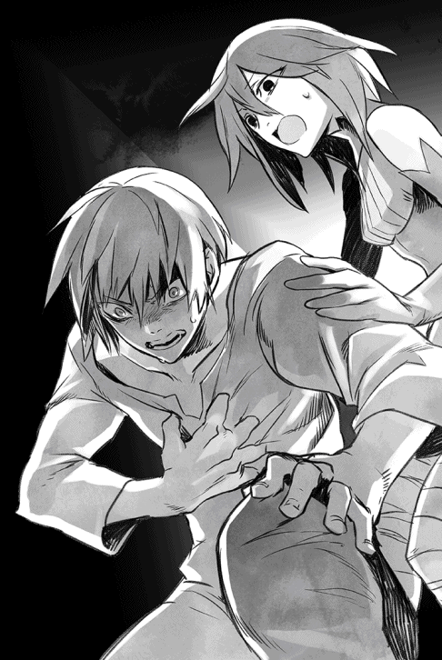
「どうしました！」
ユウリとロクサーヌが駆けつけて背中をさすってくれたが、苦しさのあまり、答えることもできないほどだった。
「わ......からな......くっ」
言いかけ、今度は刺すような痛みが全身に走り、ショウは尻餅をつく。
途端に、自分の胸から黒い物体が飛び出し、部屋の中央に飛んだ。
「ソウルバイブルがっ」
「え、あれがそうなんですか!?」
ロクサーヌが素っ頓狂な声を上げたが、ショウはそれどころではない。痛みと苦しみは綺麗に消え去ったが、代わりにかつて自分と融合したはずのソウルバイブルが外に飛び出してしまった。
八年ぶりに目の当たりにする黒い板状の物体を見て、ショウは飛び起きてそちらへ走ろうとしたが──あいにく取り返す前に、ソウルバイブルは閃光を発して飛び散った。
「きゃっ」
「くそ！」
「ショウっ」
三人の声が部屋の中に響く。
おそらくショウも含めて全員、ソウルバイブルが爆発でもしたのかと思ったはずだ。しかしそうではなく、今や部屋中に青白く輝く謎の文字が浮かんでいた。どれも、ショウの知るいかなる言語とも異なる文字だったが、なぜかショウには読めずとも理解できた。
「これ......ソウルバイブルの短縮呪文だ」
「これが？」
「全然、読めませんが」
ショウの言葉に、ロクサーヌとユウリが戸惑った声を上げる。
「読めないのは俺も同じだけど、なぜかわかるんだよ」
ショウは言い訳するように呟く。
謎の文字は部屋を覆い尽くすほどの分量があり、だれかが悪戯に部屋中にばらまいたように、まるで無作為に宙を漂っている。
『──汝は戦士か』
「わっ」
いきなり聞こえた声に、ショウ達は顔を見合わせる。
「声がっ」
「敵はどこ！」
ロクサーヌが叫び、ユウリは慌てて周囲を見る。
「俺が訊かれてるんだよな？ しかし、この声には覚えがあるぞ」
「......撤退しなくて大丈夫ですか？」
ロクサーヌが床のミイラ死体に目をやり、心配そうに言う。
自分の身の安全ではなく、ショウの心配をしてくれているらしい。
ショウは大きく息を吸い込み、重々しく答えた。
「悲鳴を上げながらダッシュで逃げるか、雄々しく踏みとどまるか──今まさに、プライドと相談して天秤にかけてるトコだ」
「この遺跡にセットされた、自動音声かもしれませんね」
ユウリが用心深くショウの背後に回り、呟く。
彼女もまた、心配しているようだった。
「わからんが、俺はかつてこの声を聞いたことがある......確か、養父からソウルバイブルを受け取った時だったような」
言いかけた途端、また同じ声がした。
『汝は戦士か』
「一応、そのつもりだっ。特に免許はないけどな！」
ヤケクソでショウが怒鳴ると、すぐに返事があった。
『では、心して答えよ。汝は何故に過剰な力を求める？』
ああ、確かにこの声だ──ショウはやっと思い出した。
なぜ今の今まで忘れていたのかわからないが、八年前に養父からソウルバイブルを受け取った時も、確かに胸の内でこの声が聞こえたのだ。
しかも、同じ質問をされた気がする。
......当時は悩む必要もなく、「今の自分に唯一残された、養父母達を守りたい。そして、元の世界へ戻る手段があるなら、それも知りたいんだ」と即答できた。
しかし今や養父母は亡くし、生存していたユキナは手の届かない場所にいる。
ならば、どうすればいいかはわかっているはずだ。
そこまで考え、ショウはきっぱりと答えた。
「妹のユキナを助けるため、そして大事な仲間を守るために、俺には戦う力が必要なんだ」
途端に、今度は周囲の壁が一瞬、強く輝き、ショウに光を集めた。
ユウリとロクサーヌが慌てて駆け寄ったが、なぜか彼女達には光が当たらず、ショウの身体のみが壁と呼応して光っている。
この謎の光で走査され、調べられている気もしたが、ショウ自身にもさっぱりだった。とりあえず、先程のように痛みなどはないのが救いではある。
その異様な光のシャワーはすぐに消え、今度は部屋中に漂っていた謎の文字が一斉に輝く光球に変化し、光の筋を引いてショウの身体に吸い込まれていった。
「だ、大丈夫なんですかっ」
「ショウっ」
女性二人に身体を揺すられ、ショウはガクガクと頷く。
「なんともないさ......わけがわからんけど、これも前に経験してるな、俺」
呆然とするショウに、荘厳な声が続けた。
『汝の才能値は規定数値を超え、ソウルバイブルを得る資格があると判断された。封印のさらなる解除を承認しよう』
「待て待て！ てことはなにかっ」
ショウは慌てて怒鳴った。
「今までは、制限付きの初心者マークだったのか、俺？」
......あいにく答えはどこからもなく、これまでの騒ぎと光の乱舞が嘘のように、部屋の中は元の素っ気ない黒い金属の塊に戻った。
当然、真っ暗に戻ったので、ユウリが急いでまた光を生み出してくれたほどだ。
「今のがなんであれ、もう終わったようですね」
もう一度周囲を見渡し、彼女は言った。
「らしいな」
ショウは上の空で答える。
「しかし、どうして俺はさっきの声を忘れていたんだろう。養父からソウルバイブルを受け取った時にも、ほぼ同じ問答があったのに......全然覚えてなかった」
「今度は忘れないと思いますわ」
ショウの腕にそっと触れ、ロクサーヌが言った。
「ショウが忘れても、ロクサーヌが思い出させて差し上げます。こんなインパクトのある出来事、絶対に忘れませんもの」
「そうですね......ショウの記憶を消した存在が誰であれ、今度はさすがに消せないでしょう。わたし達も目撃したことですし。──それで」
と最後にユウリは意味ありげにショウを窺う。
「なにか新しい魔法を得ましたか？」
「......うん」
もはや未練なく黒い空間を後にしながら、ショウは頷く。
「確かに新たな魔法の知識がある。......しかし、できればあんまり使いたくないよな、こんなの」
ソウルバイブルの異様なところは、写本を読むのとは違い、一瞬にしてその魔法の知識が己のモノになっているところだ。
グールと呼ばれる連中がどうしてこれを残したのかは知らないが、確かに封印しておいた方がいいような力なのは間違いない。
「そういうショウだからこそ、力を得ることができたのでしょう」
相変わらず最後尾を守るユウリが、確信を得たように言った。
「あ、それわかる気がします」
背後のロクサーヌまで、賛同の声を上げた。
「どういうことだ？」
一人だけ訳がわからないショウは、元の石段を上がる前に、振り返ってしまった。
「多分、ソウルバイブルを得るには、二つの資格が必要なんですよ」
なぜか得意そうにロクサーヌが教えてくれた。
豊かな胸の下で腕を組み、熱心に語る。
「一つは、あの声が『才能値』といった数字......おそらく、個人の持つ才能を数値化したものでしょうけど、それが資格の一つ」
「あとの一つも、簡単に推測できますね」
今度はユウリが後を引き取る。
「何故に過剰な力を求める？ この質問がキーなんでしょう。......おそらく、恣意的な使い方をする者はその場で見抜かれ、無理に力を得ようとしても叶わない」
「......あの死体は、全て失格した人達の慣れの果てということになりますね」
最後は、ロクサーヌが独白した。
「それだけ聞くと、いかにも正義の力のように思えるけど、二人共、一つ肝心なことを忘れてるぞ」
場所が場所だけに、ショウは意図せずして声を低めた。
「さっきのあれはグールの遺跡だし、ソウルバイブルもまた、元々はグールが持つと言われた魔法だ。伝承を信じる限り、人を食うと言われた彼らは、太古の昔にこの世界を侵略しようとした連中だぜ？」
ショウのこの疑問に対しては、さすがに二人の返事はなかった。
答えようがないと言った方がいいだろう。
後は誰も口を利かず、ショウ達は黙々と石段を上がっていった。
☆
ショウは戦神エクスの神殿地下で見たことを、他の誰にも話そうとはしなかった。
別に深い理由があったわけではなく、「話したところで気味悪がられるだけだ」と思っていたからだ。
仲間をはじめ、ほとんどの者にとってソウルバイブルの禁忌魔法は、つい最近まで存在すら不確かな噂に過ぎなかったはずだ。地下での経験を考えればそれで正解だし、やたらと興味を持つようなものでもあるまい。
......一つ不気味だったのは、実はあの夜、ショウ達はかなり疲労していたため、エクス神殿の床に開いた穴はそのままにして、一旦街へ戻り、そのまま休んだ。
翌朝、できれば穴を塞ぐつもりで、三人でまた元の場所に戻ってみたのだが──。
不思議なことに、崩落したはずの床はそっくり元通りになっていた。
それを見た時、ショウ達は思わず顔を見合わせ、しばらく黙り込んでしまったほどだ。
ユウリ曰く、「でも、床下の石段はそのままです」とのことなので、さすがに全員で幻を見たわけではないらしかったが......しかし、となるとショウ達の預かり知らぬ「何者か」が床を塞いで痕跡を消したことになり、それはそれで大層、不気味である。
しかし、もはやショウ達も地下遺跡のことなど気にしていられなくなった。
というのも、翌日以降も次々に各地のアンダープリズンから脱獄した者達がこのソムニウムに集い、その数はたちまち千を超えてしまったからだ。
幸い、遺棄された廃屋が多いので、寝る場所には困らないし、これはショウ達にとっても嬉しい驚きだった。
ただ興味深いことに、アンダープリズンから率先して脱獄するのは、まず例外なくウォーリア達が中核となっていた。
ショウが各地に送った使者が、まず最初に自分と同じウォーリアと接触したというのもあるが、人数比から見る限り、それだけが理由でもない気がする。
ソムニウムに集合した多くの男女のうち、どういうわけか戦う気満々──あるいは「一戦するもやむなし」と主張しているのは、必ず賭け試合を生業にしていたウォーリア達だった。
レッドクラスの奴隷として、魔族の顔色を窺うように暮らしていた一般人は、その多くが「戦って勝てるのだろうか」と最初に不安を表明する者がほとんどだったのである。
一応、アンダープリズンから脱獄する程度に覇気がある者でさえそうなら、「俺は逃げるのも革命騒ぎもご免だ」とアンダープリズン残留を望んだ者は、戦意の欠片もなかったに違いない。
その意味では、ショウ達が望む展開と言えるのかもしれない......今までのところは。
ちなみに、血気盛んなウォーリア達だけに、初日と同じく「ショウとかいう代表のヤツと勝負させろっ」と唾を飛ばして挑戦してくるヤツも多く、最初の頃ショウは、うんざりして逃げ回っていた。しかし、後でジェレミーの忠告を聞いて、以後はなるべく挑戦を受けるようにしている。
この金髪の貴公子みたいな変わり種のウォーリアは、「ぜひそれぞれ会って、戦うといい」と積極的に勧めたのである。
彼曰く、「ウォーリアの価値観は単純だよ。トップに立つ男が力不足なら、『俺が代わりにやってやらー』と思ってるわけさ。なにせ、人の後ろにつくのを良しとしない連中だからね」
「そんなに代わりたいなら、俺はいつでもウェルカムだ。申し出てくれれば即、揉み手と笑顔で代わってやるけどな」
とショウは最初にそう即答したのだが──。
これに対してジェレミーは、笑顔を消し、凄みのある声でこう答えたものである。
「ほう？ ということは、僕ら仲間の命運も、ロクサーヌやユウリや君の妹君の運命も、全部まとめて、どこの誰とも知れない戦士に託すわけかい、ショウ？ 君はそういうヤツだったのか」
......ぐうの音も出ないとはこのことで、この美少年はなかなかショウの弱味をついてくれたと言えるだろう。
以後、ショウは（決して納得はしてないが）、その手の挑戦はなるべく受けるよう、方針転換している。
とはいえ、ショウにはショウの言い分があり、本音を言えば「他のヤツにリーダーをやらせて、自分は妹の奪還に専念したい」という気持ちもある。ただし本当にそうすると、ロクサーヌや他の仲間の身の安全を他人任せにすることになってしまい、確かにそれも気が進まないのだった。
ショウは、妹が戻れば他の何を犠牲にしても構わない、などとは夢にも思ったことがない。そこまで割り切れるくらいなら、最初からこの反逆にも加わりはしなかっただろう。
そうではないからこそ、悩むのだ。
まあ、どうせ自分とユウリだけでは魔王の城に忍び込むのは難しい。
危険を犯すのは厭わないが、妹を助ける前に自分達が死んでは意味がないのだ。その意味では、今は力を蓄える必要があるのも確かだった。
ともあれ、遺棄されていた神殿の街ソムニウムは、今や脱獄ウォーリア達の一大拠点となっている。
中には商魂たくましいヤツがいて、廃棄されたままの廃屋を商店に改造して、付近の街から仕入れた食料品や衣類、それに日用雑貨を売るような商売を始めたヤツまでいた。
まず最初にそれを始めたのは、ショウ達の知人でもあり、元興行主のザックだったりするが。
このオヤジはなかなか商才があり、どんな場所に飛ばされても、それなりに生きて行ける才能の持ち主だったらしい。めんどくさがり屋が多いウォーリアは、いちいちソムニウムから離れて買い出しに行くのを嫌がり、たちまち「ザックの雑貨店」は大繁盛の兆しを見せている。
「儲かったら、革命資金として徴収な！」
などと、ショウは冗談に紛らわせて言ってるが、冗談抜きで徴収したいような売れ行きらしい......本人はひた隠しにしているが。
このように、仲間と充実した日を送ってはいたが、ショウは決して元々の目的を忘れてはいない。そもそも、場所的に魔族の目が届かない廃棄された街に居座っているからまだ攻められないだけで、この調子では遅かれ早かれ、魔族に目を付けられ、戦う羽目になるはずである。
むしろ、脱獄したウォーリア達が集まっているにしては、魔族の対応は遅いと言わざるを得ない。本来、とうに攻めてきても不思議はないのだ。ジェイルが申し出てくれた「可能な限り追撃の手が君達に及ばないように尽力しよう」という約束が功を奏しているのかもしれないが、ショウは決して油断していない。
彼に頼り切ることはせず、今も少しずつ戦の準備を始めていた。
そして......ショウの予想よりは遅かったが、敵対するはずの魔族の反応はちゃんとあった。ただし真っ先にやってきたのは、そもそも魔族の貴族階級であり、エリートのトップに位置するはずのジェイルである。
魔王の長子たる彼は、なんと数百名の配下を引き連れてソムニウムに訪れ、ショウの肝を潰してくれた。
深夜、見張りに立っていた仲間にしてからが勘違いをし、「ついに魔族が来やがったぞぉーー！」とソムニウム中を叩き起こしたほどである。
すぐに帯刀してショウが駆けつけてみれば、確かにこの街を目指して長蛇の列が旧街道をやってくる。
街の入り口には、ショウの提案で即席の木造見張り櫓が組まれていて、そこから北東の方角を見れば、すぐに敵が見えた。
蟻の列のごとく、戦闘スーツを着た正規軍がやってくる。
とうとう来たか！ とショウもとっさに思ったが──よくよく観察して首を傾げた。
まず第一に、夜中に行軍してくるというのがおかしい。
第二に、討伐部隊にしては、数が少ない。
「なんか......妙に兵力が少ないな？ 三百ほどしかいないぞ」
「なら、好機じゃん？ この際、先手を打ってじゃんじゃん矢を射かけてやろうぜ!!」
狭い見張り櫓に一緒に上ったデイルが、鼻息も荒く提案する。
一瞬、ショウもそうしようかと迷ったものの、戦列を抜け出して一騎駆けしてくる青年を見て、慌てて首を振った。
「待て待てっ。あれはジェイルだっ。一応、味方のはずだ」
ショウは即座に櫓を下り、街の入り口まで走った。
既に櫓まで来ていたロクサーヌとユウリも、当然のようについてきた。
「まさか、気が変わって攻めて来たとかじゃないよな」
走りながらショウがボヤくと、ロクサーヌが即座に否定した。
「それこそ、まさかですわ。だって、ここにはロクサーヌがいますもの」
「まあ、俺もにーちゃんの溺愛ぶりに期待してるんだけど」
ショウは心からそう述べた。
ショウが心底ほっとしたことに、魔王の長子たるジェイルは、別に心変わりしていなかったらしかった。
入り口まで出迎えたショウ達を見つけるや否や馬を降り、ショウはまるで無視してロクサーヌの元へ駆け寄ってきた。
「愛する妹よ！ 元気そうで嬉しい」
「兄上もご無事でっ」
外国映画みたいに二人して抱き合っている。
キスまでされたら、ショウとしても目のやり場に困るところだったが、さすがにひしと抱き合った後は、お互いに離れた。ジェイルは少し名残惜しそうだったが。
「......なにかありましたか？」
頃合いを見て、ショウが真っ先に訊くと、ジェイルはやっとショウを見て、頷いた。
「まぁね。君達には悪いが、事態はかなり深刻になった」
いきなり心臓に悪い言い方をすると、ジェイルはいきなり切り出した。
「間もなく、魔族の正規軍が攻めてくると思うぞ」
「えっ」
十分に予想していたことではあるが、改めて他人から、しかも魔王の長子から言われ、さすがのショウも驚いた。
「それは一体......というか、後から来るあの軍勢はどういう」
尋ねかけた途端、ロクサーヌが大声を上げた。
「まあ！」
ショウはおろか、そろそろ周囲に集まり始めていた仲間達が、ぎょっとしたようにロクサーヌを見た。彼女はそれも気付かないようで、なぜかジェイルの後から来る部隊の方へ手をぶんぶん振っている。
それだけならまだしも、当の部隊側の方からも「ロクサーヌ様っ」などと声がかかっていた。ロクサーヌに応えて、手を振り返すヤツまでいる。あれほど感情表現を露わにする魔族の正規軍を見たのは初めてかもしれない。
「読めたぞ、ロクサーヌの親衛隊みたいなものか？」
「親衛隊というか、妹の直属部隊だね」
ジェイルが苦笑して正解を教えてくれた。
「ああ......そう言えば、自分の部隊があると前に聞いたかもしれません」
嬉しそうなロクサーヌを見て、ショウはほっと息を吐く。
「それなら、悪い話ばかりでもないですね。少なくとも、あの人達は味方ってことだ」
あえて明るく言ったのだが、逆にジェイルの顔からは笑みが消えていた。
なぜか嫌な予感がして、ショウは恐る恐る尋ねる。
「他に何か悪いニュースでも？」
「悪いかどうかは、君がどう受け止めるかによるな」
ひどく迂遠な物言いをした後、ジェイルはいきなり爆弾を落とした。
「君の妹を......ユキナ君を連れてきたよ」
自分の顔が見る見る強張るのをショウは感じた。
この言葉だけならよいニュースのはずだが、しかしそれならジェイルが回りくどい言い方をする意味はない。
妹の身に何かあったのだと、ショウは直感で悟ったのだ。
「どこです、あいつはっ」
打って変わった険しい声で詰め寄ってしまったが、ジェイルは腹を立てる様子もなく、間近に迫った軍勢の方を指差した。
「黒い馬車が見えるかい？ あそこに──おい、待ちたまえっ」
背後からジェイルが慌てて呼ぶ声がしたし、ロクサーヌやユウリの心配そうな声もしていたが、もちろんショウは振り返りもしなかった。
日頃は用心深いショウが、脇目もふらずに魔族の軍勢の中に分け入り、問題の馬車めがけて突っ走る。
当初、魔族側は剣に手を掛けようとまでしたが、ジェイルの声が「いいんだ！ 彼はユキナの兄だから」と叫ぶと、納得したように身を引き、むしろ率先してショウを通してくれた。
そのフェイスガードの隙間から見る薄赤い瞳が、ひどく同情的な光を湛えているのを見て、ショウは我知らず叫び出しそうになった。
（やめてくれ！ おまえ達がそんな目で見るってことは、ユキナによほどのことがあったってことじゃないかっ）
不安に後押しされるように、ショウは軍勢の中で警護されていた馬車まで辿り着き、ステップに飛びついた。
御者役の兵士は既に誰かから事情を聞いたのか、気を利かせて馬を止めてくれた。
顔が映り込むほど綺麗な黒いドアを、ショウはもぎ取るような勢いで開ける。
中にいた女の子は反対側の窓から外を眺めていたが、びくっとしてこちらを向いた。
「──！ ユキナっ」
前に見た戦闘スーツのままのユキナを見て、これほどほっとしたことはない。
おまけに、恐れていたような怪我も見当たらず、一見すると全然元気そうである。ショウは安堵感のあまり、荒い息を吐いた。
「お、脅かしてくれる。おまえに何かあったのかとびびったじゃないか」
おどけて言うと、ユキナの顔にもすぐに笑顔が広がった。
「おにいちゃんっ」
「お、おお......俺だぞ」
半ば、馬車の中に半身を突っ込んだ姿勢で、ショウはぎこちなく頷く。
それはいいのだが......何かちくりと胸に違和感が生じた。最後に会った時の彼女と、あまりに違い過ぎる。笑顔が素直すぎるというか。
「うわぁ、おにいちゃんだぁ！」
弾けるような喜びの声と共に、ユキナが抱き付いてきた。
遥か昔のほんの幼い頃のように。
「よかったぁ。あのおじさんの言ってたこと、本当だったんだねぇ。おにいちゃんのトコにつれて行ってくれるって行ってたけど、周りは怖い人ばかりだし、ユキナ、少し不安だったんだぁ」
「ユ、ユキナ......？」
違和感は今や胸を押し潰すほどになっていて、ショウは柄にもなくどもっていた。
とりあえず、無理な姿勢のままなので自分も馬車に入り、すとんとユキナの隣に座ったが、その間も不安は増大し続けている。
「おまえ......何かあったのか？」
「えっ、どうして？」
キョトンとした実に無邪気な顔で、ユキナが小首を傾げる。
ニコニコと輝くばかりの笑顔を浮かべており、最後に見た時の悲壮な表情など欠片も残っていなかった。
「ユキナ、別にどこもおかしくないよ。おにいちゃんこそ、どうしてそんな変な格好してるの？ ママはどこ？」
抱き付いたまま、あどけない顔で問うユキナに、ショウは絶句する。
まさか......これはまさか──。
「意識と記憶が、幼い頃に戻っているようだね」
追いついてきたらしいジェイルの声が、背後からした。
ショウが激しい勢いで振り向くと、ジェイルは目を瞬いてショウを見上げたが、特に目を逸らすことなく、低頭した。
「僕の力不足を、率直に謝罪しよう。後で詳しく説明するが、彼女は地下牢を脱出する時、妹のクリスタリカと戦ったみたいでね。よほど恐ろしい精神攻撃を受けたらしい。そのショックだろうと思うんだが」
無言のまま唇を震わせるショウに、穏やかに言う。
「この状態はそのうち戻るとは思う。ただ、妹はどうやらソウルバイブルの禁忌魔法を使ったらしく、その後遺症だとすれば、全ての記憶を取り戻すには時間がかかる──」
「それでわかった、ナイトメアか！」
皆まで聞かず、ショウは自分の知る禁忌魔法を思い浮かべた。
「くそっ」
呻き声を洩らすと、腕の中でユキナが囁いた。
「どうしたの、おにいちゃん？ 何か哀しいことがあったの？」
幼女の頃のように、ためらいもなくショウの膝の上に乗ってくると、ユキナが頭を撫でてくれた。
ショウは、いつの間にか自分が震えていることに気付いて大きく深呼吸した。
叫び出したくなるような焦燥感に身を焼かれていたが、本当に喚くことはしなかった。そんな真似をすれば、ユキナが怯えてしまう。
ただ、一つだけはっきりしていることがある。
「これは......俺のせいだ」
自分もユキナの身体に手を回し、ぽつんと呟いた。
第五章 反乱軍の初戦
ユキナはどうやら、元の世界から拉致された当時の年齢より、さらに幼い頃に戻っているらしい。
......再会してすぐ、ショウはそのことに気付いた。
気が気ではなかったが、しかし軍勢を引き連れて合流してきた、ジェイル達を放置しておくことはできない。
そこで、まずはウォーリア仲間に頼んで街の中に彼らの宿舎を用意してもらい、ショウ自身はジェイルの話を聞くことにした。
幸い、ユキナはショウに出会えて安心したようで、幾らもしないうちに眠ってしまった。そこで、今は寝室で休ませている。
安らかな寝顔を見る限り、少なくともしばらくは大丈夫だろう。
会見は、ショウの仮住まいとなっている廃屋の、リビングとして使っている大部屋の中で行われたが、席に着くなり、ショウはジェイルに深々と頭を下げた。
「真っ先にお礼を言うべきだったのに、そのままで失礼しました。貴方のお陰で妹がこうして戻りました。ありがとうございます」
「──いや、それは過分な言葉だ。そう言われると僕も困る」
ジェイルはショウの態度がよほど意外だったのか、ロクサーヌと同じ薄赤い瞳を瞬いた。
「本来、僕がもっと早くに手を打つべきだった。対処が遅れて、こちらこそ申し訳ないことだ」
ユキナの記憶が消えたことについては、ショウと同様、ジェイルも思うところがあるのか、ため息などついていた。
しばらく、互いに黙り込んでしまう。
「それで、あの軍勢がロクサーヌ嬢の援軍だというのはわかりましたが、魔族が攻めてくるというのはいつのことですか？」
遠慮がちに口を挟んだのは、ショウではなく同席していたジェレミーである。
このリビングには、元から放置されていたそこそこ大きな丸テーブルがあったのだが、今はそこにショウとジェイルとジェレミー、それにロクサーヌとユウリの五名が席に着いている。ほぼ満席の有様であり、人間代表と魔族代表の会見のようでもあった。
「実は、僕にも確かなことはわからない」
ジェイルはいかにも面目なさそうに顔をしかめた。
「先程話したように、僕はクリスタリカとユキナの戦いに介入した結果、すぐに城を脱出したからね。幸い、以前からロクサーヌの配下と頻繁に会ってはいたし、あの夜は父が留守だったから上手く逃げられたが......その代わり、帰還した父は相当に腹を立てていたとか。これはまあ、城内の僕の配下から聞いた話で、後からもたらされた情報だが」
「......つまり、城を出てから聞いた話なのですね？」
ロクサーヌが確認すると、ジェイルは妹に対しては笑顔で答えた。
「その通り。ただ、帰還するなりすぐに討伐のための軍の編成と、指揮官の選抜に入ったらしいから、そうそう時間はないはずだ。もうとっくに城を出ていると仮定すると、今から十日以内というところかな」
「十日以内──か」
ともすればユキナのことを考えそうになるのを堪え、ショウは当面の問題に集中しようとした。
「今は、大陸中のアンダープリズンから脱獄した人間が集結しつつあるが、まだその数は二千に届かない。中核を成すのは元ウォーリアだから、弱兵じゃないと思いたいが、魔族正規軍が相手となると、厳しいな」
「送り込んでくる人数にもよりますが、楽な戦いにはなりますまい」
ショウの右隣に座すユウリが、憂い顔で呟く。
無論、彼女が心配しているのは、指揮官役を担うショウの安全だろう。
「ところで、皆さんはお尋ねしにくいでしょうから、ロクサーヌが尋ねますけど」
左隣のロクサーヌが、表情を改めて兄を見つめた。
「兄上はどうして、ロクサーヌ達に味方してくださるのですか？ 父上と良好な関係とは言えなかったのはわかりますが、それでも、ロクサーヌほど父と言い争っていた様子もなかったと思います」
彼女の言葉に、ショウとジェレミーが同時にジェイルを見た。
確かにそれは、ずっとショウ達も訊きたかったことなのだ。
「愛する妹よ、僕の立場は最初からずっとはっきりしている。おまえ自身からそう言われるのは、実に心外だな」
実際、ひどく心外そうに、ジェイルは妹を見た。
ユウリが用意した紅茶をぐびりと一口飲み、一同を見渡す。
「僕の立場は常に愛する妹の味方であり、ロクサーヌを害する何者に対しても、遠慮などせぬ」
また妹を溺愛する兄らしいセリフを、堂々と述べてくれた。
「ただ、きっぱりと城を飛び出したのは、ロクサーヌが人間側につくから、というだけでもない。実は僕は、今の父上は何者かの入れ知恵を受けていると疑っていてね。もっとあからさまに言えば、陰で父上を操っている者がいる気がする」
『あの魔王を!?』
奇しくもジェイル以外の全員の声が重なった。
それほど意外な言葉であり、もっと言えば寝耳に水の話だった。
「そうとも」
すこぶる真面目な顔でジェイルは頷く。
「そもそも、我が父は、人間に対してひどく甘い方だったはずだ。十一年前にあの大戦が起こる以前は、魔族の所領を大陸北部の一部と定め、人間のテリトリーである南部地方に手を出すこともなかった。外交が確立されていたとは言わないが、それでも世評ほど人間達と対立していたわけじゃない。いきなり人間を目の敵にし出したのは、大戦直前の話だよ」
「し、知りませんでした。昔から父上は人間を嫌っているとばかり」
ロクサーヌが意外そうに言う。
「十一年前と言えば、ロクサーヌはまだ七歳だ。人間と上手くいってた頃のことを知らないのは無理もない。しかし、不思議に思ってるのは僕だけじゃないさ。その証拠に、こうしてロクサーヌや僕に同調して、大勢の兵士が人間の側についたじゃないか。心ある者は、当時からみんな疑問に思っている」
ショウはジェレミーを見やり、尋ねてみた。
「俺はフォリナーだし、こっちに来たのはまだ九年前だ。おまえから見て、大戦前はどうだった？」
「......確かに、いきなり戦端が開かれた感じはしたね。具体的な戦の端緒となったのは、魔族の人間界への侵攻だけど」
ちらっとジェイルを見たが、ジェレミーは特に遠慮することもなく答えた。
意外なことに、ジェイルも腹を立てた様子もなく、肩をすくめた。
「あれは、僕から見ても奇妙だった。なんの前兆もなく、ある日突然諸将を集め、『人間共の奢りを正す！』などと宣告したからね。当時その場にいた僕は、正直、耳を疑ったよ。魔界は魔王の独裁国家に近いが、それにしても当時は疑問を述べる者も大勢いた」
「それで、疑問を呈した者に対して、魔王は理由を説明しましたか？」
「真っ先に疑問を述べたのは、不肖この僕だ」
ジェイルは強調するように胸を張った。
「今でも覚えているが、『これまでそれなりに上手くやってたのに、どうしてまた今になって侵攻など？』と尋ねたのを覚えている。......しかし、父はまともな返事をくれなかったな。その場では答えもしなかったが、後で僕を部屋へ呼んで、意味ありげな顔でこう言ったよ」
当時を思い出すように、ジェイルが目を細める。
「──もし予の跡を継ぐ日が来れば、おまえにも理由を教えてやろう......今は言えぬがな、とね。当然、そんな世迷い言を聞いたのは僕だけで、外の者にはただ単に『人間の所業が目に余るからだ』なんて言ってたけどね。しかし、僕にさりげなく洩らしたように、本音は全然別のところにあるらしい」
「本当に......それは妙だ」
ショウは思わず考え込む。
そう言えば、魔族と人間の争い、例の十一年前に起こった大戦については、誰からも納得いく理由を聞かされた覚えがない。
ショウ自身、養父から「ヤツら、いきなり攻めて来やがって」と、型通りの憤りを聞いたのみである。この「魔族から攻めてきた」という事実によって、人間達──少なくとも、地下牢獄へ押し込められた人間達の多くは魔族を憎んでいるが、考えてみれば、普通は敵が他国を侵略する際には、それなりに理由があるはずなのだ。
理由が単純に「征服欲」とか「領土拡張欲」であっても、である。
その場合はいかにももっともらしい、大義名分を掲げるだろう。なんの予告も前触れもなしに、いきなり侵略というのは、巷間の噂と違って理知的とされる魔王にしては、少し意外かもしれない。
「そんなことがあったからこそ、僕は何者かが父によからぬ考えを吹き込んだと思っているわけだ。そして事実を明らかにするには、まず現状に一石を投じる必要があると思っているのさ」
静まり返ったところで、ジェイルがそれとなく話を戻す。
「それが、引いては魔族全体のためにもなる。若い連中の中には軽挙にも『俺達が征服したんだから、人間は奴隷でいいだろう』などと考える輩もいるからね。そんなのと同列に見られるのもご免だ。これで理由になるかな？」
ロクサーヌへの愛だけが理由ではないのだと言いたいのか、ジェイルはショウをじっと見つめた。
「いや、よくわかりました。貴方の助力は我々にとっても嬉しいことです」
ショウは苦笑を堪えて低頭する。
「まだ納得しない仲間もいましょうが、それは互いに協力しあう内に、解消されていくはずです」
そう簡単にいくとは思ってないものの、そのくらいはジェイルもわかっているだろう。
「それなら、後は戦術ですね！」
すっかり疑問が氷解したのか、ロクサーヌはにこにことショウを見やる。
まるで、ショウが既に秘策を持っているのを信じているような表情だった。
──などと考えていたら、本当にずばり訊かれ、ショウは焦った。
「どうですか、ショウ？」
「ま、まあ......以前から少し考えていたことはあるけど」
我ながら自信なさそうな声音で、ジェイルに尋ねた。
「魔族は一度は人間に完勝したわけですし、これから来る討伐部隊も、おそらくこっちを甘く見てますよね？ というか、見てくれた方がいいんですけど」
「それはまあ」
ざっとショウやジェレミー、それにユウリを順番に見やり、ジェイルは優雅な仕草で肩をすくめた。
「まず自分達が負けるはずがない......そう思っているのは確かだろうな」
「そりゃ嬉しい。そうでなきゃな」
ショウは少しほっとして頷く。
お陰でジェイルに妙な顔で見られたが、ショウとしてはこっちをナメてくれた方がありがたいのだ。
「どうせなら、貴方が俺達についたことも秘密にしておくのがいいかもしれませんね。そこで尋ねますが、一緒にきた魔族の皆さんは、人間と同じ格好をするのに抵抗はありますか？ 軍装の話ですけど」
「ああ、戦闘スーツをよせと言いたいわけだね？」
ジェイルは察しのよいところを見せた。
「彼らはプロの兵士だ。誇りは外見ではなく、胸の内にある。必要とあらば、変装するのに否やはないだろうさ。もちろん、僕もね」
「有り難いです！」
この部屋に入って初めて本物の笑みを浮かべ、ショウは何度も頷いた。
「敵には、これからもどんどんこっちをナメてもらいましょう。その上で......こんな作戦はどうですか？」
ショウは、温めていた策をその場で皆に話した。
策の提案事態は、思ったよりもすんなりと了承された。
これには、むしろショウの方が驚いてしまった。
仲間のジェレミーやロクサーヌなどはともかく、誇り高い貴族階級であり魔王の長子もあるジェイルは、反対しないまでも、何かしら意見を言うだろうと思っていたのだ。
しかし実際には、黙って聞いた後、ジェイルはつくづくとショウを見て、こう言ってくれた。
「なかなかいいじゃないか！ 正面からしか戦ったことのない僕としては、少しためらいもあるが。だが戦力差は最初から考えるまでもないのだし、多少の策はやむを得まいよ」
......どうも、今一つ褒められている気がしないショウである。
遠回しに「弱っちい人間なのだし、仕方ないな」と言いたそうにも思える。
ただ、彼は「魔将として派遣されたらしいリランデルとベルザーグは、いわば犬猿の仲だ。それを思えば、上策かもしれないよ」とも言ってはくれたが、それでも。
ショウが仮の宿泊所にしている廃屋に戻る際、つらつらとジェイルの態度に疑問を述べると、ロクサーヌは笑って保証してくれた。
「考えすぎですよ！ むしろ、兄上は相当以上にショウが気に入ってると思いますわ。だって、ロクサーヌは別として、兄上が他の誰かを褒めてるところって、ほとんど見たことがありません」
「そ、それはそれでどうなんだって気もするが──あっ」
重厚ではあるが、古びたドアを開けようとして、ショウはぎょっとした。
屋内から、ユキナの泣き声が聞こえたのだ。
ショウはドアを開けるなり、ユキナを寝かせた二階へ走り出した。
後ろでユウリが「注意してくださいっ」と叫んでいたが、それもほとんど耳に入らなかったほどである。
狭いホールを抜け、廊下の突き当たりの階段を駆け上がる。
上がりきった場所がすぐ屋根裏部屋で、傾斜のきつい木造屋根と太い梁を下から見上げるような、広い空間になっている。
妹は、そこの窓際に置かれたベッドで眠っていたはずだが──。
今は、両足を崩してぺたんと座り込み、さめざめと泣いているところだった。
「どうした、ユキナ！」
ショウが息せき切って駆けつけると、怨ずるようにこちらを見上げた。
泣き濡れた薄赤い瞳に、妙にどきりとした。
「どこいってたの？ ユキナをおいていっちゃ、やだよ」
「あ、ああ......いや、悪かった」
特に怪我などはなさそうなので、ショウはほっと息を吐く。
「ユキナを連れてきたジェイルと話があってさ」
ショウがベッドに横座りすると、ユキナはいそいそとその横に座ってきた。ちなみに、もう泣き顔は消え、笑顔になっている。
「ショウ？」
「大丈夫ですかっ」
ちょうど、ユウリ達も駆け上がってきたところだったが、ユキナが彼女達の剣幕に怯えたようにびくっと震えたので、ショウは慌てて手を振ってやる。
「大丈夫、大丈夫。......どうも、途中で目覚めたらしい。俺が寝かしつけるから」
暗に、「ここは任せてくれ」と言ったつもりだったが、一応ちゃんと通じたらしい。二人は顔を見合わせていたが、そろそろと階段を下りて行った。
二人の姿が見えなくなると、ユキナはすぐに笑顔を取り戻し、ショウの腰に腕を回してきた。そんな真似はずっと幼い頃にしかしたことがなかったと思うのだが、ここでそれを指摘して腕を振り解くほど、ショウも気が利かない男ではない。
自分も黙ってユキナの腰に手を回し、揺すってやった。
「どうかしたのか？ 怖い夢でも？」
「ううん......目が覚めておにいちゃんを起こそうと思ったら、いなかったから、こわくなっただけ」
上機嫌で目を閉じ、うっとりと身を任せていたユキナが、呟くように言う。
なんだか子供の頃にも似たような表情を見た気がして、ショウは微かに首を傾げる。記憶を探ると、すぐに思い出した。
......まだ日本に居た頃、夏の暑い日に、家族三人で休日に山にハイキングへ行ったことがある。それは離婚して以来、残業でほとんど家に居着かなかった母親の、精一杯のお詫びだったかもしれない。
前半は結構、楽しかった気がする。
事件は、和気藹々と山の展望台で昼食を摂り、食後の休憩をしていた時に起こった。
ショウが母親と話している最中に、いつの間にかユキナが消えていたのだ。
誘拐事件も多かった当時、さすがに血の気が引いたショウは、「もう少し待ってみたら？」と呑気に構える母には答えず、そこら中を走り回って探した。
展望台に隣接した売店が並ぶ一角はもちろん、まだ戻らないのを確かめた後、正式な登山道から外れた森の中まで分け入って捜した。
半時間ほど姿が見えないだけで、どうしてここまで焦るのか自分でも説明し難かったが、あの時はなぜか嫌な予感に襲われ、動かずには居られなかったのだ。
......結局、ショウはズック靴を泥だらけにした挙げ句、Ｔシャツにまでひっかき傷を作ったが──ついにユキナを見つけた。
ユキナは、展望台から少し離れた場所......森の中にある、本当の意味での頂上にいた。
魔法の絨毯を敷いたようにも見える綺麗な草原じみた場所で、ユキナはただ空を見上げて突っ立っていた。
「ユキナっ」とショウが叫んで、安堵のあまりその場にへたり込むと、ユキナは驚いたようにとたとた走り、ショウの胸に飛び込んで来た。
「こんな場所で、何してるんだよっ」
思わず叱りつけたショウに、ユキナは困ったように答えたものである。
「あのね、今のおうちは、ユキナがいるところじゃない気がしたのよ」
「──えっ」
まじまじと見返すショウには気付かず、ユキナは遠くを見るような目で、再び空を見上げた。
「ふとそう思った時に、だれかに呼ばれた気がしたから、ユキナはそっちの方へ歩いたんだぁ......そしたら、いつの間にかここへ来てたの」
そこで眉根を寄せて、嫌々をするように首を振る。
「でもね、とちゅうでやっぱり思ったの。......おにいちゃんからはなれるのは、絶対にいやだなって。なにがあってもいやだなって」
そこでユキナはにっこり笑い、人の気も知らず心地よさそうにショウに身を任せ、目を閉じた。
「だからね、ユキナは呼びかけは聞こえないふりして、とまったの。だって、やっぱりここがいいもん......おにいちゃんのおそばがいい」
その時のユキナの夢みるような表情と、今のユキナの顔がショウの中で鮮やかに重なった。もしかしたらあの時も、危なかったのかもしれない──ショウには何が危険だったのかさえ、わからなかったけれど。
「......どこにも行かないよ」
ショウはまたぱっちりと目を見開いて、自分を見つめるユキナに、苦労して笑顔を見せた。どこにも行かないと言うか、本音を言えばユキナにこそ、「どっかへ消えるな」と言いたいところである。
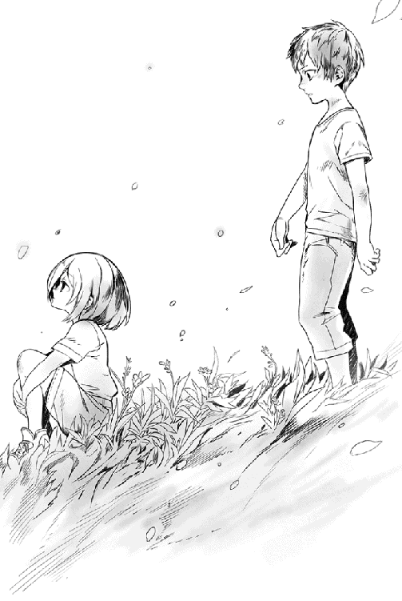
もちろん、妹を安心させる意味でも、ショウはそういう余計なセリフは控えた。
どうでもいいが、未だにこの子は戦闘スーツのままなのである。明日はザックにでも頼んで服を用意してもらう必要があるだろう。
「ところで、どうして俺を起こそうと思ったんだ？」
ふと気になって尋ねると、ユキナはなぜか恥ずかしそうに目を瞬いた。
「なんだよ、遠慮せずに言っていいんだぞ」
我ながら優しい声で促すと、ユキナはあどけない子供のように破顔する。
「うん！」
きらきら光る瞳でショウを見た。
「あのね、おしっこ」
「......は？」
意表を突かれ、ショウは素っ頓狂な声を上げた。
「だから、おしっこ！ 一人で行くの、こわいもの」
「お、俺が一緒に行く......のか？」
「いつも頼んでるよ、ユキナ。忘れたの？」
むしろ不思議そうな顔で小首を傾げ、ユキナは答えた。
言われてみれば、神威家に来た当初は一緒について行ってた気がするが。しかし......今のユキナとまた一緒に行くのか。
ショウは、人知れず戦慄した。
なにかこう......色んな意味でヤバい気がする。
階段を半ば下りた小さい踊り場で、息を潜めるようにしてユウリとロクサーヌが聞き耳を立てていた。
どちらが先に足を止めたのかは定かではないが、今となっては二人ともそんなことはどうでもよかった。
「これは......ちょっとまずいわ」
ロクサーヌが深刻そうな顔で囁く。
「血縁で結ばれた本当の妹ならともかく、そうじゃないんだし」
「素直で邪気がないだけに、かえって危ないです」
ユウリもまた、眉根を寄せて頷く。
「貴女より、よほど手強い相手ですね」
「どういう意味ですか、それはっ」
「静かに！」
声を荒げたロクサーヌの口を押さえ、ユウリは彼女を引きずるようにして階段を下りていく。屋根裏部屋で、ショウの足音がしたからだ。
「今宵はやむを得ないとして、今後は何とか考えないといけませんね」
もがくロクサーヌを楽々とあしらいつつ、ユウリは深刻そうな声音で呟いた。
☆
翌日以降もユキナは相変わらずで、ほぼショウにべったりついて離れないことが多かった。
どうもユキナの中ではジェイルをはじめ、外の仲間は全て「知らないおじさんとかおばさん達」という認識になっていて、おばさん扱いされたロクサーヌがむっとしたほどだ。
「ユキナだって、ロクサーヌと一つしか違わないはずではないですか！」と言いたいわけである。
しかしユキナの意識は遥か昔の幼女に戻ってしまっているので、「だって、大人の人はみんなそう見えるもの」と無邪気に述べている。
ショウとしては頭の痛い話である。
......トイレの件も、ユウリなどが「わたしがついていきますよ」と申し出てくれたのに、
ユキナ本人ががんとして首を縦に振らなかった。
「おにいちゃんがついて来てくれるからいらない」と、これまたすげない返事であり、この辺りの素っ気なさは、以前の妹と相通じるものがあるかもしれない。
いずれにせよ、ユキナにとっては夜に、ショウにおぶわれてトイレに連れて行ってもらうのが一種の楽しみになっているらしく、記憶が戻るまではいかんともし難いようである。
「君に甘えすぎな気もするけどね」
などと、打ち合わせで家を訪れたジェレミーは言ったものである。
ついでに、余計なセリフも言い添えてくれた。
「記憶さえ戻れば、彼女も戦力として期待できるんだけどねぇ」
「ユキナがこうなってるのは、何もユキナ自身のせいじゃない。あと、妹を戦わせるつもりは、金輪際ないぞ！」
とショウは他人に対してはあくまでもユキナを庇っている。
ただ......もちろんそんな風に偽りの日常が続いたのも、魔族の正規軍が魔界の帝都ヴァルマグロスを出た、という一報が入るまでだった。
万事に用意のいいショウは、またしても仲間内──特に、戦う術を持たない一般人の中から斥候を選んで放ち、ヴァルマグロスからこのソムニウムに至るまでの街道沿いを見張らせている。
その方がかえって目立たないと思ったからだ。その彼らからの報告で、日に日に正規軍の接近が判明し、すぐに想定される到着予想日が来てしまった。
ソムニウムに着いた初日以来、ショウ達の元には次々と人間の世界を取り戻そうとする同志が集まってはいたが、その数はウォーリア以外の一般市民を入れても、三千に届かない。
だが、敵の数は三千をやや超えているという。
しかも、魔将が二人も派遣されてきているという、おまけ付きだった。
......かつて一人で襲撃に来たエリーゼ（ユキナ）にさえ、ウォーリア達は敵わなかったのである。それが二人となると、もはや絶望的ではないか？ などと思うのが普通だろうし、実際にウォーリア以外の一般市民はそう言って肩を落とした。
しかし、あいにくウォーリア達に限っては、底抜けに明るかった。
毎日のように賭け試合で死線をくぐり抜けてきたせいか、この期に及んでも弱音を吐く者は一人もいなかったのである。
「なんとかなる！」
楽天家のデイルが拳を固めて吠えたし、貴公子然としたジェレミーも、「今回はショウも留守ってわけじゃないし、僕もそうそう油断はしないさ」とあえて強気の発言をした。
ショウにとって一番頼もしかったのは、しかしジェイルの一言だろう。
この魔王の長子は、大真面目な顔でショウを見やり、こう保証したのだ。
「君にはいろいろと借りがある。魔将のうち一人は、この僕が引き受けようじゃないか」
「俺は責任上、自分一人で魔将二人を分担する気でしたが」
ショウがためらいがちにそう言うと、珍しくジェイルが破顔して肩を叩いた。
「待ちたまえ。仮にも魔王の長子たる僕が参加する戦で、他人に全部手柄は譲れないさ。それじゃ、僕の立場がなくなるだろう？」
あるいはショウ達に対する気遣いかもしれないが、ジェイルはそう言ってくれた。
「わかりました。では、お互いに健闘を祈りますか」
「ふ......君の健闘なら祈っておこう」
ジェイルは余裕の表情でそんなことを言った。
以上の話を踏まえ、仲間を集めた最後の軍議で、ショウは皆に告げた。
「魔将のうち一人はジェイルが面倒見てくれるそうだ。ならば、後の一人は俺が引き受ける。みんなは残りを分担だな」
主だった数十人のウォーリアを集めた軍議であり、テーブルの席に座れない者は、壁際にずらりと並んでいる。
そんな熱気溢れる室内が、一斉にどよめいた。
「剛気だね。これで一気に戦況が楽になった」
ジェレミーが嬉しそうに言うと、たちまち大部屋の中が騒がしくなった。
「あたしも腕はちょっとしたモンなんだけどねぇ」
「待てや、おい。俺だって、元いたアンダープリズンじゃ、『秒殺のソニック』って異名があってだな──」
「無論、俺も手柄は狙ってるぜぇ。魔将は先に当たったヤツがもらうってことでいいんじゃないのかー」
いつぞやのダルトンが最後にニヤッと破顔したが、ショウはあくまで首を振った。
「元のアンダープリズンで一緒だったジェレミーは賛成してくれると思うが、あいつらの強さは半端じゃないんだ。ここは俺の顔を立てると思って、頼むよ」
さすがに平和主義のショウも、先の見えた勝負を誰かに譲る気は毛頭なかった。
ジェレミーやダルトンはもちろん、ゲームキャラみたいな異名の新参戦士にも死んで欲しくはないわけである。
「それともう一つ。今更言うまでもないが、俺の目的は魔族を滅ぼすことじゃない」
部屋の隅に集まる数名の魔族戦士をちらりと見やり、ショウは断言する。
「目的は、昔のように魔族と人間が共に暮らせる世界を取り戻すことだ。このことは、最初にはっきり言っておく」
ぐるりと室内を見渡したが、幸いにして、表立って異見を唱える者はいなかった。
ジェイルをはじめ、新たに仲間に加わった魔族の存在が大きいのかもしれない。
ウォーリアはからりとした性格の者が多く、自分達の懐に飛び込んで来た者は、たとえ元が敵であろうと、単純にそれだけの理由で憎むことはない。
ロクサーヌがたちまち馴染んでいるのも、ウォーリア達の豪放磊落な性格のお陰だろう。
毎日のように敵を変えて戦ってきた彼らだけに、「前に戦った以上、もう死ぬまで敵」などという狭量な考え方をする者は、そうそういないわけだ。
第一、それでは仲間内で上手くやっていくことすらできない。
......無論、これが一般市民となるとまた話は全然別であり、そちらのグループにどう納得してもらうか、それはこれからの課題だろう。
もっとも、今この場にいるウォーリア達とて、完全に納得したわけでもあるまい。
それはショウにもよくわかっている。
「俺が敵を攻め滅ぼすのではなく、共に暮らせる世界を目指すとぶち上げたのは、なにも味方に魔族がいるからだけが理由じゃない。以前の大戦は、どうも魔王の判断が最大の理由だったってことが、わかったからだ」
ショウはジェイルが推測した「陰で魔王を操る存在」のことは伏せ、ただ彼が聞いた魔王の開戦理由のみを一同に告げた。
「──そんな無茶な理由だからこそ、この戦いは魔族を滅ぼすのではなく、むしろ魔王ヴォルザードの過ちを正すためのものとすべきなんだ。とはいえ、残念ながらもはや大陸中を捜しても、まともな人間の軍隊は残っていない。しかし、剣を取って敵に立ち向かえる者なら、まだまだ残っている......それも、いかにも血の気が余ってそうなヤツらがな」
笑い声が弾けた室内をもう一度見渡し、ショウは力強く宣言した。
「言うまでもなく、それはここにいる俺達のことだ。アンダープリズンを脱出したことで、既に俺達は魔王の横暴に反抗してみせた。道は遠いかもしれないが、いつの日か魔王その人の胸ぐらを摑み、俺達の言い分を叩き付けるんだっ。人間は貴様に飼われるペットではないと、いつまでも地の底で震えはしないぞとっ、そう悟らせてやるんだ！ そのための最初の一歩が、この戦いになる」
そこで魔法力与の刀を抜き、頭上へ掲げる。
「敵に不足はないっ。俺達の手で歴史の流れを変えるぞ！」
『おぉーーーーーーーーっ！』
たちまち、安普請の壁が震えるような歓声が室内に広がる。
ウォーリア達は全員が武器を掲げ、一斉に歓声を上げていた。
翌日、最も近い街に放っていた斥候から、「正規軍接近！」の一報を受けたショウは、早くも街を出て、街の隣──つまり北側に位置するクロマツの森を背にするように布陣した。
城や砦などがあれば、そこに籠もって戦う手もあるのだが、あいにくソムニウムはあくまで廃棄された元信徒の街に過ぎず、戦うのに適していない。
囲まれて火でも放たれたら、それで終わりである。
ショウは既に、怪我や身体の不調のために今回は泣く泣く参戦を見合わせた女性のウォーリア仲間数名に頼み、ユキナと共に街の片隅に潜んでもらっている。
気は進まないが、妹は魔法で眠らせた上で。
そうでもしないと、ユキナはショウについてこようとするに決まっているからだ。さすがにそれはできないので、今回は留守番ということになる。
そして今、ショウは元ウォーリアや元市民を含めた仲間と共に、布陣している。
一応、その後も人数はポツポツと増え、今は戦える者全てをかき集めれば、どうにか魔族正規軍と同数に近いだろう。
ただ、その内の千数百名ほどは、アンダープリズンで戦いとは無縁の日々を送っていた一般人なので、本気でアテにするのは危険かもしれない。
ちなみに急遽招集されたこの反乱軍たるや、プロの兵士は一人もいない上に、いわゆる騎馬兵も皆無である。
全員歩兵であり、いみじくもショウが呟いた「百姓一揆みたいだな」と評するのがもっとも近いかもしれない。
その急造の反逆者達の先頭で、ショウは仲間達と静かに時を待っていた。
「必殺・流言飛語の作戦、上手くいってるかな？」
ふと呟くと、そばにいたジェレミーが答えた。
「心配しなくていい。必殺かどうかは知らないけど、斥候からの報告じゃ、予想以上に上手くいってるそうだ」
「そうか！」
ちょっと明るい気分になり、ショウは破顔した。
流言飛語の作戦と言うのは、ショウが考案した作戦を差す。
やり方としては、魔族軍が侵攻してくるルート沿いの街に大勢の味方を潜入させ、以下の話を噂として広めてもらったのだ。
すなわち、「反乱のために集まったウォーリア共は、魔王が本気で討伐部隊を出したと聞き、震え上がっている」と。
この、いわば諜報活動に当たる作戦は、物好きにもショウ達の反乱軍に身を投じた、元ブルークラスの市民達に特に頼んだ。
彼らはアンダープリズンで生活していたわけじゃなく、魔族達の保護を受けて近隣の街や村で暮らしていた比較的裕福な人間達であり、そこを見込んでショウが依頼した。
元囚人よりも、流す噂に説得力が生じるからだ。
そんな彼らを集め、ショウは大真面目な顔でこう言ったものである。
「この噂は、半ばはホントだ。実際、他のイケイケの仲間はともかく、平和主義の俺は大いに不安なんでね」
......ショウの本音は置いて、他にも「ジェイルとロクサーヌの軍勢が彼らに合流しようと一度は街を訪れたが、あまりにも人間達が腰砕けのため、呆れて街を離れてしまった」などの流言も、くどいほど広めてくれるように頼んでいる。
事実、この作戦の後、ジェイル達には間違っても街中をうろつかないように頼んでいる。敵が本気にしてくれないと困るのだ。
「無冠の帝王なんて呼ばれるくらいだから、さぞかしショウは戦いが好きなんだろうと当初は思いましたのに、実際は逆の印象ばかりですねぇ」
早くも鎧姿にチェンジしたロクサーヌが、楽しそうに目を細めて言う。
どうでもいいが、この女性は戦う気満々らしい。今更止めても無駄なので、ショウも諦めている。
「何度も何度も言うけど、俺は平和主義なんだって！ 今回だって、戦意はちゃんとあるけど、ホントはダッシュでどっか逃げたいとまだ考えてるほどだ」
堂々と胸を張って言うと、同じく隣にいたユウリが顔中に笑みを広げた。もちろん彼女は、完全に本気のセリフだとわかっているのだ。
「......それでもついててくれるんだから、有り難い話だ」
ショウがしみじみと言うと、ロクサーヌに頬の肉を摘まれて引っ張られた。
「いたたっ」
「ロクサーヌと話してる時に、妙な以心伝心でユウリさんと話さないでくださいな！」
「い、今のがそうだってよくわかったな！」
いささかぎょっとしてショウが返すと、「そりゃわかりますよっ」とまた怒られてしまう。どうでもいいが、このやりとりを見ていた周囲の仲間がどっと沸き、ショウはもう色んな意味で参った。
「はっはっは！」
「いやぁ、帝王も形無しだなっ」
「きゃははっ。あたしが思うに、将来は尻に敷かれると見たね!?」
「戦の前だとは思えん、ほのぼのした空気じゃ」
「くそっ、むかつく！（デイル）」
余りにもみんながゲラゲラ笑いやがるので、「おまえら少しは緊張しろっ」と怒鳴りかけたが......結局、ショウは釣られたように自分も笑った。一つには、ロクサーヌとユウリが一緒に笑っていたためだが──しかし、その笑みは次の瞬間に破られた。
「見えたぞ！」
前方から見えた、黒い点のような敵の騎兵を指差す。
二騎いたが、おそらくあれが魔将の二人だろう。そしてその後ろからは、続々と正規兵達が続いていた。
もちろんこの時、正規軍の側からもショウ達を観察している。
魔将のみが纏うことを許された白い戦闘スーツに、同じく白いマントを着けたベルザーグは、馬上からショウ達を遠望して首を傾げた。
「途中の街で聞いた噂は本当ですかね？ ジェイル様や他の魔族兵士がいる気配がない。あそこに見えるのは人間と......あとは、ロクサーヌ様のみです」
「驚くには当たらんな」
同行したもう一人の魔将であるリランデルが、不満そうに鼻を鳴らす。
魔将たる彼らのみはヘルムを着けず、素顔をそのまま晒している。
マントが黒いという以外はベルザーグと同じく魔将としての戦闘スーツを纏っていたが、いかにも気乗り薄な様子が見られた。
久しぶりの戦なので、情報収集がてら行く先々の街で反乱軍の噂を仕入れたのに、何一つとして強敵であることを示す証拠は見つからず、むしろゴミに等しい痩せ犬のような軍勢である、という話ばかり聞かされたからだ。
「大いなる君のご命令だから同行したが、本来、このような戦いに魔将が二人は過分すぎるだろう。ジェイル様が部隊を引き連れて合流したというのが唯一の懸念だったが、どうやらあのお方もヤツらを見捨てたようだ」
残念なのか、忌々しそうに唇を歪める。
「雑兵に等しい、あの統一感のない部隊を見れば、無理もなかろうが」
「私もそう思いますが──」
ベルザーグは一応、賛同だけはしたが、それでも後に続けた。
「むしろ、行軍途中で聞き込んだ話があまりにもヤツらの悪口ばかりなんで、少々、疑っています。......もしや、ある種の策ではありませんか？」
「考えすぎだ、ベルザーグ」
リランデルはあっさりと一蹴してくれた。
「その種の策は、実際の部隊が強敵であって初めて成り立つ。しかし見よ、あのボロを纏ったごった煮のような集団を。どこをどう見ても強敵には見えんわ」
魔族には珍しい口髭をしごき、つまらなそうに吐き捨てた。
ベルザーグと違い、戦場でつけた傷だらけの顔をしたリランデルは、いかにも歴戦の風格漂う魔将であり、まだ魔将としての経験が浅いベルザーグを、ともすれば軽んじる傾向がある。
ベルザーグ本人は「実力にはさほど差はないどころか、むしろ自分の方が上だ」と密かに思っているが、年齢が倍以上違うリランデルは、行軍の間中、傲慢な態度を崩そうとしなかった。ベルザーグが女性のように優しい容貌をしていることも、あざけりの一つの原因かもしれない。
今もリランデルは、ひとしきり前方を睨み、既定の事実を申し渡すように述べた。
「先陣は俺の部隊が引き受ける。......異論はあるまいな？」
押しつけるような声であり、手柄を独り占めしようとする意図が、あからさまだった。
しかし、ベルザーグはこの時、己の嫌な予感を信じた。
先輩格の彼があえて危険を犯したいというのなら、むしろ喜んで譲ってやればよい。
素早くそう思い、笑顔で低頭しておく。
「どうぞ、リランデル。ただし、ロクサーヌ様を傷つけないように願いたい」
「そのくらい、お主に言われなくともわかっておる！」
気の短いリランデルは、たちまち不機嫌な物言いをした。
「ならば、どうぞ。私は貴方の後ろから、ゆるゆると攻めさせて頂こう」
「ふん。俺の後から来ても、獲物などは残ってないぞ」
リランデルはそううそぶき、背後の部下達に剣を掲げて合図した。
「全軍突撃だっ。俺に続けえっ」
喊声がどよめきとなって広がり、一騎駆けするリランデルの後ろを、漆黒の歩兵が従って駆けて行く。数は、およそ半数に及ぶ千五百であり、大抵の敵はこれで踏みつぶせるはずだった。
士気も高いし、前方の敵は早速にして及び腰になったようにざわめいているし、さすがのベルザーグも「これは、全てが私の思い過ごしかもしれぬな」と思ったほどだった。
敵の半数ほどがいきなり突撃を始めた時、ショウは自分の策が上手くいったことを確信した。
この際はさらに相手にナメてもらうため、皆に向かって嬉しそうに叫んでおく。
「よし、今のところは順調だっ。駄目押しに、みんなもっと慌てふためき、恐れてる様を見せつけろっ」
「どうやって？」
などと、怜悧な巨乳美人以外の何者をも恐れぬデイルが堂々と吐かしたので、ショウは渋面で教えてやる。
「悲鳴を上げて、怖そうなふりをするんだよっ。チビりそうな顔で後退して遁走する素振りを見せるともっといい！ それも無理なら、ユウリにどやされたと思えっ」
「な、なんだよ、それっ」
デイルは真っ赤になって喚き、周囲がどっと沸きそうになった。
それでもショウが睨み渡すと、やっと女性のウォーリアを皮切りに、嬉しそうな悲鳴の渦が沸き起こる。
「きゃぁあああああああ、殺されるぅううううっ」
「だからあたいは、嫌だって言ったんだよぉお」
「戦の前に、男になっておけばよかった！」
「怖いよぉーーーーっ」
「まだ彼女もいないのに、死ねるかクソがああっ（デイル）」
元気に喚きながら、みんな足を踏み鳴らしてわざとらしくずざざっと後退していく。
......それはいいのだが、大根役者ですら青ざめる拙い素人演技に、ショウは血の気が引く思いがした。
「お、おまえら......真剣にやらんかーーっ」
小声で怒鳴り散らしたが、追いつかなかった。
頭が痛くなったが、意外にも接近中の敵にはそれなりの効果があったらしい。
魔将らしき蛮声が、「敵は既に怯んでおるぞーっ」と叫んでいたからだ。実に驕り高ぶった声音で、士気を鼓舞するためとはとても思えなかった。
あれは、心底そう思い込んでる口調だ。
「よしっ。後はわかるな？」
機嫌を直したショウが皆に申し渡すと、皆こっそり頷いた。
それぞれ半ば逃げる様子を見せつつも、武器だけは構えておく。さすがに最初から逃げるのはまずい。
怯えつつも一当たりはしてみた、というところは見せねばならないだろう。
「ロクサーヌも死ぬなよっ」
最後にショウは、美しい白銀の鎧姿に変化した彼女に声をかけたが......かえって怒られてしまった。
「どうしてユウリさんには言わなくて、ロクサーヌには言うのですっ」
「そこ、怒るところかぁ？」
理不尽な言い分にショウは眉をひそめたが、「ショウっ」とユウリに言われ、慌てて前を向き直った。
魔将の一人は、もうすぐそこまで来ていた。
「我が名はリランデルだ！ 小僧っ、せめて俺の剣にかかって死ぬがよいっ」
「いや、名誉の戦死とか趣味じゃないんでっ」
速攻で言い返すと、豪快に振られた剣を慌てて避ける。
ショウが最初の一撃を避けた途端、仲間達もわっとばかりに周囲に散り、それぞれ敵を迎え撃つべく武器を構えた。
「きゃあああ、敵が来ちゃったよぉおお」
「おんぎゃああーーーっ」
「かーちゃん！」
......あくまでも、逃げ腰の姿勢を強調しつつ。
その直後、リランデル配下の兵士達もこちらの先陣と激突し、周囲にはたちまち剣撃の音が満ちた。
リランデルは指揮官のショウを己の敵と定めたのか、未練なく乗ってきた馬を降り、本格的に襲いかかってきた。
「生意気に魔剣などを使うようだが、逃げるだけでは俺は倒せんぞっ」
叱声と共にリランデルの剣が豪快に振り下ろされる。
この混戦の中、風を切る音が本当に耳元で聞こえたほどの、力任せの一撃だった。
「うおっ」
わざとらしく声を上げつつ、ショウは横っ飛びにコレを避ける。
それでも内心で、「そっちこそ、力任せに来るだけじゃ、斬り合いに慣れた俺は倒せんですぜ？」と皮肉を呟く余裕があったのだが──。
あにはからんや、豪快に空振りした直後、相手の剣がいきなり斜め下方から逆袈裟斬りにショウの胴体を狙い、さすがのショウもこれは後ろに大きく跳んで避けた。
しかも体勢が崩れていたので無理に着地せず、そのまま背中から後転してさっと起き上がろうとしたのだが、相手は再度、間合いに躍り込んで来ており、攻撃態勢に入っている。
危うく頭を割られそうになったショウは慌てて刀で受けた。
歪んだ嫌な音がして、凄まじいパワーに膝が折れそうになった。これもユキナの時と同じで、さすがは魔将と言うべきだろう。
「ば、馬鹿力は、さすがに人間とはレベルが違うなぁ」
「ふん？ 貴様、どうやらお飾りだけの指揮官というわけでもなさそうだな」
「いやいや、そりゃ買いかぶりってもんだよっ」
わざと力を抜き、相手がよろめいた隙に斬撃を浴びせようとしたが、これもあっさり避けられてしまう。
ショウはわざと背を向けて逃げ出した。
「気をつけろっ。やはり手強いぞ！」
打ち合わせ通りのセリフを述べた瞬間、仲間達も一斉にさらなる怯懦を示し、どっと崩れる兆候を見せ始めた。
「待てっ。指揮官のくせに逃げるつもりか！」
疾風のごとく追い縋るリランデルの殺気を首筋に感じ、ショウはやむなく素早く振り返ってまた剣撃を受けた。
そのまま足を止め、二合三合と斬り合う。
......しばらく斬り合ってわかった。こいつは確かに強いが、少なくともユキナほどのセンスはない──と思う。
そう思い定めたショウは、いかにも斬撃を受ける度にわざとらしくよろめき、僅かでも隙を見つければすぐさま後退していく。もちろん、完全に頭に血が上ったリランデルは、面白いように引っかかって追いかけてきた。
「待てっ。誰も手を出すなよ！ ヤツは俺の獲物だっ」
配下達にわざわざ大声で怒鳴り、リランデルはひたすらショウを追う。
リランデルに同調して突撃する愚を犯さず、ベルザーグは配下共々、リランデルの敵陣突入とそれに伴う戦闘を見ている。
......観察していて少々、妙なところに気付いた。
人間共は確かにやかましく騒ぎ立て、怯えを露わにしているが......どうしてどうして、魔族の正規軍を相手に善戦している。
いや、むしろそれぞれ敵を迎え撃った途端、実によい戦いを演じている気がしてならない。実際、少し見ていただけでも、味方が倒され、大地に転がるのを、何度も見た。
そのくせ、部隊そのものは徐々に崩れ始め、背後の森の方へ退いていくのだ。
普通は、夢中で森に逃げ込み、敵を振り切るつもりだろうと見るのが当然だが......部隊全体が一つの意思を持つように同じ方向へ後退していくのが解せない。
「妙だな」
とベルザーグはついに声に出してしまった。
反乱軍はしばらく戦った後に総崩れの有様になり、今やはっきりと北方に広がる森の方へ敗走し始めている。
「我々も突撃しないのですか？」
じれた隊長格の兵士が、ベルザーグの横まで来て彼を見上げた。
フェイスガードから覗く目に、微かな非難が窺える。どうやら疑いの目であの戦闘を見ているのは、自分だけらしい。
確かに、まだ罠の兆候も見えないし、疑いだけで終始戦わないのはまずいかもしれない。
ベルザーグは密かに息を吐き、命じた。
「よかろう、我々も突撃だ。──ただし、深追いはするなよ？ 特に、森の奥深くまで追う必要はないぞっ」
最後のそう警告はしたものの、これは我ながら無理な注文かもしれない。
敗走する敵を見れば、追いたくなるのが当然だからだ。
なぜか動かなかったベルザーグの部隊も突撃を開始した時、ショウは丁度、仲間と共に森の中へ逃げ込む寸前だった。
ようやく残りの敵部隊も動いてくれて、正直、ほっとした。
せめて、敵の全軍を森の中に誘い込まねば、策の意味がない。
はしっこく、森の奥へ奥へと逃れつつ、ショウは人知れずニヤッとした。
「ええい、戦いの最中に何をきょろきょろしているかあっ」
クロマツの間を縫うように走るショウに、またしてもリランデルが襲いかかってきた。自分の斬撃が一向にショウを捉えられないので、そろそろ苛々しているらしい。
ショウがいつの間にか、仲間達から遠ざかるように森の中を逃げているのも、特に気付いてないようだった。
ショウは敵の非難など無視して、俊足にものを言わせて、しばらく逃げることに専念した。それも、なるべくこのおっさんを味方から引き離すように、一人だけどんどん戦列を離れていく。
「おのれっ、どこまで命惜しむ気か！」
また背後で殺気が迸り、ショウは横っ飛びに避ける。
いつのまにか、だいぶ奥まで来たようだ。
「当たらないのは、未熟な証拠なんだがなっ」
「なに!?」
「──デビジョン！」
相手の罵声は無視し、ショウは振り向きざまにいきなり短縮呪文を叫び、愛刀を本来の二刀に戻す。
「なにっ!?」
敵がやや警戒したように間合いの外で足を止めたが、ショウはお構いなしに十字の形に刀を振り上げ、渾身の力で振り下ろしつつ、衝撃波を放った。
「妹より全然ちょろいよ、あんたっ──クロスブレード!!」
「ちっ」
さすがに魔将だけあって、寸前で気付いて飛び退こうとしたが、あいにく遠隔攻撃であるこの必殺剣を避けるのには無理がある。シューティングスターなどというとんでもない術で対抗したユキナでさえ、完全に避けることはできなかったのだ。
ユキナより遥かに動きが遅い彼は、当然、避けきれなかった。飛び退く最中、空中で二筋の光刃をモロに受け、戦闘スーツが引き裂かれて鮮血が迸った。
「ぐっ」
重々しい音を立て、木の根が浮いた大地に転がる。
さすがにタフな魔将だけあって即死はしなかったが、ショウは既に怪鳥のように宙を舞い、彼に向かってまた二刀を振り上げていた。
「もう一度、どうだっ」
再度、空中でクロスブレードを放つ。
弱々しく起き上がろうとしていたリランデルは、その瞬間、驚愕したように目を見開いていた。
「馬鹿なっ」
結局、それが最後の言葉になり、次の瞬間に光刃に首筋を断ち割られ、即死した。
痙攣するように巨体が動いたが、それもすぐに収まってしまう。
「ふうっ」
周囲を確かめ、計算通りにちょうど木々に阻まれ、魔族の兵士達からは死角の位置でリランデルが倒れているのを確認し、ショウは再び走り始めた。
今度はわざと追撃してきた魔族兵士の目に入るように、仲間達の後を追う。
「指揮官の男がいたぞっ」
「追え、逃がすな！」
たちまち、新たな魔族の兵士達が追い縋ってきた。
（その調子だ、その調子......どんどん来てくれ）
ショウはわざとらしく「うわあっ、退却だぁ！」と叫びつつ、風のように駆けて行く。
しかし、すぐ先の木陰でユウリと完全武装のロクサーヌが二人揃って立っていて、危うくぶつかりそうになった。
『ショウ！』
二人して嬉しそうに叫ぶ。
「こんなトコでなにしてるんだ？」
急停止して問うと、膨れっ面のロクサーヌにオウム返しに言われた。
「こんなトコでなにしてるんだ？ もちろん、ショウを待っていたに決まってます。一番危ない最後尾にいたんですもの。心配じゃありませんか」
珍しく、うんうんとユウリも賛同して頷いていた。
「そ、そうか。でも、早く撤退してくれ。すぐに敵が追いつくぞっ」
言ってるそばから、「あそこだっ」と追撃中の魔族兵士達が叫び、三人は顔を見合わせて慌てて走り出した。
「逃げずに、そろそろ逆襲しては？」
軽々と走りながらユウリが提案したが、ショウは昼なお暗いクロマツの森を見渡し、首を振った。
「そりゃ、そうするつもりだが、せめて打ち合わせ通りに次の段階に入らないとっ。そろそろだと思うんだが、まさかジェイルは気が変わったわけじゃないだろうな」
ショウが危惧を表明すると、ロクサーヌがきっぱりと言った。
「兄上はそんな人じゃありません。必ず、予定通りに行動に出ます」
あたかも、（彼が言うところの）愛する妹に応えるかのように、そこでいきなり新たな喊声が響いた。
「今だ、全軍かかれえっ」
紛うことなくジェイルの声であり、彼の合図が森の中に響き渡った途端、時を待っていたロクサーヌの私兵達が一斉に鬨の声を上げた。
『ロクサーヌ様のためにっ』
途端に、猟犬のごとく追い縋っていた魔族達が、狼狽の声を上げた。
「ふ、伏兵だっ」
「しかし、あの髪の色を見ろ。目も赤いぞっ。同族じゃないのか！」
「どうなってる!?」
戦闘スーツこそ纏ってないが、どう見ても同族の連中にいきなり襲われたせいか、敵はショウの予想以上に狼狽しきった声だった。
人間が使うレザーアーマーを装着した魔族兵士達であり、軍装以外は完全に魔族の特徴を備えている。うろたえるなという方が難しいだろう。
現に、もはや誰が敵かわからないまま、追撃してきた兵士は次々に討ち取られている。
まずショウ達がわざと敗走して敵軍を森の中へ誘い込み、伏兵となって森に潜んでいた味方のジェイル達が、頃合いを見て敵兵に襲いかかる──ショウの策は見事に功を奏していた。
「よしっ」
敵魔族軍の狼狽ぶりを肌で感じたショウは、その場で偽りの敗走を止め、声も枯れよとばかりに叫んだ。
「全軍、反転だ。逃げるのはもういいっ。総反撃だぞーーっ」
その刹那、待ちに待っていた合図を聞いた仲間達が、天を震わせるような雄叫びを上げた。
『うぉおおおおおしゃあああっ』
勝ち気なウォーリアにあるまじく、徹底して逃げに徹していてストレスが溜まりまくっていたのだろう。
どこにこんなにいたんだ!? とショウですら思うような人数が奥の森から次々と駆けて来て、右往左往している魔族兵士に襲いかかる。
もちろん、あらかじめ打ち合わせた通り、戦闘スーツ姿の敵のみを狙っている。
「調子に乗りくさりやがってぇええ、死ねえっ」
「一人も生かして返すなっ」
「ウォーリアを怒らせるとどうなるか思い知らせてやれえ！」
潜んでいた伏兵に左右から襲われ、さらに追撃していたはずの敵のウォーリアが反転して攻勢に出る──このタイミングを合わせた動きに、敵兵は面白いように浮き足立ち、次々と刃に倒れていく。
ショウも二刀を振りかざし、敵のまっただ中で暴れまくっていた。
「戦いは俺達の勝ちだぞっ。みんな、一歩も退くな！」
味方を鼓舞するために叫ぶと、この勢いを決定的なものにすべく、あえて似合わない攻勢に出た。
すなわち、後ろに固まっていた敵兵めがけて、いきなり禁忌魔法を放ったのだ。
「エクスティンクション！」
言下に、ショウから放射線状に広がった衝撃波が十名ほどを襲い、彼らは剣を構えた姿勢のまま、その場にがくんと止まってしまう。
何が起こったのか、見ていた者には想像すらできなかったはずだ。
効果範囲にいた敵兵達は全員、一瞬で体内組織を破壊し尽くされ、その場で息絶えてしまっている。驚いた敵味方が見守る中、彼らの全員が驚愕の表情を張り付かせ、ゆっくりとその場に頽れた。
確かめるまでもなく、全員が即死しているのがわかった。
例外なく僅かに鼻血を洩らしているが、見た目の変化と言えばそれくらいである。
「おぉーーっ、すっげえ！」
「ショウがやったぞ、まとめて叩きのめしたっ」
一拍置いて仲間が大歓声を上げ、益々勢いづいて敵兵へ向かっていく。
対して、眼前でとんでもない魔法を見せられた敵兵達は、これがトドメとなって完全に崩れた。
誇り高い魔族兵士が次々に背を向け、敗走して行く。
ただし......ショウ自身は、皆から見えないようにクロマツの幹にもたれ、口元を手で覆っていた。その隙間から、鮮血が滴っている。
ちなみに、放たれた衝撃波の効果範囲にあったそのクロマツの幹も......もはやドス黒く変色し、壊死しているのがわかった。
「ショウっ」
「どうしたんです!?」
自分達も追撃に移ろうとしていたユウリとロクサーヌが、慌てて駆け寄ってきた。
「だ、大丈夫だ」
急いでショウは手を上げる。
「魔法の反動が出ただけだ......慣れてないからさ、まだ」
しかし、その手は細かく震えていた。
（くそっ。俺はなんて力を手に入れちまったんだ。新しく覚えた禁忌魔法は、どう考えても諸刃の剣だぞっ）
先走る部下達の突撃に任せ、自らは最後に森に入ってきたベルザーグは、ショウ達とジェイル率いる魔族の私兵が反転攻勢に出た時、誰よりも早く事態を見極めていた。
というより、ジェイルの声がした時点で、もはやこれが罠だと悟っていた。
「だから、あれほど言ったのだ！」
思わず愚痴が洩れたが、今更である。
「無理な急追はやめて、全軍、一旦森から出ろ！」
大声で指示を飛ばし、前へ駆ける。さすがに自分が率先して逃げる気はない。撤退するにしても、自軍をまとめてからである。
どうでもいいが、真っ先に飛び込んだ粗忽者のリランデルは、どうなったのだろうか。途中から声もしなくなったが。
ベルザーグは嫌な予感に苛まれ、また叫んだ。
「一時、撤退だ！ 聞こえるかっ。全軍、森から──むっ」
微かな気配を感じた途端、いきなりその場から跳んだ。
直感に従った故だが、お陰で助かったようなものだ。
眉をひそめて見れば、自分が今まで立っていた場所のクロマツに、何かがきらりと光るのが見えた......ほんの一瞬だけ。
もうそれだけでベルザーグは、今の気配が紛れもなく自分を殺しに来た相手だとわかった。もしもよくよくクロマツを観察する機会があれば、光ったそれは目に見えないほどの細い細い針であるとわかっただろう。
あいにく、もう証拠も残ってないが。
頭上を折り重なるように茂る枝から、たまたま隙間を通るように日光が差していなければ、用心深い自分ですら「あの針」を見つけられなかったはずだ。
当然、もしあれが自分に刺さっていたら、もはや息の根を止められていたはず。
そして、こんな恐ろしい術を使う相手は、ベルザーグの知る限り一人しかいない。
「ファントム・ニードル......ジェイル様か!?」
あたかも彼に応えるように、文字通りジェイルが近くのクロマツの陰からゆらりと姿を現した。
戦闘スーツなどという野暮なものは身に纏わず、銀糸の刺繍で飾られた上品な黒いスーツ姿だった。帝都で見るのと、なんら変わらない姿である。
「さすがに魔将と言うべきかな？」
ジェイルは感じよく微笑む。
「まぐれとは言え、僕の初手を避けたのは立派なものだ。ここ数百年で数えるほどもいないからね」
「あ、貴方は......大いなる君の後継者でありながら、魔族を裏切るおつもりか」
意図せずしてじりじりと下がりつつ、ベルザーグは詰問する。
いかに彼といえど、魔王の長子を相手にして勝てるとは自惚れていない。
「なかなか耳に痛い言葉だが、まああえて返事をするなら......そう、イエスさ」
ジェイルは優雅に肩をすくめ、一歩を踏み出す。
右手を、やや持ち上げつつあり、ベルザーグはその動きを注視した。
「父君たる大いなる君も、ですか？ 魔王を敵に回しては、とても勝てませんぞっ」
「かもしれないね」
ジェイルは怒る気配も見せず、代わりにまた一歩を踏み出す。
汗まみれのベルザーグを見て、あたかも楽しんでいるように見えた。
「だが、勝機が乏しくとも、戦うしかない場合もある。僕の場合、それは妹のロクサーヌのためということになるかな」
囁くような声で述べた瞬間、ジェイルの笑みは跡形もなく消えた。
憎悪に染まった真紅の瞳が、呆然としたベルザーグを睨め付ける。途端に、彼の右手が持ち上がり、ベルザーグを指差した。
「貴様達は、妹を獲物のように追い立てようとしたっ。これが許せると思うか！」
「お待ちをっ！」
叫びはしたものの、ベルザーグは既に絶望的に出遅れているのを悟っていた。腕の動きは単なる発動の仕草であり、やっかいなことにファントム・ニードルのコントロール自体は、ジェイルの思念で行われている。
（しかし、せめてさっきのように避けられたらっ）
背後へ跳んだベルザーグはとっさに日差しの方を見た。
そこに、殺到してくる無数の輝きを見た途端、絶望的な気分になった。とても、避けきれる数ではない！
「ならば、マジックウォールだ！」
声を放つと同時に魔力を高め、魔法防壁の盾を全包囲に展開する。
だがしかし──まるで薄紙を貫くように、見えない針が全ての盾を突破してきた。
「魔法の盾では、絶望的な力量の差はどうにもならないさ」
静かにジェイルが首を振ったが、もはや倒れ伏したベルザーグには聞こえていなかった。
全身にハリネズミのごとく針が刺さっていたが、それもすぐに幻のごとく消えてしまう。
針そのものもジェイルの魔力が生み出した半透明の武器に過ぎず、役目を果たせば消失し、なんの証拠も残らないのだ。
「さて、これで我が父を本格的に敵に回したな」
ジェイルはぽつんと独白する。
「父の背後に何者かがいる、という僕の勘が間違っていれば、取り返しがつかない事態だが──真実はどうかね？」
妹の元へ戻るべく、ゆっくりと歩き出す。
ウォーリア達が完全に魔族兵士を叩きのめしたらしく、森の奥から大歓声が聞こえてきた。
終章 魔王の怒り
開戦前は不安も多かったが、結果的には、常勝軍に等しかった魔族軍の完敗という形で戦は終わった。
しかも、大戦中は一度も倒すことができなかった魔将を二人も倒したという、予想以上の大勝利だったのだ。
森から出てきた全員が、吠えるような声で歓声を上げたのも当然だと言えよう。
しかも、誰からともなくショウの名を呼び始め、周囲を埋め尽くすような仲間達が全員、ショウの名を絶叫調で叫び始めたりした。
気まずい思いは拭えなかったが、ショウも手を挙げて応じ、皆の歓声に応えている。
ただ......他の仲間達のように大声で喜びを露わにしなかったのは、ショウ自身、本番はこれからだと悟っていたからだ。
今までの魔族は明らかにこちらをナメていた......それは間違いない。
しかし、ここまで鮮やかな勝利を飾ってしまうと、次はそうは行くまい。
「魔王の胸ぐらを摑むための、まずは第一歩かな？」
まるでショウの考えを読んだかのように、上着のみを脱いだジェレミーが寄ってきて、囁いた。
防具すら着けないのはショウと同じだが、こちらは相変わらず、これから舞踏会に出てもおかしくないような上品さが漂っている。
「まぁな」
ショウは肩をすくめてやる。
「しかし、こりゃ後が怖くなるぞ......俺達の親愛なる魔王も、さぞかし怒るだろうな」
「かもしれない。でも、今は素直に喜ぼうじゃないか、ショウ」
ジェレミーは悪戯っぽく笑い、なぜかショウの腕を摑んだ。
「新たなるヒーローの初陣は、見事に快勝だったんだ。心配したり策を練ったりするのは、この後でいいさ」
「いや、俺は──おいっ」
ジェレミーの馬鹿が、興行主がアリーナの試合でやるように、ショウの腕を持ち上げやがったのだ。
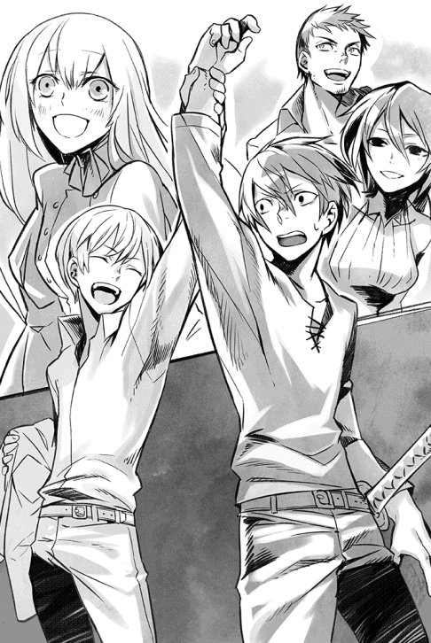
さすがにショウも咎め立てしそうになったのだが......ロクサーヌやユウリ、それに他の仲間の全員が笑顔で駆け寄ってくるのを見て、結局はジェレミーの好きなようにやらせた。
こいつの言うことにも、一理はあるかもしれないと思ったからだ。
確かに......今ぐらいは皆で喜びを分かち合ってもよかろう。
ユウリを押しのけるようにして胸に飛び込んできたロクサーヌを思わず抱きとめ、ショウはそんなことを考えていた。
☆
ショウの危惧は、予想以上のスピードで現実のものとなっていた。
魔族軍敗戦の報は、生き残りの魔族兵士によって、翌日には早くも魔王本人の耳に届いていたからだ。
魔族のみに伝わる、連絡用の魔法陣によって戦の詳細を知らされた魔王ヴォルザードは、謁見の間に直ちに諸将を集め、こう宣言した。
「人間達の愚かな反乱を叩き潰す！」
集まった十名の魔将以下、大勢の指揮官達がこの場に片膝をついていたが、魔王の真紅の瞳を見て、例外なく目を伏せた。
剛胆な魔将やその他の戦士と言えども、恐れることはある。今のヴォルザードの瞳を覗き込んで平然と構えていられる者は、あいにくこの城にはいない。
「ヤツらが増長したお陰で、今や大陸中のアンダープリズンに反乱騒動が起きている。まずはこれを鎮圧せねばならぬが、ショウと予の息子については、余人には任せない」
宣言した途端、そばに控えていた赤毛のクリスタリカが、わざとらしく目を見開いた。
「......と仰いますと、まさかお父様が自ら？」
「そうだ。予が直々に、ショウと不肖の息子を叩く」
謁見の間に静かなどよめきが広がった。
自らが動くと聞いて、全員が驚いたのだ。大戦中でさえ、魔王自らが戦場に立つことなど、滅多になかったのである。
「そこまでする必要がありましょうか？ 娘のあたしに任せてくだされば──」
「ならばおまえも同行すればよかろう」
魔王は素っ気なくクリスタリカのセリフを遮った。
「予と共に戦うがよいぞ」
話はこれまでとばかりに、魔王ヴォルザードは玉座から立ってマントを捌き、諸将に告げた。
「他の者は、それぞれのアンダープリズンを鎮圧せよっ。よいな！」
肺腑を抉るような鋭い声に、片膝をついた諸将はさらに低頭した。
『ご命令通りに！』
声を合わせて応じる彼らを見て、クリスタリカのみがこっそり唇を歪めている。
その彼女もまた、自分の父たる魔王から皮肉な横目で見られていることに、気付いてはいなかった。
無事にショウの二巻を出すことができました。
ありがとうございます。
剣と魔法のファンタジーを書いていていつも思うんですが、魔法の発動って、結局はオーソドックスな、あるいは昔から考えられていた「呪文→魔法発動」というパターンが、一番わかりやすくていいですね。
一応、魔法発動のパターンだけなら、色んな新しい方法があると思うし、別に呪文じゃなくて何かしらの器具とか道具を使ってもいいと思うんですよ。例えば、専用のガンを発動の媒体にして、弾丸に当たるエレメントを魔法のネタにする、みたいな。今、三秒で考えたので、どうせどこかで使われているでしょうけど、そんなやり方もアリだろうなと。
ただ、その時に「で、それは呪文を使うパターンと比べて、果たしてどうか!?」と心の中でとくと考えた時──やっぱり、「あ、呪文唱える方が、明らかにわかりやすくていいな。却下」となってしまうわけです（あくまで私の場合です）。
昔ながらの方法がいつまでも廃れないのは、案外、私と同じように思う書き手さんが多数を占めるためかもしれません。
そして主人公......今回のショウは、どう考えても凄まじい力を持っているくせに、常に戦いを嫌って避けようとする人です。
故あってロンザリア世界に来てから、ずっと戦士として生計を立てていたくせに、誰よりも戦士らしくない人なのですね。
にも関わらず、結局彼は仲間や妹のために戦う道を歩みことになるわけです。
しかも、今や避けられない大きな戦いの渦に巻き込まれつつあり、ショウもかつてのように争いを避けてばかりもいられなくなっています。
戦う道を選んだショウが、これからどのような結末を迎えるのか、最後までお付き合いくださると嬉しいです。
この本を出すに辺り、ご助力をくださった全ての方達にお礼を申し上げます。
最後はもちろん、この本を手にしてくださったあなたに、精一杯の感謝を。
吉野 匠 拝
著者プロフィール
吉野 匠
Yoshino Takumi
シリーズ累計115万部を突破した『レイン』（アルファポリス）を筆頭に、『ユート 拉致から始まる異世界軍師』（このライトノベルがすごい！文庫）、『アヴァロン42』（ぽにきゃんＢＯＯＫＳ）等、幅広い作品で活躍中。
ＨＰ「小説を書こう！」
ショウⅡ ─反逆のその先へ─
2015年２月１日発行 ver.1.0
著 者 吉野 匠
発行所 TOブックス
〒150-0011 東京都渋谷区東1-32-12
渋谷プロパティータワー13階
03-6427-9625（編集）
0120-933-772（営業フリーダイヤル）
Ⓒ2015 Takumi Yoshino
※無断で複製・複写・データ配信などをすることは、かたくお断りいたします。
本電子書籍は下記にもとづいて制作しました
ショウⅡ ─反逆のその先へ─
発行日 2014年５月25日 発行
本作品の全部または一部を無断で複製、転載、配信、送信したり、ホームぺージ上に転載することを禁止します。また、本作品の内容を無断で改変、改ざん等を行うことも禁止します。
本作品購入時にご承諾いただいた規約により、有償・無償にかかわらず本作品を第三者に譲渡することはできません。
本作品を示すサムネイルなどのイメージ画像は、再ダウンロード時に予告なく変更される場合があります。
本作品は縦書きでレイアウトされています。
また、ご覧になるリーディングシステムにより、表示の差が認められることがあります。